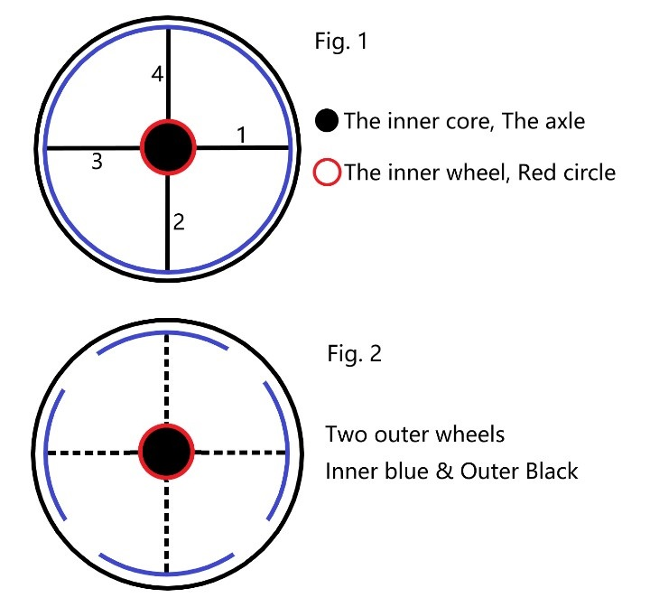
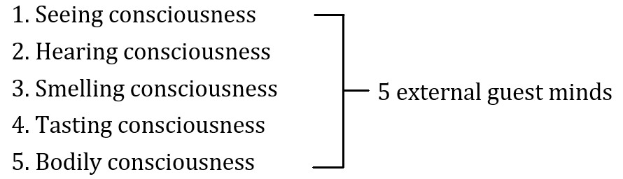
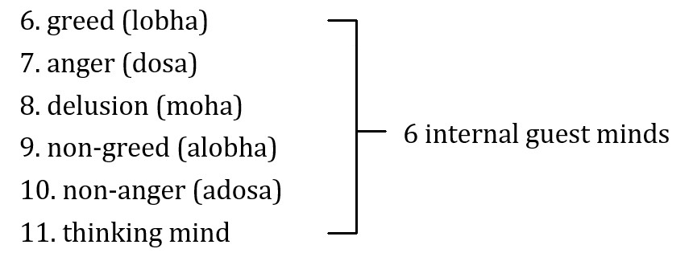

莫哥西亞多開示錄
Dhamma Talks by Mogok Sayadaw
– Emptiness, Conditioned, and Unconditioned
第 5 部 (參考用譯文)
特別聲明：本參考用譯文疏漏、錯繆難免，讀者應慎思明辨。僅供法友參考；並祈藉此拋磚引玉，眾法友能共襄盛舉，共同圓滿此譯事。 Nanda 謹識。
目次
Don’t End up at What Others Say 1
停止的內觀方法（Vipassanā） 7
停止與正念 7
發展與修行的總結 7
比喻內容 13
約束的智慧 13
修行的啟示 13
Breaking the Axle of the Taints 23
圖解輪子的結構 24
輪子的各部分解釋： 25
輪子的分解： 25
兩種緣起（Paṭicca‐Samuppāda） 28
輪子的運轉與停止 29
直接知苦與涅槃的智慧 29
煩惱軸心與輪迴的運轉 33
如何打破煩惱的軸心？ 33
1. 觀察輪迴的構造 33
2. 使用智慧的劍 33
修行的方法 34
1. 起觀（Contemplation of the Mind） 34
2. 培養厭離（Disenchantment） 34
3. 道智的瞬間突破 34
結語 34
有為法與緣起法則 55
苦諦的四重涵義 55
修行的實踐與目標 56
竹子的比喻 56
重要提醒 56
總結 56
The Reality and the Knowing 57
心的觀照方法 64
問答討論： 65
Dukkha Exists and Dukkha Ceases 70
Can’t See Nibbāna with Wrong View 76
主要內容 77
1. 邪見與修行的障礙 77
2. 佛陀糾正比丘的邪見 77
3. 邪見的根源 77
4. 摧毀邪見的方法 77
5. 禪修經驗與見地的危險 78
6. 佛陀的教導：放下錯誤見解 78
正見的重要性與緣起的理解 80
緣起的解脫與錯見的對治 82
真那比丘的經歷 83
錯見與貪愛的危害比較 85
六根門與緣起法的運作 86
生命的真相：一心的連續 86
真那比丘的經歷 86
Khandha Calling and Ñāṇa Going 87
Don’t Waste Your Precious Life 101
講座一 103
The Most Important Thing in Life 107
生命中最重要的事 109
常見者的特徵 109
斷見者的特徵 110
如何觀察身體感覺 110
佛陀的教導 110
修行的成熟與不成熟 111
業與善行的重要性 111
認識自己 113
正法的教導 114
Formation and Impermanence 115
行蘊與無常 118
行蘊與無常的本質 118
行蘊的生滅與洞察智慧 119
無常的必然性 119
洞察的道路 119
結語 120
帶著微笑離世 124
四種類型害怕死亡的人： 124
四種類型不害怕死亡的人： 124
如何達成無畏 125
面對死亡的智慧 125
現實與反思 125
你必須做出決定： 125
死亡恐懼的原因 126
內觀的力量 126
四種無畏之人的修行基礎 126
微笑離世 126
涅槃與終結 127
觀察與觀照 130
正確的修行態度 131
修行指導 131
如何觀察？ 131
內觀的實踐 131
四個關鍵偈頌 132
從無常到涅槃 132
修行與誦念 135
第一日：實踐「親見」（sandiṭṭhiko） 135
親見的意義 135
親見的修行過程 136
親見的力量 136
幽默故事中的啟發 136
總結 137
第二日：直面苦的真相 138
如何了解真相？ 138
兩種真理的比較 138
佛陀的教導：害怕原因，而非結果 139
修行的呼喚：Ehi Passiko 139
直線與曲線的比喻 139
結語：從苦諦到滅諦 139
Khandha Fuel with Kilesa Fire 141
無常的洞察與涅槃 142
五蘊與煩惱的關係 143
內觀的戰鬥 143
從五蘊到涅槃的路徑 143
離開條件法（saṅkhata） 143
實踐三步驟 144
關鍵提示 144
從地獄到永恆 147
四惡趣與人間的特殊意義 147
錯見是輪迴的根源 148
錯見的運作方式 148
正見與錯見的對比 149
錯見的比喻： 149
正見的作用 149
比喻：從此岸到彼岸 149
結語 150
8th January 1961
Don’t end up at others’ mouths. (Animals ending up at human mouth die once, but human being ending up at others’ mouths die for many times). You must end up at your khandhas. What others say could be right or wrong. But your khandha never tell you wrong.
Burmese become Christian and Muslim are ending up at others’ mouths. They are under the danger of wrong view (micchā diṭṭhi). The Buddha said that there was no fault heavier than wrong view. The khandha never tell you it’s a man or a woman. They tell you only form, feeling, mind etc.
Don’t neglect it when they are telling you. They will tell you, Ehi‐passiko—Come! And contemplate me. When you contemplate, it’s not there—Sandiṭṭhiko—it’s visible here and now. Follow it with your own knowledge. Feeling (vedanā) is anicca. It is feeling which is calling at you.
It shows its impermanence to you. Vedanāṁ aniccaṁ—Feeling is impermanent. Is this other people (whatever their belief system) told you? Or the khandha itself shows you? You follow the khandha which shows you that, seeing vedanā anicca, consciousness anicca (mind anicca).
It can’t be wrong. Ehi‐passiko is impermanence (anicca) and sandiṭṭhiko is insight (vipassanā): i.e., form, vedanā, mind, dhamma and their anicca are insight knowledge—anicca vipassanā. When the bed bug bites you don’t follow with your hand but with ñāṇa (knowledge). If you follow with the hand Dependent Arising will continue.
Ehi‐passiko is the caller and sandiṭṭhiko is the follower. In this way becomes akāliko—non temporal, giving you the result without delay (continued the story of Anāthapiṇḍikovāda Sutta).
How to do it and become non‐attachment? You can contemplate the impermanence of the object of attachment. It becomes attachment if you do not see its faults. By seeing the faults and has no attachment. Any dhamma without any person or being is emptiness suññatā dhamma.
Seeing impermanence, their disenchantment and their ending are without person and being is emptiness (suññatā). There are two kinds of emptiness. Seeing their impermanence and disenchantment are the emptiness of without self (atta) and soul (jīva). The second is the emptiness of not‐self (anatta) NIBBĀNA.
不要止步於他人之言
1961年1月8日
不要止步於他人的口中。
（動物止步於人類的口中，死一次；但人類止步於他人的口中，則會死許多次。）你必須止步於自己的五蘊（khandha）。別人所說的話可能正確，也可能錯誤，但你的五蘊永遠不會告訴你錯的事情。
有些緬甸人改信基督教或伊斯蘭教，這便是止步於他人的口中。他們因此處於邪見（micchā diṭṭhi）的危險之中。佛陀說，沒有比邪見更重的過失。五蘊從未告訴你「這是男人」或「這是女人」。它只告訴你：色、受、心等現象。
當五蘊向你說明時，不要忽視它們。
五蘊會告訴你：「Ehi-passiko—來吧！觀照我。」當你觀照它們時，便會發現它們已不存在——Sandiṭṭhiko，這一切可以「現見」。透過自己的智慧去追隨它們。
受（vedanā）是無常的。它正是「受」在召喚你，向你展示它的無常。Vedanāṁ aniccaṁ—受是無常的。這是別人告訴你的嗎？還是五蘊本身向你揭示的？你應追隨五蘊的指引，觀察受的無常、心的無常（consciousness anicca）。
這不會出錯。
Ehi-passiko是無常（anicca）；Sandiṭṭhiko是內觀（vipassanā）。例如：色、受、心、法及它們的無常便是內觀智慧（anicca
vipassanā）。
當床蟲叮咬你時，不要用手去應對，而是用智慧（ñāṇa）觀照。
如果你用手應對，緣起（Dependent
Arising）將繼續。Ehi-passiko是召喚者，Sandiṭṭhiko是跟隨者。以此方式修行便成為Akāliko—即時的法，不延遲地給予結果（延續《阿難陀長者訓誡經》的故事）。
如何做到不執取？
你可以觀照執取對象的無常。如果你看不到它的過失，就會執取。透過看見它的過失，便能遠離執取。任何沒有「人」或「眾生」的法，便是空性法（suññatā
dhamma）。
看見無常，生起厭離，見到其止息，沒有「人」或「眾生」的概念，這就是空性（suññatā）。
空性有兩種：
看見無常與厭離，是「沒有自我（atta）」與「靈魂（jīva）」的空性。
涅槃（Nibbāna）是**「無我（anatta）」的空性**。
～～～～～～～～～～～～～～～～～～～～～～～～～～～～～～～～～～～～～～～
Certainly, here's a translation of the English text into Traditional Chinese, aiming for a natural and readable style:
不要落入他人之口
1961年1月8日
不要落入他人之口。（動物落入人類之口，死一次；人類落入他人之口，則死百次。）你必須落入你的五蘊之中。他人之言，或對或錯。但你的五蘊絕不會欺騙你。
緬甸人皈依基督教、穆斯林，皆落入他人之口。他們處於邪見（micchā diṭṭhi）的危險之中。佛陀說，沒有比邪見更重的過失。五蘊絕不會告訴你是男是女，它們只告訴你色、受、想等。
當它們在告訴你時，不要忽視。它們會告訴你：「諦聽！諦觀我！」當你觀照時，它就在這裡、此時此刻，一目了然（Sandiṭṭhiko）。用自己的智慧去追隨它。感受（vedanā）是無常的。呼喚你的正是感受。
它向你展示其無常性。Vedanāṁ aniccaṁ──感受是無常的。這是其他人（無論其信仰體系為何）告訴你的嗎？還是五蘊本身向你展示的？你追隨五蘊，它向你展示感受無常、意識無常（心無常）。
這絕不會錯。諦聽（Ehi‐passiko）即是無常（anicca），一目了然（Sandiṭṭhiko）即是洞見（vipassanā），也就是色、受、想、行、識及其無常，皆是洞見之智──無常觀。當床蝨咬你時，不要用手去拍打，而要用智慧（ñāṇa）去對待。若用手去拍打，則緣起會持續下去。
諦聽（Ehi‐passiko）是呼喚者，一目了然（Sandiṭṭhiko）是追隨者。如此便成為無時（akāliko），不待時日即得其果（繼續講述《阿那律經》的故事）。
如何做到無執呢？你可以觀照執著對象的無常性。若不見到其過患，便會生起執著。見到過患，則無執著。任何無我、無眾生的法，皆是空（suññatā dhamma）。
見其無常、滅盡，則其無我、無眾生之滅盡，即是空（suññatā）。空有兩種。見其無常、滅盡，即是無我（atta）、無靈魂（jīva）之空。第二種是無我（anatta）之空，即涅槃。
9th January 1961
This khandha will torture you wherever you are in. From the beginning come out from the mother’s womb carrying on the head with aging and death. Don’t think that whatever life you are in will be good. It is really good only with the ending of khandha or the peacefulness. Don’t think it as good while flattering by taṇhā.
The Buddha mentioned it as the truth of dukkha. It was taught by the all knowing Buddha (sabbaññutā Buddha) that we have to take it as a confirmation.
You must end the khandha if you want to end dukkha. You must do the work of ending khandha, doing the ending of the cause. The Buddha taught people according to their temperaments. So don’t reject any of them.
The ways to heavens, Brahma Worlds and Nibbāna, all these were taught by him according to people temperaments. If you discern impermanence, you will reach toward Nibbāna. Continue forward with persistent practice and no need to give up.
You must get the ending of khandha which is Nibbāna. If you are disenchanted to the khandha and you will get it. Don’t let your doubt come in. Even you don’t get it in this life will get it in next life (to fulfill this point yogis must do their practices without any giving up in this life whatever the reasons may be).
Someone getting it in this life will finish it in next life (as Sayadaw). It is not necessary to perform the funeral if any kinds of life are good. (In Burmese a dead body is use as asubha, the Pali word for foulness. Literal translation will be "no need to throw the corpse away".)
When you are still alive this asubha (foul body) discharges urine and excrement. After death, this asubha (corpse) has to be taken away to outside the village because of the disgusting smell.
The works of ending khandha are the contemplation of impermanence and the stopping method. If you can’t stop with the stopping method and out of reach the target, then contemplate impermanence.
I’ll show you the stopping method of insight (vipassanā). Mālunkyāputta requested the Buddha to give him short instruction to Nibbāna (SN.35.95 Mālukyaputtasuttaṃ). Young and old can realize the Dhamma (At the time of the Buddha, young novices; such as Sumana, Paṇḍita, both of them seven years old and old people; such as Rādha, Bākula, both eighty years old etc., they had the realization). You will realize it by meeting a good teacher and with persistent effort.
You will reach Nibbāna if you don’t give the permission for taṇhā to come in. For example, you see a form, if you see the white color, then just stop at white. That is, seeing white and the knowing. Don’t let the other mind states come in.
You all are good runners (practicers) if you just stop at knowing the sweetness when you eat sweet food, and if you just stop at the coldness when you know cold;. for people mostly can’t stop. So, there are two ways of practice; Stopping and contemplation of impermanence.
Using mindfulness (sati) and wisdom (paññā) are also a kind of stopping (i.e. seeing anicca). In this way taṇhā ceases. In the Mūlapaṇṇāsa (Majjhima Nikāya) with contemplation can dispel āsava (taints).
Mālunkyāputta dispelled āsava by stopping. By stopping the sense faculties are in safety and dispel āsava. You can’t find this in books. Sense faculties are becoming safe and no taints come in. If you can’t stop will give you another method.
For example, in the seeing and knowing, contemplate the impermanence of seeing. Both of them are reaching to Nibbāna in the same way. You can stop by just seeing if you are staying alone in a quiet place; whereas it becomes difficult if you are mixed up with other people.
Indriyabhāvanā (development of sense faculty) and bojjhaṅga or maggaṅga bhāvanā (Development of enlightenment factors or the path factors) are the stopping and contemplation methods.
Sometimes even you can forget to contemplate impermanence. A lot of not knowing (avijjā) come into the practice. If kilesas come in then you will slow to get the knowledge.
(According to Sayadaw, stopping methods were only taught by the Buddha to two disciples, i.e., Bāhiya Dārucīriya and Mālunkyāputta. For most people it’s difficult to just stop at whatever arising in the beginning practice. But contemplation is easier.)
停止與觀照
1961年1月9日
五蘊（khandha）無論在哪裡都會折磨你。
從一開始，從母胎出生後，便背負著老與死的重擔。不要認為無論生命處於何種狀態都會是好的。只有五蘊的止息或寂靜才是真正的美好。不應在貪愛（taṇhā）的吹捧中，誤以為生活是美好的。
佛陀指出這便是真理中的苦（dukkha sacca）。這是由全知佛（sabbaññutā Buddha）親自教導的，我們應將此視為最終的確認。
如果你想結束苦，就必須結束五蘊的輪迴。
你必須努力終結五蘊，亦即終結其因（貪愛）。佛陀依眾生的不同性情給予教導，因此不要拒絕任何一種法門。
佛陀教導了通往天界、梵天界和涅槃的道路，這些都因應眾生性情而設立。
若你能觀察到無常（anicca），便會走向涅槃。繼續不懈地修行，不必放棄。你必須努力結束五蘊，這即是涅槃。如果你對五蘊生起厭離，便會達成目標。不要讓疑惑進入心中。即使在此生未能達成，也能在來生完成（這點對修行者尤為重要，無論任何理由都不應放棄此生的修行）。
若有人此生證悟，來生便可圓滿解脫（如禪師所示）。
若生命本質上是好的，那麼死後便不需舉行葬禮（在緬甸文化中，屍體常被用作不淨觀的對象，意即「屍體無需拋棄，因其本質令人厭惡」）。
當人還活著時，這不淨的身體便排出尿液與糞便；死亡後，因屍體發出惡臭，需將其移至村外。
終結五蘊的工作是：觀照無常與停止的方法。
若無法用停止法結束並達到目標，那便應觀照無常。
佛陀曾向馬隆伽子（Mālunkyāputta）教導簡短的涅槃指導（SN.35.95《馬隆伽子經》）。
不論年輕或年老都能證悟佛法（在佛陀時代，年僅七歲的沙彌如須摩那和班迪達證悟，八十歲的年長者如羅陀和婆庫羅也證悟）。你需要遇到一位良師，並以堅定的努力達成證悟。
若你不讓貪愛進入心中，便可走向涅槃。例如：當你看見一個形色，若你僅僅止步於「白色」，那便是停止。也就是說，看見白色並且知道白色，而不讓其他的心念進入。
如果你在吃甜食時，只停留於「甜味」，或在感知冷時，只停留於「冷」，那你便是一位良好的修行者。
然而，大多數人無法止於此。因此，修行有兩種方法：停止與觀照無常。
以正念（sati）與智慧（paññā）進行觀照，也是一種停止的方式（即見到無常）。如此，貪愛便止息。
在《中部經典》第一卷（Mūlapaṇṇāsa）中，佛陀教導透過觀照能驅除漏（āsava，煩惱）。
馬隆伽子透過停止的方法斷除了漏。通過停止，感官根門（sense faculties）便得以安全，並杜絕漏的進入。這些內容在經書中難以找到。透過停止，感官變得安全，沒有煩惱進入。如果你無法停止，則可用另一種方法。
例如：當你看見與知覺一個現象時，便觀照「看見」的無常。這兩種方法（停止與觀照）都可通往涅槃。如果你獨自在安靜之地，停止法可能更容易實現；但在人群中便會變得困難。
修行感官根門的開發（Indriyabhāvanā），以及七覺支與八正道的修行（bojjhaṅga 或 maggaṅga bhāvanā），便是停止與觀照的方法。
有時，你可能忘記觀照無常，並且會有許多不知（無明，avijjā）進入修行。如果煩惱（kilesa）侵入，智慧便會延遲生起。
（禪師指出，停止法僅被佛陀教授給兩位弟子，即巴希亞達盧奇利亞與馬隆伽子。）
對大多數人而言，在修行初期僅僅停止於現象的生起是困難的，但觀照則相對容易。
～～～～～～～～～～～～～～～～～～～～～～～～～～～～～～～～～～～～～～～
止觀
1961年1月9日
此五蘊將無處不在地折磨你。從一開始離開母胎，便背負著老死之重。不要以為任何生命都是美好的。唯有五蘊的滅盡或平靜才是真正的美好。不要被貪欲所迷惑，而誤以為現世是美好的。
佛陀將其宣說為苦諦。全知悉達多佛陀（sabbaññutā Buddha）教導我們必須接受此為真理。
若欲斷除苦諦，必須滅盡五蘊。必須致力於滅盡五蘊，斷除其因。佛陀依眾生根器而教化。故不可排斥任何教法。
通往天道、梵天界、涅槃之道，皆由佛陀依眾生根器而教導。若能洞見無常，便能趨向涅槃。持續精進修行，無需放棄。
你必須證得五蘊的滅盡，即涅槃。若對五蘊生起厭離心，便能證得。不要讓疑惑生起。縱使今生未得，來世必得之。（為達此境界，修行者今生必須不論任何理由皆精進不懈。）
今生證得者，來世便可圓滿。（如尊師所言。）若任何生命皆美好，則無須舉行葬禮。（緬甸語中，死屍被視為asubha，巴利語意為不淨。字面翻譯為「無須拋棄屍體」。）
當你尚在人世，此不淨之身（asubha）排泄大小便。死後，此不淨之身（屍體）因其惡臭而必須被移至村外。
滅盡五蘊之法，即觀照無常與止觀法門。若無法以止觀法門止息而達不到目標，則觀照無常。
我將向你展示洞見（vipassanā）的止觀法門。《摩訶僧祇律》卷三十五第95經（《摩訶律問經》）中，摩訶律子請求佛陀為其開示簡要之涅槃法門。
無論年幼或年長皆可證悟法義。（佛陀時代，年幼的比丘，如須摩那、槃迪陀，皆七歲，年長者，如羅陀、跋拘羅，皆八十歲，皆已證悟。）遇善知識，精進不懈，便可證悟。
若不允許貪欲生起，便可達至涅槃。例如，見一色，若見其白，則止於白處。即見白而知之，不讓其他心念生起。
若能於食甘味時止於知其甘，知冷時止於知其冷，則汝等皆是善行者（修行者）；而多數人無法止息。故修行有二法：止觀與觀照無常。
運用念（sati）與慧（paññā），亦是一種止觀（即見無常）。如此，貪欲即滅。於《中阿含經·雜阿含經》中，以觀照可斷除漏（āsava）。
摩訶律子以止觀斷除漏。以止觀使六根清淨而斷除漏。此不可於書中尋得。六根清淨，無漏可入。若無法止息，則另有法門。
例如，於見與知時，觀照見之無常。二者皆以同等方式趨向涅槃。若獨處靜室，僅以見即可止息；若與他人混雜，則難以止息。
六根觀（Indriyabhāvanā）與七覺支、八正道支之修習（bojjhaṅga or maggaṅga bhāvanā），皆是止觀法門。
有時甚至會忘記觀照無常。無明（avijjā）大量湧入修行中。若煩惱生起，則證得智慧的速度將減緩。
（據尊師所言，止觀法門僅為佛陀傳授予兩位弟子，即跋希陀羅居士與摩訶律子。對多數人而言，於初學階段即止息於任何生起的現象，極為困難。而觀照則較為容易。）
11th January 1961
Worldlings (puthujjana) were confused with the knowledge (ñāṇa). Therefore the Buddha gave this talk (Kimsupama Sutta ??). You will see Nibbāna if you discern the arising and passing away of phenomena. You must follow to the end of it (i.e., impermanence).
You can contemplate anyone of the five khandhas and when it comes to an end will see Nibbāna. Don’t be in low spirit. Minds arise and you observe them and not there. If you know it’s not there and that’s enough.
The mind observes the mind. Minds can’t arise together or can’t be in parallel. If you contemplate the mind all other khandhas are including in it. (The five khandhas are arising and vanishing together).
Just contemplate one of them which you prefer (the Buddha taught four objects for insight depending on the human characters. It is important to choose a right object for a yogi. (Some yogis' experiences support this point.)
During the first part, impermanence is before and followed by knowledge (ñāṇa) after (i.e., anicca / magga). At last Nibbāna is before and followed by Path knowledge after. (i.e., Nibbāna / maggaṅga) These two words are very important.
(Sometimes Sayadaw’s Dhamma explanations for direct experiences were subtle and profound. They can’t be listened superficially. There are a lot of food for the heart and thought for careful reflection).
Without discerning impermanence and the mundane knowledge (lokiya magga) can’t arise. Without ending of impermanence you can’t see Nibbāna. In between them (i.e., insight knowledge and path knowledge) you will only see impermanence.
Without a teacher you will have confused view and misunderstanding (in the sutta, the worldling monk had confusion). Worldlings are very strong in arguments because of their talkativeness.
“The main thing is discerning impermanence of whatever you are contemplating (this was the fourth arahant’s instruction to the worldling monk).” You can contemplate anyone of the four satipaṭṭhāna to your preference.
For example, if you prefer feeling and whatever feeling arises contemplate its impermanence, disenchantment and the ending of it. May be you’ll complain as can’t see impermanence.
For example, during the sitting you want to get up. After getting up the wanting mind is gone. Again, you want to sit down, after you sit down and the wanting mind is gone. Is this not impermanence?
無常
1961年1月11日
凡夫（puthujjana）因缺乏智慧（ñāṇa）而感到困惑，
因此佛陀給予了這次開示（可能是《什麼比喻經》（Kimsupama
Sutta））。若能辨知現象的生起與滅去，便能見到涅槃。你必須追隨這種觀照直至最終（即無常的止息）。
觀照五蘊中的任一蘊，當它止息時便能見到涅槃。
不要喪失信心。心生起時，你觀照它，便會發現它不再存在。只要知道「它已不在」，這就足夠了。
心觀照心。
心不能同時並行生起。若你觀照心，其他的五蘊也被包含在其中（因為五蘊是同時生滅的）。
你可以選擇自己喜歡的對象進行觀照。
佛陀依據眾生的性情教導了四種內觀對象（四念處）。為修行者選擇合適的觀照對象是非常重要的（有些修行者的經驗證實了這一點）。
修行的進程
在修行的初期，無常在前，而智慧（ñāṇa）在後（即無常
/
道智，anicca
/ magga）。最終階段，涅槃在前，而道智在後（即涅槃
/
道智，Nibbāna
/ maggaṅga）。這兩個階段的關鍵詞非常重要。
（禪師的許多法義深奧微妙，直接針對經驗，不能僅僅表面理解，而需深入反思。）
沒有辨識無常，世間的道智（lokiya
magga）便無法生起。
而若無法止息無常，就無法見到涅槃。在內觀智慧（insight
knowledge）與道智（path
knowledge）之間，你只能看到無常的顯現。
若沒有老師的指導，容易產生混淆與誤解。
（經中提到，那位凡夫僧人因缺乏指導而困惑。）凡夫擅於爭論，這是因為他們多言而非真智。
核心教導
「最重要的是辨識你正在觀照的任何現象的無常。」
（這是第四位阿羅漢對那位凡夫僧人的指導。）
你可以選擇自己偏好的四念處之一進行觀照。
例如，若你偏好受（vedanā），無論何種受生起，觀照其無常、厭離（nibbidā），以及其止息（nirodha）。
可能你會抱怨看不到無常。例如：
當你在坐時，想要站起來。當你站起來後，那「想要站起來」的心便消失了。
再次，你想坐下；當你坐下後，那「想要坐下」的心也消失了。
這難道不是無常嗎？
～～～～～～～～～～～～～～～～～～～～～～～～～～～～～～～～～～～～～～～
無常
1961年1月11日
凡夫（puthujjana）對智慧（ñāṇa）感到困惑。因此，佛陀說法（《金譬喻經》）。若能洞見諸法生滅，便可見得涅槃。必須追隨至其盡頭（即無常）。
觀照五蘊中任何一蘊，當其滅盡時，便可見得涅槃。不要氣餒。心念生起，你觀照之，而其不在。若知其不在，則已足矣。
心觀照心。心念無法同時生起，亦無法平行存在。若觀照心，則其他四蘊皆包含其中。（五蘊生滅相依。）
僅觀照其中所好者。（佛陀依眾生根器而教導四念處。為修行者選擇適當的觀照對象極為重要。（某些修行者的經驗支持此點。）
在初期，無常在前，智慧（ñāṇa）隨後（即無常 / 道）。最後，涅槃在前，道智隨後。（即涅槃 / 道支）這兩個詞語極為重要。
（有時尊師對直接體驗的法義解釋微妙而深邃。不可淺聽。其中蘊含許多滋養心靈、值得深思的內容。）
若不洞見無常，則世間智（lokiya magga）無法生起。若不滅盡無常，則無法見得涅槃。其間（即洞見智與道智），你僅能見得無常。
無師引導，則會生起錯謬的觀點與誤解。（經中，凡夫比丘生起困惑。）凡夫因好辯而善於爭論。
「要緊之處在於洞見所觀照對象之無常。」（此為第四阿羅漢對凡夫比丘之教導。）可依喜好觀照四念處中任何一者。
例如，若喜好感受，則於任何感受生起時，觀照其無常、厭離與滅盡。或許你會抱怨無法見得無常。
例如，於坐禪時，欲起。起後，欲起之心念滅盡。復欲坐，坐後，欲坐之心念滅盡。此不謂無常乎？
13th and 15th January 1961,
21st, 22nd March 1962
(The Buddha was the most remarkable teacher among all the spiritual teachers. In the Sutta Nikāya, he used similes, analogies, metaphors etc. to explain his teachings. It directly went into the hearts of listeners and effected strongly.
Sometimes it had subtle and profound meanings in itself and found out by the listeners with serious contemplation. We have to use the sutta teachings by serious contemplation to develop wisdom faculty and practice.
Sayadaw gave four talks based on the Salāyatanasaṃyutta, The simile of the Six Animals. The Buddha taught to the monks how to restraint the six sense‐faculties. It’s about restraint and non restraint and their consequences.
In this sutta the Buddha gave the analogy or simile of the six animals which represented the six sense‐faculties of eye, ear, nose, tongue, body and mind respectively.)
馴養六種動物
1961年1月13日與15日，1962年3月21日與22日
（佛陀是所有精神導師中最傑出的教師。）
在《經藏》中，佛陀經常使用比喻、類比和譬喻來解釋教義。這些教導直達聽者的內心，產生強烈的影響。有時，這些譬喻本身具有微妙而深奧的含義，需聽者通過深思熟慮來發現其中的智慧。
我們需要透過認真地思考經文的教導，以培養智慧並付諸實踐。
這四次開示的基礎
禪師的開示基於《六處相應》（Salāyatanasaṃyutta）中的《六動物譬喻經》。佛陀向比丘們教導了如何約束六根（sense
faculties）。內容涉及六根的約束與放縱及其後果。
在這部經中，佛陀將六根比喻為六種動物：
眼（eye），如猴子
耳（ear），如狗
鼻（nose），如蛇
舌（tongue），如鳥
身（body），如豬
意（mind），如野狼
這些動物分別代表了眼、耳、鼻、舌、身、意六根。
如果把這六種動物分別綁在六根柱子上，牠們會各自掙扎，試圖奔向自己偏好的方向：
猴子想爬到樹上
狗想跑向垃圾堆
蛇想鑽進洞穴
鳥想飛向天空
豬想躺在泥地裡
野狼則想逃入森林
牠們各自代表六根的傾向，象徵放縱六根時的混亂狀態。若無約束，這些感官便會隨著外在的感官對象（色、聲、香、味、觸、法）四處漂流，導致苦與煩惱的增長。
佛陀的教導
若將這六種動物綁在一根堅固的柱子上（象徵正念），牠們在掙扎一段時間後，最終會疲憊不堪，回到柱子旁安靜下來。這象徵著通過正念與智慧（sati
和 paññā）的力量，約束六根，避免被感官對象牽引。
未約束的結果
若放縱六根，隨外境漂流，便如未馴服的動物，導致苦與煩惱的增長，並進一步加深生死輪迴的束縛。
約束的結果
通過正念的約束，修行者能穩定內心，不再被感官對象所牽引，進而達到平靜與解脫。
禪師的提醒
這個譬喻啟示我們：六根的馴服是解脫的關鍵。以正念和智慧為依靠，將六根約束於當下的正知正見中。我們需要如實觀照感官對象的本質——它們是無常、苦、無我——這樣才能從煩惱中解脫。
～～～～～～～～～～～～～～～～～～～～～～～～～～～～～～～～～～～～～～～
Certainly, here's a translation of the English text into Traditional Chinese, aiming for a natural and readable style:
調伏六根
1961年1月13日、15日，1962年3月21日、22日
（佛陀是所有精神導師中最傑出的老師。在《經集》中，他運用譬喻、比喻、隱喻等方式來闡釋教法。這些教法直接入心，產生強烈的影響。
有時，其中蘊含著微妙而深邃的含義，需要聽者認真思惟才能領悟。我們必須透過認真思惟經教，來發展智慧和實踐。
尊師曾以《六處經》為基礎，講述「六獸喻」四次。佛陀教導比丘們如何調伏六根：眼、耳、鼻、舌、身、意。這是關於調伏與放逸，以及其後果的教法。
在這個經文中，佛陀以六種動物作比喻，分別代表眼、耳、鼻、舌、身、意六根。）
～～～～～～～～～～～～～～～～～～～～～～～～～～～～～～～～～～～～～～～
T1
A man would catch six animals; a snake, a crocodile, a bird, a dog, a jackal and a monkey with different domains and feeding grounds, and tie them each with a strong rope. Having done so, he would tie all the ropes together with a knot in the middle and release them.
The six animals with different domains and feeding grounds would each pull in the direction of its own feeding ground and domain.
(It we contemplate this point it’s very funny and humorous and a lot of compassion to these animals. Human beings are also in the same situation even may be worse than animals.
The knot in the middle was representing ignorance and human being and the six ropes were taṇhā and connected with like six sense‐faculties, here the six animals, if we take this simile into our human life will find out that how funny and stupid human beings are.)
The snake wanted to enter an anthill. The crocodile wanted to enter the water. The bird wanted to fly up into the sky. The dog wanted to enter a village. The jackal wanted to enter a charnel ground and the monkey wanted to enter a forest respectively.
And then the Buddha taught the monks how to train the six animals (i.e., eye, ear, nose, tongue, body and mind), binding all the six animals to a strong post or pillar. Then, the six animals, with different domains and feeding grounds, would each pull in the direction of its own.
After struggling for sometime all became worn out, fatigued and lied down at the post. Here the strong post represented mindfulness practice.
The Buddha’s business was to teach people until they understood. You all business is after understand have to practice. Making wealth is tiring. After death everything left behind and wasted (Sayadaw talked about the six animals represented like six sense‐faculties.)
Each sense door connects with ignorance and craving. Therefore the khandha connects with avijjā and taṇhā. The six ropes are taṇhā. Tie the ropes together with a knot is ignorance. Herding the animals is yogi. All six of them are not the same nature and preferences.
(Sayadaw explained each animal nature corresponded to the six sense‐faculties of the nature in human life.) You all come to this human world look after these animals. To free from their pulling away you must strike a strong vipassanā post in the ground.
T1
假設有一個人捉住了六種動物：一條蛇、一條鱷魚、一隻鳥、一條狗、一隻豺狼和一隻猴子。這些動物各自有不同的生活領域和覓食地。這個人用強繩將每隻動物分別綁住，然後將這六根繩子打成一個結，並將它們放開。
這六種動物因各自的生活領域和覓食地不同，便各自朝著自己的方向用力拉扯。
（若我們思考這一情境，不禁感到幽默之餘，對這些動物生起深切的憐憫心。人類其實也處於類似甚至更糟的境地。
結繩的中心象徵無明（avijjā），而六根繩子象徵貪愛（taṇhā），與六根相連。在這個比喻中，若將它應用於人類生活，我們會發現自己的行為何其滑稽且愚蠢。）
動物的行為
蛇想要鑽進蟻穴；鱷魚想要潛入水中；鳥想要飛向天空；狗想要進入村莊；豺狼想要進入墳場；猴子則想要進入森林。
佛陀的教導
佛陀教導比丘們，如何馴服這六種動物（即眼、耳、鼻、舌、身、意）。將六種動物全綁在一根堅固的柱子上（象徵正念的修習）。
在被綁住後，這六種動物雖然依舊各自朝向自己的領域掙扎，但掙扎了一段時間後，牠們終於筋疲力盡，便在柱子旁安靜下來。此處的堅固柱子代表正念的修行。
禪師的提醒
佛陀的事業是教導人們，直到他們真正理解法義。
而你們的責任則是理解之後，必須付諸實踐。
追求財富令人疲憊，死亡之後一切皆徒勞無益。
（禪師進一步闡述六種動物象徵六根——眼、耳、鼻、舌、身、意——的特性。）
每一個感官門戶都與無明和貪愛相連，因此五蘊（khandha）便與無明（avijjā）和貪愛（taṇhā）相連。六根繩子代表貪愛，繩結代表無明。馴服這些動物的人是修行者（yogi）。
動物與感官的本質
這六種動物各有不同的性情和偏好。禪師解釋了這六種動物的本性如何對應於人類生活中的六根。
修行的啟示
我們來到這個人間，正如為了照料這些動物一樣，必須以堅固的內觀（vipassanā）柱子固定根門，防止它們向外拉扯，擺脫貪愛與無明的束縛。
～～～～～～～～～～～～～～～～～～～～～～～～～～～～～～～～～～～～～～～
調伏六根之喻
一位男子捕捉六種動物：蛇、鱷魚、鳥、狗、豺狼、猴子，牠們分別棲息於不同領域，覓食於不同場所。他用粗繩將牠們一一綁住，再將六條繩子結在一起，打成一個結，然後放牠們走。
這六種棲息於不同領域、覓食於不同場所的動物，各自朝著自己的領域和覓食場所的方向拉扯。
（若思惟此點，甚為有趣、幽默，且對這些動物生起大悲心。人類亦處於相同境地，甚至可能比動物更為悲慘。
中間的結代表無明與眾生，六條繩子代表貪欲（taṇhā），與六根（在此譬喻中，以六種動物代表），若將此譬喻應用於人類生活中，便能發現人類是何等愚蠢可笑。）
蛇欲入蟻穴，鱷魚欲入水中，鳥欲飛向天空，狗欲入村落，豺狼欲入塚間，猴子欲入森林。
爾後，佛陀教導比丘們如何調伏六根（即眼、耳、鼻、舌、身、意），將六根繫於一根堅固的柱子上。然後，這六種棲息於不同領域、覓食於不同場所的動物，各自朝著自己的方向拉扯。
掙扎一番後，牠們皆疲憊不堪，躺倒於柱旁。此堅固的柱子代表念處修行。
佛陀的事業在於教導眾生，直至其明瞭。汝等的事業在於明瞭之後，須勤加修行。積聚財富勞苦不已。死後，一切皆留於塵世，徒然虛耗。（尊師說此六種動物代表人類的六根。）
每一感官之門皆與無明與貪欲相連。故五蘊與無明與貪欲相連。六條繩子即貪欲。將繩子結在一起即無明。牧養動物者即修行者。六者皆性情不同，喜好各異。
（尊師解釋每種動物的特性對應於人類生活中六根的特性。）汝等皆來此人間，照料這些動物。欲脫離牠們的拉扯，必須在地面豎立堅固的觀照之柱。
～～～～～～～～～～～～～～～～～～～～～～～～～～～～～～～～～～～～～～～
T2
This khandha is not following your wishes. You have to live together with this khandha without any goodness in itself. It’s getting old. Has to look after and by feeding it, but it still becomes sick.
The reason why both of our eyes don’t get the light of knowledge is the power of ignorance. Taṇhā is also very blindly carving to things. So always we are living with the truth of dukkha. This khandha is inflicting with pain and sores.
Just look at it whether it’s true or not because it’s the aggregates of feeling. Now, you are sitting. Can you sit without any change? Inner feeling flares up. It’s the vipāka vaṭṭa khandha—the resultant body of the rounds of existence (created by defilements and kamma).
With the matters of defecating and urination, hunger and thirst etc. a lot of things are going on with this body. In these situations, a person in vedanā (here referred to dukkha) is suitable for him to go through into the thorny bushes (here means the six thorny sense‐objects). You can’t keep it anywhere for safety.
There is no feeling which gives you any good results. Pleasant feeling (sukha vedanā) connects to the greed of Dependent Arising. Unpleasant feeling (dukkha vedanā) connects to the anger of Dependent Arising.
Neutral feeling (upekkhā vedanā) connects to the delusion of Dependent Arising. Every feeling arises will be good only by contemplation. On the original feelings pierce by the thorns of six senses objects that pleasant mental feelings (somanassa), unpleasant mental feeling (domanassa) and neutral mental feeling (upekkhā) are arising again.
We must end the feeling. Inside us have full of feelings and then we are going into the outside thorny forest and new feelings arise. You can’t live without any feeling. It was like a monkey had a sore which he scratched randomly with hand and it becomes serious. The Buddha referred to the body in 40 different ways as diseases.
Therefore, what time you are free from it. We are living with the external and outer sores (Sayadaw explained each one of the thorns, i.e., sense objects with their examples). With outer thorns and feelings arise inside.
Your inner feelings (i.e., bodily feelings) are fulfilled by your past prayers and I can’t do anything for you. (For a popular example, later Buddhists want to be born again and again and they are making vows and prayers for that purpose).
We can make adjustment to the mental feelings. There are many thorns outside. The majority of common people know only the vedanā of near death on bed. They don’t know there are vedanā inside and outside.
Contemplate the impermanence of form, sound, smell etc. (i.e., seeing, hearing, etc. ). In this way knowledge arises and taṇhā will not follow behind vedanā. (By contemplation of seeing, hearing etc. not lead to taṇhā.)
For finishing all the vedanā by contemplation, you can contemplate the impermanence of sense objects and the knowing mind (consciousness). Therefore vedanā not arises and also finishing of taṇhā. If internal mental feeling arises can contemplate its impermanence and will not connect to taṇhā.
T2
這個**五蘊身（khandha）**並不會按照你的意願行事。你必須與這個身體一起生活，即使它本身並沒有任何實質的美好。它在逐漸衰老，你得悉心照料並餵養它，但即便如此，它仍會生病。
雙眼為什麼得不到智慧之光？
這是因為無明（avijjā）的力量。貪愛（taṇhā）也是盲目的，對事物懷著強烈的執著。因此，我們一直活在苦諦之中。這個五蘊身被痛苦和瘡疤所折磨。
仔細觀察，這是否屬實，因為它是感受的聚合體（vedanākkhandha）。現在你正在坐著，你能夠一動不動地坐著嗎？內在的感受在不斷變化。這是輪迴果報的身體（vipāka vaṭṭa khandha），是由煩惱（kilesa）和業（kamma）所造。
五蘊身的本質
因為排泄、飢餓、口渴等，這個身體不斷經歷許多狀況。在這些情境中，感受（vedanā）適合被比喻為進入一片荊棘叢林（這裡指六根接觸外境的感受）。無法將它安置在任何地方以獲得安全。
沒有一種感受能帶來真正的美好結果：
樂受（sukha vedanā）會引發貪愛，與緣起中的貪相連；
苦受（dukkha vedanā）會引發瞋恨，與緣起中的瞋相連；
捨受（upekkhā vedanā）會引發癡，與緣起中的無明相連。
每一種感受的生起，唯有通過觀照才能轉化為善法。原本的感受會被六根接觸外境所刺傷，而產生樂受（somanassa）、苦受（domanassa）和捨受（upekkhā）。
結束感受的束縛
我們必須終結感受的影響。我們內在充滿感受，同時又進入外在的荊棘叢林，從而產生新的感受。你無法活著而沒有感受。
這情況就像一隻猴子身上長了一個瘡疤，牠隨意用手抓癢，卻使瘡疤更加嚴重。佛陀曾以四十種方式將身體比喻為疾病。
禪師的提醒
那麼，何時才能脫離感受的束縛？我們與內外的瘡疤共同生活著（禪師舉例說明了六根接觸外境時產生的「刺」）。外在的「刺」會引發內在的感受（身體感受）。
內在的感受是你過去發願和祈求的結果，這是我無法改變的。
（舉例來說，許多佛教徒發願希望不斷輪迴投生，並為此進行祈求與回向。）
我們可以調整內心的感受。外界充滿了「刺」，但大多數人只知道臨終時的感受，卻不理解日常生活中內外感受的存在。
修行的方法
觀照色、聲、香、味等（即「看見」、「聽到」等現象）的無常。通過這樣的觀照，智慧（ñāṇa）會生起，貪愛便不會隨著感受而生起（透過觀照「看見」、「聽到」等現象，可以阻止貪愛的延續）。
為了終結所有的感受，你可以觀照感官對象和認知心（識）的無常。因此，感受（vedanā）不再生起，貪愛也隨之止息。當內在的心靈感受生起時，觀照它的無常，便不會與貪愛相連。
～～～～～～～～～～～～～～～～～～～～～～～～～～～～～～～～～～～～～～～
此身之苦
此五蘊不依汝意。汝須與此無有善性的五蘊共處。其漸老衰。須照料、餵養之，然其仍生疾苦。
無明之力，使吾人之雙眼皆不得見智慧之光。貪欲（taṇhā）亦盲目地渴求事物。故吾人常與苦諦共存。此五蘊帶來痛苦與瘡傷。
僅觀察之，是否真實，因其乃感受之聚合。今汝坐禪，汝能無有變化而坐乎？內在感受熾盛。此乃果報之身（vipāka vaṭṭa khandha）──由煩惱與業力所造之身。
排泄大小便、飢渴等事，此身中諸事紛擾。於此等境地，處於感受（vedanā）（此指苦）之人，適宜進入荊棘叢中（此指六根之境）。汝無法將其安置於任何安全之處。
無有感受能帶來善果。樂受（sukha vedanā）與緣起之貪相連。苦受（dukkha vedanā）與緣起之瞋相連。
捨受（upekkhā vedanā）與緣起之癡相連。任何生起的感受，唯有透過觀照方能轉為善。於本來的感受上，被六根之境之刺所刺傷，樂受、苦受、捨受等心感受復又生起。
吾人必須滅盡感受。吾人內心充滿感受，爾後進入外在的荊棘之林，新感受復又生起。汝無法無有感受而生。如猴身生瘡，隨手亂抓，而致瘡傷嚴重。佛陀以四十種不同方式，稱此身為病苦。
故汝何時方能脫離之。吾人與外在之瘡傷共存。（尊師解釋每一根刺，即六根之境，及其例證。）因外在之刺，內在感受生起。
汝之內在感受（即身受）由汝過去之祈願所成就，吾不能為汝作任何事。（舉例言之，後世佛教徒欲生生世世，而為此發願祈禱。）
吾人可調伏心感受。外在有許多荊刺。多數凡夫僅知臨終床榻上之感受。不知內外皆有感受。
觀照色、聲、香等之無常（即見、聞等）。如此，智慧生起，貪欲（taṇhā）不隨感受而生。（透過觀照見、聞等，不致於生起貪欲。）
欲透過觀照滅盡一切感受，可觀照六根之境與知覺心（意識）之無常。如此，感受不生，貪欲亦滅。若內在心感受生起，可觀照其無常，不致於與貪欲相連。
～～～～～～～～～～～～～～～～～～～～～～～～～～～～～～～～～～～～～～～
T3
People with sores (defilements) have greed, anger and delusion dhammas latent in them. They don’t arise without contacting with sense objects. If you push through into the thorny bushes—the forest of sense objects then the latent dhammas arise as greed, anger and delusion.
Therefore we always have latent sores within us. The Buddha warned us not pushed ourselves into the thorny bushes.
If you go into the forest of sense objects and no greed, anger, and delusion arise is without faults. The Buddha gave an example how to look after the six animals. Bound each of these six animals with strong ropes and together made a knot.
The other five animals would follow behind the strongest one as pulling by it. (Sayadaw told the nature of six animals). Every day we have to look after the six sense‐doors like the six animals. Always we are pulling away by one of the strongest one without our preferences. I will teach you the way to control them.
T3
內心有瘡疤（煩惱）的人，隨身攜帶著貪、瞋、癡的潛伏煩惱（anusaya kilesa）。如果不接觸感官對象（sense objects），這些煩惱就不會顯現。但如果你推進到荊棘叢林——也就是感官對象的世界——那麼潛伏的煩惱就會因接觸而生起，化為貪、瞋、癡。
因此，我們的內心始終帶著這些潛伏的「瘡疤」。佛陀警告我們，不要將自己推進這片「荊棘叢林」。
無過失的感官接觸
如果你進入感官對象的世界，但沒有引發貪、瞋、癡，那麼這是沒有過失的。佛陀給了一個例子，說明如何照顧六種動物：
將六種動物（眼、耳、鼻、舌、身、意）分別用強繩綁住，並將它們的繩子打成一個結。
其中最強壯的動物會牽引其他五種動物跟隨它的方向（禪師詳細描述了這六種動物的本性）。
六根的管理
我們每天都要像照顧六種動物一樣，照顧自己的六根（眼、耳、鼻、舌、身、意）。但事實上，我們經常被最強的感官所牽引，而非由自己控制。
禪師的指導
我將教你如何控制這些「動物」。
～～～～～～～～～～～～～～～～～～～～～～～～～～～～～～～～～～～～～～～
調伏六根之法
有煩惱之人，其內潛藏著貪、瞋、癡等法。若不接觸六根之境，則不生起。若闖入荊棘叢中──六根之境，則潛藏之法即生起為貪、瞋、癡。
故吾人內心恆有潛藏之瘡傷。佛陀告誡吾人，不可闖入荊棘叢中。
若入六根之境，而無貪、瞋、癡生起，則無過失。佛陀舉例說明如何照料六根。以粗繩綁住每一動物，並結為一結。
其他五種動物將跟隨最強者，由其拉扯。（尊師說明六種動物之特性。）每日須照料六根之門，如照料六種動物。吾人恆被其中最強者所拉扯，而無從選擇。我將教汝調伏之法。
～～～～～
「那些心有煩惱的人，內心潛藏著貪、瞋、癡這些不好的東西。如果不接觸外界的事物，這些不好的東西就不容易被激發出來。但如果我們去接觸外在的世界，也就是說，我們去觸碰那些像荊棘一樣的感官事物，那麼潛藏在內心的貪、瞋、癡就會被激發出來。
所以，我們的心中總是潛藏著一些不好的東西。佛陀告誡我們，不要去觸碰那些像荊棘一樣的外在事物。
如果我們接觸外在的事物，卻沒有生起貪、瞋、癡，那就沒有問題了。佛陀用了一個比喻來說明如何調伏這六根：把這六根比喻成六隻被繩子綁在一起的動物。
這六隻動物中，總有一隻是最強壯的，其他的動物都會跟著它走。就像我們每天都要面對六根一樣，我們總是會被其中最強的那一根所牽引，而無法自主。接下來，我會教你們如何控制它們。」
～～～～～～～～～～～～～～～～～～～～～～～～～～～～～～～～～～～～～～～
T4
(Retold the nature of the six animals) We are bound with the six animals which have different nature and preference to the ropes of taṇhā and we're herding them by the knot of ignorance.
Strike a strong post on the ground and bind them there if you don’t want to die as being pulled by them. They have to come and lie down there. Therefore the Buddha taught us to live with one of the satipaṭṭhāna. Without it we are living and dying with the impermanence of lives. It does not become the knot of ignorance if you can contemplate before the taṇhā comes in.
You must contemplate whatever arises from the six senses doors (Sayadaw instructed contemplation of the mind—cittānupassanā). Living with lacking of mindfulness is a life of bad living and dying. Therefore the Buddha said that the way of mindfulness was very important.
T4
（重述六種動物的本性）我們與這六種動物（眼、耳、鼻、舌、身、意）相連，它們各自具有不同的本性和偏好，被貪愛（taṇhā）的繩索綁住，由無明（avijjā）的結牽引著。
如果你不想被牽著走，導致最終的死亡，
你必須在地上立下堅固的柱子，並將它們牢牢地綁在這根柱子上。這些動物掙扎一番後，終將屈服，安靜地伏在柱子旁。
因此，佛陀教導我們，要與**四念處（satipaṭṭhāna）**其中之一共同生活。如果沒有正念，我們就會在無數生死輪迴的無常中生存和死亡。
無明與觀照
如果在貪愛（taṇhā）出現之前就能觀照，無明便無法形成結。
因此，必須觀照從六根門戶（眼、耳、鼻、舌、身、意）生起的任何現象。
（禪師特別指導觀照心的修行，即心念處（cittānupassanā）。）
生命與正念
缺乏正念的生活，是不良的生活與死亡。
因此，佛陀說，正念的修行是非常重要的。
～～～～～～～～～～～～～～～～～～～～～～～～～～～～～～～～～～～～～～～
調伏六根，擺脫無明
（重述六種動物的特性）我們就像被貪欲（taṇhā）的繩子綁住的六隻動物，牠們各有各的個性、各有所好，而我們則被無明的結點所牽引著。
如果不希望被這些動物拉著走向死亡，就必須在地上豎立一根堅固的柱子，將牠們綁在上面。牠們最終會疲憊地倒在柱子旁。因此，佛陀教導我們要專注於其中一個念處。否則，我們將在無常的生命中生生滅滅，而無法擺脫無明的束縛。
如果能在貪欲（taṇhā）生起之前就加以觀照，就不會形成無明的結點了。
必須觀照從六根之門生起的任何事物。（尊師指導觀照心──cittānupassanā。）缺乏正念地生活，是錯誤的活法，也是錯誤的死法。因此，佛陀說正念之道非常重要。
～～～～～～～～～～～～～～～～～～～～～～～～～～～～～～～～～～～～～～～
5th January 1959,
16th January 1961 and 24th October 1961
[Those three talks were delivered at different times, but they had connection and using the wheel symbol to explain the Dhamma and practice. The picture of the wheel was mainly connected with the third talk but it also can be used for the other two talks.]

Fig 1: a complete set of the wheel with 4 spokes
Fig 2: separated parts of the wheel
The inner core, the axle (āsava)
The inner wheel, the red circle (avijjā and taṇhā)
The two outer circles, two outer wheels
The inner blue and the outer black
It becomes four circular parts after being taken out the parts (Explaining the above wheel picture).
There are all five parts in it:
1. Inner core—axle represents three āsava (taints); i.e., Taints of sensuality (kāmāsava), Taint of becoming (bhavāsava) and Taint of view (diṭṭhāsava). Combining them together becomes taṇhā and diṭṭhi (craving and wrong view)
2. The red circle—inner wheel represents ignorance and craving (avijjā and tanhā)
3. The 4 spokes are types of kamma created by beings. 1 and 2 are wholesome and unwholesome kammas. 3 and 4 are rūpa and arūpa jhanas.
4. Outer blue circle—the outer wheel represents the five khandhas or khandha
5. Outer black circle or outermost wheel represents old age, sickness and death
which follow or rolling with the blue khandhas. It’s made by iron or metal to protect the blue which is made of wood not to become worn out.
破除煩惱之軸
1959年1月5日、1961年1月16日、1961年10月24日
這三次開示在不同時間進行，但彼此之間有關聯，並且使用了「輪子」的比喻來解釋佛法和修行方法。所展示的「輪子圖示」主要與第三次開示相關，但同樣可以應用於其他兩次開示的內容。
圖 1：完整的輪子，帶有四根輻條
圖 2：分解後的輪子部件
內部核心——軸（āsava）
軸代表三種煩惱（āsava）：
欲愛漏（kāmāsava）：對感官享受的貪愛；
有漏（bhavāsava）：對存在或生存的執著；
見漏（diṭṭhāsava）：錯誤的觀念或見解。
將這三種煩惱合併，便成為貪（taṇhā）與邪見（diṭṭhi）。
紅色圓圈——內輪
內輪代表無明（avijjā）與貪愛（taṇhā）。
四根輻條
四根輻條代表眾生造作的業（kamma）：
兩根輻條代表善業與惡業；
另兩根輻條代表色界禪（rūpa jhāna）與無色界禪（arūpa jhāna）。
藍色外圈——外輪
藍色外圈代表五蘊（khandha），即身心聚合體。
黑色外圈——最外層輪
黑色外圈代表老、病、死（jarā,
vyādhi, maraṇa），
它隨著藍色的五蘊輪滾動，並保護由木頭製成的五蘊輪免於耗損（黑色外圈由鐵或金屬製成）。
完整的輪子由五個部分組成，當這些部分被拆解後，輪子失去了完整性。這象徵通過修行與觀照，逐步解除構成輪迴的條件（煩惱、無明、貪愛等）。
這段開示強調，如果能破除核心軸（āsava，煩惱），整個輪子的結構就會瓦解，從而止息老病死，達到解脫。
～～～～～～～～～～～～～～～～～～～～～～～～～～～～～～～～～～～～～～～
斷除煩惱之軸
1959年1月5日、1961年1月16日、1961年10月24日
[這三次法語雖然在不同時間講授，但彼此相關，並運用車輪的象徵來解釋法義與修行。車輪的圖像主要與第三次法語相關，但也可應用於其他兩次法語。]
[圖1：完整的四輻輪]
[圖2：車輪的各個部分]
內核──軸心 代表三種漏（āsava）：即欲漏（kāmāsava）、有漏（bhavāsava）、見漏（diṭṭhāsava）。三者結合，成為貪欲（taṇhā）與邪見（diṭṭhi）。
紅色圓圈──內輪 代表無明與貪欲（avijjā and taṇhā）。
四條輻 代表眾生所造的四種業：1、2 為善業與不善業；3、4 為色界禪與無色界禪。
外側藍色圓圈──外輪 代表五蘊或蘊。
外側黑色圓圈或最外層圓圈 代表老、病、死，隨著藍色的蘊而轉動。此輪以鐵或金屬製成，用來保護木質的藍色圓圈，使其不易磨損。
～～～～～～～～～～～～～～～～～～～～～～～～～～～～～～～～～～～～～～～
T1
[Sayadaw gave this talk for yogis to decide their experiences of the end of dukkha, Nibbāna and Fruition (phala). Near the end of dukkha, the yogi only experiences dukkha is arising and dukkha is ceasing and does not see the khandhas. The yogi will not see vedanā but only anicca if he observes vedanā.
The perception of vedanā is disappeared when dukkha ends and Nibbāna appears. Path consciousness (magga) is seeing dukkha ends and Nibbāna appears. Fruit consciousness is only seeing Nibbāna.
There are two kinds of Dependent Arising, mūla and pavatti paṭicca‐samuppādas. Sayadaw explained as the long and short ones. The whole twelve links is called mūla paṭicca‐samuppāda. It is called pavatti paṭicca‐samuppāda from viññāṇa to kammabhava. Sayadaw explained the Dependent Arising from the Saṃyutta Nikāya.
A wheel has five parts; from the centre of the wheel to the outward.
These are :
1. inner core axle
2. inner wheel (the red)
3. the spokes
4. Outer wheel (blue)
5. the outermost (black)
Axle is āsavas. Ignorance and craving are the turners of the wheel. Inner wheel is avijjā and tanhā. Spokes are kammas. The outer wheels are khandhas and old age, sickness and death.
If kāmāsava is turning the wheel, beings are born in kāmaloka (sensual planes), i.e., human being and celestial beings. With avijjāsava is turning the wheel and beings are born in the planes of misery (the four apāyabhūmi). Bhavāsava turns the wheel to Brahmaloka (the planes of Brahma gods) (in this talk Sayadaw gave three spokes only for kamma) The whole twelve links of D. A. is about saṁsāra and develop saṁvega and urging one for practice. The six senses doors are factories produce the whole wheel.
The Buddha gave a very remarkable analogy of the wheel for D. A.. Inner wheel ignorance and craving support the spokes‐kammas and it support the outer wheel—khandhas. Axle—āsava is turning the inner wheel. If we are breaking down the spokes with satipaṭṭhāna bhavana and all the other parts—āsava, avijjā, taṇhā and khandhas come to a stop. This is the end of dukkha—Nibbāna. Living beings are turning the wheel of āsava for dukkha. But the Buddha was turning the wheel of Dhamma for ending dukkha.]
Kata Ñāṇa—Knowledge knowing the ending of dukkha. There are two points to know directly: Knowing the ending of dukkha and the arising of Nibbāna. This is only the real Kata Ñāṇa (There are three knowledge of the vipassanā process, i.e., Sacca, Kicca and Kata Ñāṇas respectively.
According to Sayadaw, Yathābhūta Ñāṇa—seeing impermanence is Kicca Ñāṇa. Penetration of the truth of dukkha, i.e., from Nibbidā Ñāṇa onward knowledge are Kicca Ñāṇa and Path Knowledge is Kata Ñāṇa). Yogi is only seeing dukkha is revolving when Kata Ñāṇa is close to arise. He can’t see the mind and body but knows dukkha is arising and dukkha is ceasing.
At the time of dukkha ceases and at the same time Nibbāna arises. (Sometimes Sayadaw was using language to describe the yogi’s own experiences directly, may be it makes some scholars in doubt and confusion. But if we carefully contemplate can find out the truth.
The best way is direct experience, even though may be still have difficulty to express in words.) ① arises and ② ceases (① is dukkha arises and ② dukkha ceases). The Path Knowledge is seeing it. After that fruition minds arise. These minds are seeing Nibbāna.
Therefore Path Knowledge and Fruition Knowledge are very different. D. A. is dukkha khandha revolving continuously. Nibbāna is this dukkha khandhas stop revolving or this dukkha khandhas not exist.
There are two revolving of the D. A; sections 1, 2, three and four are the long one and sections two and three are the short one. These are also called mūla and pavatti paṭicca‐samuppādas (D. A.). Mūla paṭicca‐samuppāda is also important because only good understanding of the saṁsāric dukkha can have strong saṁvega—sense of urgency. And then we want to make the effort to end dukkha. The outer wheel (blue) represents the five khandhas and the iron sheet (black) is aging, sickness and death.
T1
（禪師針對禪修者的開示，幫助他們理解結束苦（dukkha）、涅槃（Nibbāna）及果智（phala）的經驗。）
在苦即將結束之際，禪修者會僅僅體驗到苦的生起與苦的消逝，而不再見到五蘊（khandhas）。如果觀照受（vedanā），禪修者將不再感知到受，而是僅見無常（anicca）。當苦結束時，對受的認知消失，涅槃出現。
**道智（magga）是在看到苦結束和涅槃出現的瞬間運作，而果智（phala）**則僅僅見到涅槃。
禪師提到兩種緣起（Dependent Arising）：根本緣起（mūla paṭicca‐samuppāda）與流轉緣起（pavatti paṭicca‐samuppāda）。
根本緣起：完整的十二支緣起。
流轉緣起：從「識（viññāṇa）」到「業有（kammabhava）」的簡化版。
禪師以《相應部》（Saṃyutta Nikāya）的教法為基礎，闡釋緣起的結構，並將其比喻為輪子的五個部分：
內核軸心（āsava）：代表三種漏（āsava）：欲漏（kāmāsava）、有漏（bhavāsava）與見漏（diṭṭhāsava）。
紅色內輪：象徵無明（avijjā）與貪愛（taṇhā）。
四根輻條：代表業（kamma），包括善業與惡業，以及色界禪與無色界禪。
藍色外輪：象徵五蘊（khandhas）。
黑色最外層輪：代表老、病、死（老病死的結果隨著五蘊輪流轉，並由黑色金屬製成以保護五蘊輪）。
輪子的運轉：
欲漏驅動輪子時，眾生生於欲界（人類和天界）。
無明漏驅動輪子時，眾生生於四惡道（地獄、餓鬼、畜生與阿修羅）。
有漏驅動輪子時，眾生生於色界與無色界。
輪子的停止：
佛陀將緣起比喻為輪子：
內輪（紅色，無明與貪愛）支持輻條（業）；
輻條（業）支持外輪（五蘊）。
**軸心（āsava）**驅動內輪。
通過四念處（satipaṭṭhāna bhavana）來破壞輻條，最終連帶使漏（āsava）、無明（avijjā）、貪愛（taṇhā）與五蘊（khandhas）停滯，這即是苦的終結——涅槃。
「Kata Ñāṇa」（知苦的結束）包含兩個直接了知的點：
了解苦的結束；
見到涅槃的現起。
這是真正的Kata Ñāṇa（知苦的智慧）。
禪修者在Kata Ñāṇa即將生起時，只會見到苦的生滅，而不會再看到身心五蘊。當苦滅時，涅槃便會同時顯現。
緣起的長短模式：
**完整模式（根本緣起）**包括所有十二支，能讓我們更深刻地理解輪迴中的苦，激發「恐懼感（saṁvega）」與修行的急迫感。
**簡化模式（流轉緣起）**僅涉及部分支鏈，著重於「當下的造作」。
外輪（藍色）代表五蘊，而最外層輪（黑色）象徵老、病、死。
～～～～～～～～～～～～～～～～～～～～～～～～～～～～～～～～～～～～～～～
斷除苦諦之軸
[尊師為修行者開示了關於斷除苦諦、涅槃與果位（phala）的體驗。在接近斷除苦諦之時，修行者僅體驗到苦諦的生起與滅盡，而無法見到五蘊。若修行者觀照感受，則不會見到感受，而僅見無常。
當苦諦滅盡，涅槃現前時，感受的知覺便消失。道智（magga）是見苦諦滅盡，涅槃現前。果位智（phala）僅見涅槃。
有兩種緣起：根本緣起（mūla）與流轉緣起（pavatti paṭicca‐samuppādas）。尊師將其解釋為長短兩種緣起。十二緣起全體稱為根本緣起。從識至業處稱為流轉緣起。尊師根據《雜阿含經》解釋了緣起。
車輪有五個部分，由輪心向外：
內核──軸心
內輪（紅色）
輻條
外輪（藍色）
最外層（黑色）
軸心代表漏（āsavas）。無明與貪欲是車輪的轉動者。內輪代表無明與貪欲（avijjā and taṇhā）。輻條代表業。外輪代表五蘊。最外層代表老、病、死。
若欲漏轉動車輪，眾生將生於欲界（kāmaloka），即人界與天界。若無明漏轉動車輪，眾生將生於苦趣（四惡趣）。若有漏轉動車輪，眾生將生於梵天界（Brahmaloka）（在此法語中，尊師僅以三條輻條代表業）。十二因緣全體皆關於輪迴（saṁsāra），並生起憂患（saṁvega），促使人努力修行。六根之門是生產整個車輪的工廠。
佛陀以車輪為喻，對緣起作了極為精妙的闡釋。內輪無明與貪欲支撐輻條──業，而輻條支撐外輪──五蘊。軸心──漏，轉動內輪。若以念處修（satipaṭṭhāna bhavana）斷除輻條，則所有部分──漏、無明、貪欲、五蘊，皆停止運轉。此即斷除苦諦──涅槃。眾生為苦諦而轉動漏之車輪。然佛陀為斷除苦諦而轉動法輪。]
覺知（Kata Ñāṇa）：知曉斷除苦諦之智。有兩種直接知曉之點：知曉苦諦之滅盡，以及涅槃之生起。此即真實之覺知（Kata Ñāṇa）。
（有三重觀慧之智：即諦知、作意知、覺知。據尊師所言，如實知（Yathābhūta Ñāṇa）──見無常，即作意知（Kicca Ñāṇa）。洞察苦諦之真諦，即從厭離知（Nibbidā Ñāṇa）開始的智慧，皆為作意知（Kicca Ñāṇa），而道智為覺知（Kata Ñāṇa）。）當覺知（Kata Ñāṇa）將要生起時，修行者僅見苦諦在流轉。其無法見心與身，而僅知苦諦生起與滅盡。
於苦諦滅盡之時，涅槃同時生起。（有時尊師以語言直接描述修行者的體驗，或使某些學者生起疑惑。然若細心思惟，則可發現其真理。
最佳之法為直接體驗，縱使可能仍難以言喻。）①生起，②滅盡（①為苦諦生起，②為苦諦滅盡）。道智是見此者。爾後，果位心生起。此心是見涅槃。
故道智與果位智極為不同。緣起（D. A.）是苦蘊之持續流轉。涅槃是此苦蘊停止流轉，或此苦蘊不存。
緣起有兩種流轉：第一、二、三、四段為長流轉，第二、三段為短流轉。此亦稱為根本緣起與流轉緣起（D. A.）。根本緣起亦極為重要，因僅對輪迴之苦有深刻之理解，方能生起強烈之憂患（saṁvega）──急迫感。爾後，吾人欲努力斷除苦諦。外輪（藍色）代表五蘊，鐵皮（黑色）代表老、病、死。
～～～～～～～～～～～～～～～～～～～～～～～～～～～～～～～～～～～～～～～
T2
[This talk includes with a few details in practice than the previous one. There are three āsava; kāmāsava, bhavāsava and diṭṭhāsava. These are like the axle of the wheel. Combine the three and become 2, taṇhā and diṭṭhi. Therefore, taṇhā is more powerful than avijjā, which is the inner wheel.
How to break the āsava? Use the sword of wisdom, the Noble Eightfold Path. There are two stages to cut down the āsava: Vipassanā Ñāṇa and Magga Ñāṇa (Insight Knowledge and Path Knowledge). Vipassanā Ñāṇa cuts down the other layers and Magga Ñāṇa destroys the core—the axle.]
The khandhas never have happiness (sukha). It’s the truth of dukkha. Who construct this khandha? Birth, aging and death are the iron sheet wheel (the outer black wheel). Who is turning this wheel? The axle is turning it. It’s āsava axle.
Not knowing is āsava, you will say the axle and the wheel are very far (i.e., the outer wheel). The axle and inner wheel are connecting. The inner wheel is ignorance and surrounded the axle.
How do you revolve in saṁsāra? The axle of āsava is surrounding by the inner wheel of avijjā and turning with birth, aging and death. The wholesome and unwholesome spokes (kamma) connect with birth, aging and death (the outer wheel) and ignorance (the inner wheel).
The spokes are sometimes going up and down during the turning or moving (Depending on the kammas of beings, but mostly in the planes of misery—dugati). The Buddha also mentioned that the permanent homes of living beings were mostly the planes of misery. If we are checking our own mind every day we will understand what he said).
The outer wheel is moving accordingly to the axle. This is turning the round of existence—saṁsāra. Āsavasamudaya → avijjāsamudayo (From Saṃyutta Nikāya)—Taints lead to ignorance. Avijjā paccaya Saṅkhāra, Saṅkhāra paccaya jāti → jarā, maraṇa—Ignorance condition volitional formation → birth → aging and death. This is describing D. A. in short way.
By the revolving of the taint of craving/taṇhā (axle), the inner wheel of ignorance is turning. Because of ignorance, volitional formation arises and spokes come into existence. And then it connects with birth, aging, and death.
Therefore the Buddha warned us whatever offerings were made, one must remind about the destruction of the taints—āsavas. Idaṁ me puññaṁ āsavakkhayā vahaṁ hotu—may this merit for the destruction of the taints to me. Destruction of taints is Nibbāna. The destruction of taints is very important. Taints and ignorance are mutually connecting to each other. If one of them exists, the other also does. Taints have to be destroyed.
There are three of them;
1. Kāmāsava—Taints of sensuality, clinging to the five cords of sensual pleasure (form, sound, smell, taste and touch).
2. Bhavāsava—Taints of becoming, desire for this and that life.
3. Diṭṭhāsava—Taints of view, making things as me and mine.
If you break them (the axle) the wheel can’t move. The wandering round of existence (saṁsāra) can’t continue. The khandhas you get are foul or loathsome dukkha (asubha dukkha). In this situation you are adding more of the asubha dukkha of the loads of sons and daughters is very shameful indeed (to the ariyans’ eyes).
We are quite foolish and crazy people. We had coffins and sometimes not when we were wandering in saṁsāra sometime; sometime we had clothes and sometime not (As human beings and animals, mostly without any clothes and coffins to bury).
Therefore we are wandering with shame and disadvantages. Let us do the job of breaking the axle. If we break the axle even though the whole wheel are connecting with it still can’t move on. The axle is greed and wrong view (lobha and diṭṭhi). Therefore taṇhā is more powerful than ignorance. We can only break the axle with the sword of the path (factors of the path).
So, I have told you contemplate with insight. The knowledge of insight (vipassanā magga) breaks it off as much as possible. The true path knowledge totally destroys it. It's something like you want to get the core of the wood, you can’t get it without trimming out the branches and the outer layers firstly. You must remember this example.
At first, use the vipassanā sword to cut the outer layers, then cut the core part by the magga sword. (Continued to talk about the contemplation of the mind). Whatever mind arises contemplate as impermanence and become anicca / magga. Because of anicca the affection to the khandha—kāmāsava not arises. This is me and mine, the wrong view not arises and becomes right view.
So, diṭṭhāsava also falls away. It cuts off the upper layers of three āsava and continuing the contemplation will become disenchanted. Disenchantment is developed by a lot of contemplation. It comes closer to the core when the knowledge becomes mature.
Knowledge becomes sharper means can cut more to the axle. Becoming is not to be joyful. Destruction of it is no need to be sad about. It’s because all are truth of dukkha. Cutting the outer layer is taking time. Cutting the core doesn’t take much time for it. Path Knowledge comes only once.
T2
禪師在這次講座中深入探討了「煩惱的軸心（āsava）」及如何透過禪修來徹底斷除煩惱，從而結束輪迴的苦難。
煩惱的軸心是指三種漏（āsava）：
欲漏（kāmāsava）： 對五種感官快樂（色、聲、香、味、觸）的執取。
有漏（bhavāsava）： 對生命延續或來生的渴求。
見漏（diṭṭhāsava）： 執著於「我」與「我所」的錯誤見解。
這三種漏形成了輪迴的核心，推動整個輪子的運轉。若這軸心不被摧毀，生命的輪迴（saṁsāra）就會持續不斷。
輪子的結構：
軸心（āsava）： 內在驅動力量，由貪愛（taṇhā）與錯誤見解（diṭṭhi）驅動。
內輪（紅色）： 無明（avijjā）與貪愛。
輪輻（kamma）： 善業、惡業，以及禪定業（色界與無色界的禪那）。
外輪（藍色）： 五蘊（khandha），即身心的組成。
最外層（黑色）： 老、病、死（jarā, maraṇa）。
輪子的運轉是苦的根源，而打破軸心則是結束苦的關鍵。
軸心（āsava）驅動內輪（avijjā），無明進一步導致行（saṅkhāra），即業的形成。
業的力量轉動輪輻，最終連接到五蘊（khandha）及老病死（jarā, maraṇa）。
外在的老病死，是輪子的結果，但根本問題在於內在的驅動力量——煩惱軸心。
佛陀教導，必須用智慧的劍來切斷煩惱。這智慧劍分為兩階段：
觀智（Vipassanā Ñāṇa）： 切割外層，逐步破除煩惱。
道智（Magga Ñāṇa）： 斷除核心軸心，徹底解脫。
禪師用了一個比喻：如果想取木材的核心，必須先砍掉外層的樹枝與樹皮，然後才能到達中心。修行者需要先以觀智（vipassanā）破除外層煩惱，再以道智（magga）徹底斷除核心。
無論何種心（citta）生起，觀察其無常（anicca），而不讓**貪愛（kāmāsava）**生起。
當不再執取「我」與「我所」，即是破除見漏（diṭṭhāsava）。
不斷觀察煩惱的無常，逐漸生起厭離心（nibbidā）。
厭離的加深意味著智慧的增長，最終切近煩惱的核心。
當觀智成熟時，道智（magga）便一瞬間斷除煩惱核心。這是迅速而徹底的過程，只需片刻。
煩惱的軸心（āsava）是輪迴的根本驅動力。如果我們不打破它，生命的輪迴將無止境地繼續下去。禪師提醒我們，要以觀智逐層剝離煩惱外層，最終以道智斬斷核心。這是一條堅定的修行之路，需要耐心與決心。
～～～～～～～～～～～～～～～～～～～～～～～～～～～～～～～～～～～～～～～
斷除煩惱之軸
[這次法語比前一次更深入地探討了修行中的細節。有三種漏：欲漏（kāmāsava）、有漏（bhavāsava）、見漏（diṭṭhāsava）。這三者結合，成為貪欲（taṇhā）與邪見（diṭṭhi）。因此，貪欲比無明更為強大，無明是內輪。
如何斷除漏呢？要用智慧之劍，即八正道。斷除漏有兩個階段：觀慧（Vipassanā Ñāṇa）與道智（Magga Ñāṇa）。觀慧削去外層，道智摧毀核心──軸心。]
五蘊絕無快樂（sukha），這是苦諦的真理。誰創造了這個五蘊？生、老、死是鐵皮輪（外側黑色圓圈）。誰在轉動這個輪子？是軸心在轉動它。軸心就是漏。
不知者即為漏，你會說軸心與輪子相距甚遠（即外輪）。軸心與內輪相連。內輪是無明，環繞著軸心。
你如何輪迴於生死之中？漏之軸心被無明之內輪所環繞，並隨著生、老、死而轉動。善業與不善業的輻條（業）與生、老、死（外輪）以及無明（內輪）相連。
輻條在轉動或移動時，有時會上下浮動。（取決於眾生的業，但大多處於苦趣。）佛陀也提到，眾生的常住處大多是苦趣。若我們每日檢視自己的心，便能理解佛陀所言。
外輪隨著軸心而轉動。這就是輪迴（saṁsāra）的轉動。漏生起→無明生起（出自《雜阿含經》）──漏導致無明。無明緣行，行緣生，生緣老、死──無明緣於行，行緣於生，生緣於老、死。這是對緣起的簡短描述。
貪欲之漏（taṇhā）的轉動，使無明之內輪轉動。因無明，行生起，輻條亦生起。爾後，其與生、老、死相連。
因此，佛陀告誡我們，無論供養何物，皆須祈願斷除漏──āsavas。Idaṁ me puññaṁ āsavakkhayā vahaṁ hotu──願此功德能斷除我的漏。斷除漏即涅槃。斷除漏極為重要。漏與無明彼此相連。若其一存在，則另一者亦存在。漏必須斷除。
有三種漏：
欲漏（kāmāsava）：對五欲（色、聲、香、味、觸）之貪著。
有漏（bhavāsava）：對此世與他世之貪著。
見漏（diṭṭhāsava）：執著我與我的觀點。
若斷除之（軸心），則車輪無法轉動。輪迴（saṁsāra）無法持續。所獲之五蘊是污穢、可厭的苦（asubha dukkha）。在此情況下，再增添子女之負擔，實為可恥（於聖者之眼中）。
吾人極為愚癡、狂妄。吾人曾有棺木，有時於輪迴（saṁsāra）中流浪時，無有棺木；有時有衣物，有時無衣物（如人與動物，大多無衣物與棺木可葬）。
故吾人以羞恥與不利而流浪。吾人應致力於斷除軸心。若斷除軸心，縱使整個車輪與其相連，仍無法轉動。軸心是貪欲與邪見（lobha and diṭṭhi）。故貪欲比無明更為強大。吾人僅能以道之劍（道支）斷除之。
故我已告誡汝等，以觀慧而觀照。觀慧（vipassanā magga）盡可能地斷除之。真實之道智徹底摧毀之。此如欲取木之心，須先修剪枝葉與外層，方能取之。汝等須銘記此例。
初時，以觀慧之劍削去外層，爾後以道智之劍斬斷核心。
(繼續講述觀照心的法門。)觀照任何生起之心念為無常，而成為無常 / 道。因無常，對五蘊之愛著──欲漏不生起。此為我與我，邪見不生起，而成為正見。
故見漏亦滅。其削去三漏之上層，持續觀照則生起厭離。厭離由大量觀照而生起。當智慧成熟時，其更接近核心。
智慧愈銳利，則愈能切斷軸心。斷除之非為可喜之事。斷除之不需悲傷。因其皆為苦諦之真理。削去外層需費時。斬斷核心則不需費時。道智僅生起一次。
～～～～～～～～～～～～～～～～～～～～～～～～～～～～～～～～～～～～～～～
T3
The Buddha said that using his knowledge to trace backwardly of any living being past lives would never end even he did it for his whole life. But he could point out each living being’s saṁsāric existences as the cause of ignorance and craving. The beginning of living beings is ignorance and craving. Explaining the above wheel picture:
① Inner core—the axle represents three āsavas; i.e., kāmāsava, bhavāsava and diṭṭhāsava. These three āsavas combine together become taṇhā and diṭṭhi.
② The red circle—the inner wheel represents avijjā and tanhā.
③ The 4 spokes represent types of kamma beings create :⑴Wholesome kamma ⑵Unwholesome kamma ⑶rūpajhana and ⑷arūpajhana.
④ Outer blue circle—the outer wheel represents the five khandha, four khandhas and one khandha (i.e, Brahma gods with mind only and with body only)
⑤ The black circle—the outermost wheel represents birth, aging, sickness and death which follow the khandha wheel.
From ① to ⑤ each support each other outwardly and whirling together going on and on in the saṁsāric journey. How to break the āsava? By the sword of wisdom—the Noble Eightfold Path. There are two stages to cut down the āsavas.
Vipassanā Ñāṇa and Magga Ñāṇa—Insight and Path Knowledge. Vipassanā Ñāṇa cut off the outer layers and Magga Ñāṇa the core. Any type of kamma beings done always end up in birth, aging and death. To stop them for functioning, it’s important to destroy the core axle, i.e the āsavas and the inner wheel—avijjā and tanhā.
It is to know the D. A. of the khandha arising and ceasing to become a Buddha. About the connection of dukkhas are D. A. It’s the truth of dukkha. Therefore the cessation of dukkha is Nirodha Sacca. Not knowing the four Noble Truths is ignorance. Have affection to things wherever you are in is taṇhā.
Only one who knows one's own ugliness wants to make correction. The Buddha also said in this way. Except vipassanā and magga kammas, whatever you are doing cannot cut through the cycle of birth, aging and death. Whatever khandha you have only end up at aging and death.
Therefore don’t perform merits just for round of existence (Kusala Vaṭṭa). Just only do merits for no round of existence (Kusala vivaṭṭa) if you want; for it's never free from dangers wherever you are. Here the axle of āsava and the inner wheel of avijjā and taṇhā are the most important parts.
By their turning that khandhas are whirling around. All merits done under the influence of ignorance and craving will end up at the dangers of aging and death.
The whole wheel will stop only the axle and the spokes are breaking apart. Inside the wheel only exist two of the Noble Truths; dukkha and its cause. (Dukkha Sacca and Samudaya Sacca)
(Here Sayadaw explained clearly and openly why he didn’t accept making merits for rebirths. He was always making people to understand dukkha and want to transcend it by talks and meditations before performing their dānas. There were a few collections of talk by him on this topic.)
Have to follow with knowledge from behind the feeling. If not, it connects with taṇhā, upādāna kamma and whirling around. Whatever mind arises contemplate its impermanence. Taṇhā, upādāna and kamma do not arise with contemplation, axle and spokes are broken.
We are making spokes from the six senses doors. We change new spokes when the spokes are not good. From every sense door comes taṇhā, upādāna and kamma and every day it’s uncountable for us. From the factories of sense doors we are changing new spokes and the wheel is turning on non‐stop.
Therefore you have to cut it down with the Path Knowledge. Do the job of the path factors. In this way the axle of ignorance and craving are broken, and the spokes of kamma not exist, and the wheel can’t turn on and on.
T3 繁體中文翻譯
佛陀曾說，即使他運用智慧追溯任何眾生的過去世，縱使用盡一生，也無法窮盡。然而，他可以指出每個眾生的輪迴存在，其原因是無明和渴愛。眾生的起始即為無明與渴愛。以下是對上方輪子圖解的說明：
①
內核——軸心：
代表三種漏（āsava），即欲漏（kāmāsava）、有漏（bhavāsava）和見漏（diṭṭhāsava）。這三種漏結合在一起成為渴愛（taṇhā）和邪見（diṭṭhi）。
② 紅圈——內輪：
代表無明（avijjā）和渴愛（taṇhā）。
③ 四根輻條：
代表眾生造作的業（kamma）：
善業
惡業
色界禪定（rūpajhāna）
無色界禪定（arūpajhāna）
④ 藍圈——外輪：
代表五蘊（khandha），包括四蘊和一蘊（例如，只有心或只有色的梵天）。
⑤ 黑圈——最外圈：
代表生、老、病、死，這些隨著五蘊之輪而轉動。
從①到⑤，這些部分逐層向外支撐並相互作用，無止境地在輪迴旅程中旋轉。如何打破漏（āsava）？需要用智慧之劍——八正道來切斷。切斷漏有兩個階段：
內觀智（Vipassanā
Ñāṇa）：
切除外層結構。
道智（Magga
Ñāṇa）：
摧毀核心，亦即軸心（āsava）。
任何眾生所造的業最終都會導致生、老和死。為了阻止這一過程，關鍵在於摧毀核心軸心，即漏（āsava）以及內輪——無明和渴愛。
**了解蘊（khandha）的生起與消逝是成為佛陀的關鍵。**苦的連結即是緣起，這是真理的苦諦。因此，滅苦即是滅諦。不知四聖諦是無明，對任何事物產生執著即是渴愛。
只有認識到自己的醜陋，才會想要改正。佛陀也如此教導。除了內觀與道的業行，任何所作所為都無法斬斷生、老、病、死的輪迴。無論你擁有什麼五蘊，最終都會走向老和死。
因此，不要僅僅為了輪迴（善業輪——Kusala Vaṭṭa）而行善。如果你希望解脫，應行善以超脫輪迴（善業解脫——Kusala Vivaṭṭa）；因為無論身在何處，都無法擺脫危險。這裡的漏軸（āsava）和內輪（無明與渴愛）是最重要的部分。
它們的旋轉使五蘊不停運轉。在無明與渴愛的影響下所造的所有善行，最終都會導致老和死的危險。
只有當漏軸與輻條被摧毀，整個輪子才會停止。輪子內部只有兩個聖諦存在：苦諦和集諦。
（此處，禪師清楚地解釋了他為什麼不接受為求來世輪迴而行善。他始終引導人們理解苦，並通過開示和修行鼓勵他們超越苦難。禪師在這個話題上有多篇講道的記錄。）
我們必須以智慧追隨感受的後面。如果不如此，就會連結到渴愛（taṇhā）、執著（upādāna）與業（kamma），並持續輪轉。無論什麼心念升起，都要觀其無常。通過觀察，渴愛、執著與業便不會升起，軸心與輻條也會被摧毀。
我們每天都在六根門中製造新的輻條。當輻條損壞時，我們會更換新輻條。從每個根門中，不斷生起渴愛、執著與業，每天數量之多無法計數。六根門如同工廠，我們不斷製造新輻條，輪子也因此不停轉動。
因此，必須用道智將其切斷。實踐八正道，完成它的工作。這樣，無明與渴愛的軸心將被摧毀，業的輻條將不復存在，輪子也將停止轉動。
～～～～～～～～～～～～～～～～～～～～～～～～～～～～～～～～～～～～～～～
斷除煩惱之軸
[佛陀曾說，即使他用一生時間來追溯任何眾生的過去世，也無法窮盡。但他可以指出每個眾生的輪迴存在皆源於無明與貪欲。眾生的起源即為無明與貪欲。解釋上述車輪圖：
①內核──軸心 代表三種漏（āsavas）：即欲漏（kāmāsava）、有漏（bhavāsava）、見漏（diṭṭhāsava）。三者結合，成為貪欲（taṇhā）與邪見（diṭṭhi）。
②紅色圓圈──內輪 代表無明與貪欲（avijjā and taṇhā）。
③四條輻 代表眾生所造的四種業：⑴善業 ⑵不善業 ⑶色界禪 ⑷無色界禪。
④外側藍色圓圈──外輪 代表五蘊，或四蘊與一蘊（即僅有心或僅有身之梵天）。
⑤外側黑色圓圈──最外層圓圈 代表生、老、死，隨著蘊之輪而轉動。
從①至⑤，彼此相互支撐，向外旋轉，於輪迴之旅中永無止盡。如何斷除漏呢？以智慧之劍──八正道。斷除漏有兩個階段：觀慧（Vipassanā Ñāṇa）與道智（Magga Ñāṇa）。觀慧削去外層，道智摧毀核心。
任何眾生所造之業，終將導致生、老、死。欲使其停止運轉，必須摧毀核心軸心，即漏與內輪──無明與貪欲。
知曉五蘊之生滅之緣起，即成佛道。苦之相連即為緣起。此為苦諦之真理。故斷除苦諦即為滅諦。不知四聖諦即為無明。無論身處何處，對事物皆生愛著，即為貪欲。
僅知曉自身之醜陋者，方欲修正。佛陀亦如是說。除觀慧與道之業外，任何所作皆無法斷除生、老、死的輪迴。任何所獲之五蘊，終將導致老、死。
故勿為輪迴而行善（Kusala Vaṭṭa）。若欲行善，則僅為出離輪迴而行善（Kusala vivaṭṭa），因無論身處何處，皆無法脫離危險。在此，漏之軸心與無明、貪欲之內輪是最重要的部分。
因其轉動，使五蘊旋轉。所有在無明與貪欲之影響下所作之善業，終將導致老、死之危險。
唯有斷除軸心與輻條，則整個車輪方能停止轉動。於輪中，僅存二聖諦：苦諦與集諦。（苦諦與集諦）
（在此，尊師清楚明白地解釋了為何不接受為輪迴而行善。他總是透過法語與禪修，使人理解苦諦，並欲超越之。有關此主題，他曾發表過幾篇法語集。）
必須隨後之智慧而行。若不，其與貪欲、執取業相連，而旋轉不已。觀照任何生起之心念為無常。貪欲、執取、業不隨觀照而生起，軸心與輻條斷滅。
吾人由六根之門而造作輻條。當輻條不善時，吾人更換新輻條。於每一感官之門，貪欲、執取、業皆生起，每日對吾人而言，其數不可計量。於六根之門的工廠中，吾人更換新輻條，而車輪不停地轉動。
故汝等須以道智斷除之。修習道支。如此，無明與貪欲之軸心斷滅，業之輻條不存，車輪無法再轉動。）
～～～～
好的，我將盡量用現代白話文來翻譯，並避免使用過多文言文。
以下是我對 T3 段落的翻譯：
「佛陀說，如果用他的智慧去追溯任何一個眾生的過去世，就算他用盡一生也無法追溯到盡頭。但他可以指出每個眾生的輪迴存在都是由無明和貪欲造成的。眾生的開始就是無明和貪欲。讓我們來解釋一下這個輪子圖：
① 內核-軸心 代表三種漏（āsavas）：欲漏、有漏、見漏。這三種漏結合起來就成了貪欲和邪見。
② 紅色圓圈-內輪 代表無明和貪欲。
③ 四條輻 代表眾生所造的四種業：善業、不善業、色界禪和無色界禪。
④ 外側藍色圓圈-外輪 代表五蘊，或者說，四蘊和一蘊（比如只有心或只有身的梵天）。
⑤ 黑色圓圈-最外層圓圈 代表生、老、病、死，隨著五蘊的輪轉而轉動。
從①到⑤，每一部分都相互支撐，一起不停地旋轉，在輪迴中循環往復。如何斷除漏呢？用智慧的利劍──八正道。斷除漏有兩個階段：觀慧和道智。觀慧削去外層，道智摧毀核心。
無論眾生造了什麼樣的業，最終都會導致生、老、死。要停止這種循環，就必須摧毀核心的軸心，也就是漏，以及內輪的無明和貪欲。
了解五蘊的生起和滅亡的緣起，就是佛道。苦的相連就是緣起。這就是苦諦的真理。所以，斷除苦諦就是滅諦。不知道四聖諦就是無明。無論身在何處，對事物都產生執著，就是貪欲。
只有認識到自己缺點的人才會想要改正。佛陀也這麼說過。除了觀慧和道之業，無論做什麼都無法擺脫生、老、死的輪迴。無論你擁有什麼樣的五蘊，最終都會走向老死。
所以，不要為了輪迴而做功德（Kusala Vaṭṭa）。如果你想做功德，就為了出離輪迴而做功德（Kusala vivaṭṭa），因為無論你在哪裡都無法擺脫危險。這裡，漏的軸心和無明、貪欲的內輪是最重要的部分。
正是因為它們的轉動，才導致五蘊的旋轉。所有在無明和貪欲的影響下所做的善業，最終都會導致老死的危險。
只有當軸心和輻條斷裂時，整個輪子才會停止轉動。在輪子內部，只有兩個聖諦存在：苦諦和集諦。
（尊師在此清楚地解釋了為什麼他不贊成為了輪迴而做功德。他總是透過開示和禪修，讓大家明白苦諦，並希望大家能夠超越苦諦。他曾多次講述過關於這個主題的法語。）
我們必須跟隨智慧，而不是隨著感受走。否則，就會與貪欲、執取業相連，不斷輪迴。觀照任何生起的心念都是無常的。貪欲、執取和業不會隨著觀照而生起，軸心和輻條就會斷裂。
我們從六根之門造作新的業，就像更換舊的輻條一樣。每一個感官門都帶來貪欲、執取和業，每天都數不勝數。我們不斷地在六根之門這個工廠裡製造新的輻條，讓輪子不停地轉動。
所以，你必須用道智來斬斷它。修習道支。這樣，無明和貪欲的軸心就會斷裂，業的輻條也不存在了，輪子就無法繼續轉動了。）
～～～～～～～～～～～～～～～～～～～～～～～～～～～～～～～～～～～～～～～
17th to 18th January 1961
T1
[In the beginning Sayadaw was warning his disciples for the time near the end of one’s life. A thought would come up where one would go after death? At that time we can’t rely on kamma which is like a foot ball going up and down. We must rely on wisdom (ñāṇa) which is the only true refuge. So everyone should prepare for the true refuge when we still have times and will die with smile on our face.
Sayadaw based this talk on a sutta in Khandhavaggasaṃyutta, Nakulapitā Sutta (SN 22. 1, Nakulapitusuttaṃ). One time the Buddha travelled to the Bhaggā State at Sumsumāragiri in the Bhesakaḷā Grove. He met Nakulamātā and pitā (an old couple who had strong kammic links with the Buddha).
They requested the Buddha to give them short instruction on practice because of their advanced age. The Buddha taught them, the physical body was never healthy. So when the physical body was in pain don’t let the mind in pain. After that the Buddha left them.
They were very pleased and went to see Ven. Sāriputta. Seeing their happy mood Sāriputta asked them the reason. They answered that they had just received teaching from the Buddha, but didn’t understand very well. So Sāriputta explained the teaching to them. ]
The question of where I will go is becoming clear at the last moments of thought near death (with or without practice, the same for everyone sure to know). During when you are busying with businesses and happy with family members of wife and children, it’s not arising. Without any practice to be on the safe side and you’ll die with the feeling of insecurity in accordance with your kammas.
This kind of situation is common to people without any preparation. Anyone who has the preparation is happy to be put down the burdened khandha. These two kinds of thought will come in. If you let kammas decided for your fate then your own quality is totally blunt. I urge you all for work hard in your practice so that let knowledge (ñāṇa) decide your fate.
The power of knowledge (ñāṇa) is powerful than kammas. The power of kamma is unstable, going up and down like a foot ball. Then you’ll become a human foot ball. Rely on the power of knowledge. It’s very important.
You must work for the Dhamma, which can protect you from falling into the planes of misery and will feel safe at near death. In the worldly matters people are searching for wealth for their security. In the same way in the saṁsāric journey we should prepare for security (more important than any searching).
In the Khandhavagga Saṃyutta, the Buddha taught the way to security. In our past lives we were falling into hells, to animal realms, to celestial and Brahma worlds due to the unstable kammas. The Buddha warned us many times, as near death not to die regretfully for our mistakes.
Even a small ant sees it destination before death. An ugly death is frightening (everyone who has the chances to see many dying persons know this). I’ll tell you the way of security from the dangers of painful births (planes of misery). (Sayadaw told the story of Nakulamātā and Nakulapitā, mother and father of Nakula).
The Buddha said if we had the khandhas and never free from sores, wounds and diseases. Let us see it as true or not. Because of cold and heat there are many changes all the times. And so we are using bandages to treat the diseases (i.e., changing clothes all the times) There are sores of defecation and urination.
We are changing our bodily postures all the times because of pains and aches. The body is the source of all diseases. The body is sure to be in pains and aches. But if your mind is not in pain will realize Nibbāna. Let the body pain but not the mind. Ven. Sāriputta gave instruction to them. Worldlings took this body as mine, I am and my self.
But the khandha would show you that it was not as what you had thought (Sayadaw explained the body and mind are in pains by using each of the five khandhas to describe it). This physical body is made by four causes; kamma, mind (citta), temperature (utu) and foods (āhāra). If we make these as mine, I am, myself the mind will pain.
It’s a strong clinging. The mind Dhammas are made by sense objects and sense bases (ārammaṇa and dvāra). Your mind is in pain when something changes, which you take it as mine but it after all does not belong to you. If you think you are the owner then you are in suffering.
For example, you find a dead dog on the road and the death of your dog are different things. As dog they are the same but have different feeling because of ownership and non‐ownership. If you see arising and passing away you know very well that it’s not yours. Then your mind is not in pain.
In the whole saṁsāra we are living with the double blind eyes of this is mine, this I am and this is myself. It’s like a blind cock fights with blindness and takes it as mine. If I am not giving you the noble eyes (ariyan eyes) because of your attachment, you will be in sorrow, lamentation, pain, and grief.
不要讓心陷於痛苦
1961年1月17日至18日
T1
[開場時，禪師提醒弟子們，生命即將走到盡頭時，常常會出現一個問題：「我死後將會去哪裡？」在那一刻，我們不能依賴如足球般上下起伏不定的業力，而應該依靠智慧（ñāṇa）作為唯一真正的皈依。因此，每個人都應該在還有時間時準備好這個真正的皈依，這樣才能面帶微笑地迎接死亡。
這次開示以《蘊相應·那俱羅父經》（SN 22.1）為基礎。佛陀曾在跋耆國（Bhaggā）住於鹿野苑附近的黑石林（Bhesakaḷā Grove）。他遇到那俱羅母和那俱羅父（一對與佛陀有深厚業力聯繫的老夫妻）。他們請求佛陀用簡單的話教授修行之法，因為他們年事已高。佛陀教導他們：「身體永遠不會健康，當身體疼痛時，請不要讓心陷於痛苦。」隨後佛陀離開了他們。
這對老夫妻非常高興，之後去拜訪舍利弗尊者。舍利弗見他們神情愉悅，便詢問原因。他們回答剛剛從佛陀那裡聽到了教導，但還不是完全明白。於是舍利弗詳細解釋了佛陀的教法。]
不要依賴不確定的業力
臨終時，心中自然而然會浮現：「我將去哪裡？」這個問題（無論有無修行，每個人都會感受到這一點）。當我們忙於日常事務或沉浸在家庭成員的陪伴中時，這種思考不會出現。如果平時沒有修行準備，死時便會充滿不安，完全依賴業力的安排。
這種情況在未做準備的人中非常普遍。而那些有準備的人則會以欣喜之心放下沉重的蘊之負擔。這兩種心態在死亡前都會浮現。如果讓業力決定命運，那麼自我的素質便完全無法發揮作用。因此，我敦促大家努力修行，讓智慧來決定你的命運。
智慧的力量比業力更為強大。業力的作用像一顆足球，上下翻滾不定，最終讓人像足球一樣被踢來踢去。依靠智慧的力量非常重要。
修行是最好的保障
我們必須修習能保護我們免於墮入苦境（惡趣）的法門，並能在臨終時感到安穩。在世俗生活中，人們為了安全感而追求財富。同樣地，在輪迴旅途中，我們也應該為自己的安全做好準備（這比任何世間的追求都重要）。
佛陀在《蘊相應》中教導了如何尋求真正的安全感。在過去的無數生中，我們曾因不穩定的業力而墮入地獄、畜生道，或升入天界與梵界。佛陀多次警示我們，臨終時不要因自己的錯誤選擇而悔恨不已。
即使是一隻螞蟻，在死亡前也能感知自己的歸宿。而一個可悲的死亡結局則令人恐懼（任何有機會見證多次臨終場景的人都會明白這一點）。我將教導大家如何免於墮入痛苦的境界（惡趣）的危險。
身體的痛苦不可避免，心靈的平靜由智慧主導
佛陀指出，只要擁有五蘊，便無法擺脫傷口、痛苦和疾病。我們可以親自驗證這一點：寒冷和炎熱等外界條件不斷影響身體，使之產生變化。因此，我們必須用繃帶（比喻衣物）包裹這具充滿病痛的身體。
我們不斷改變身體的姿勢，因為疼痛和不適一直存在。這副身體是所有疾病的來源，注定會遭受痛苦。但如果你的心不陷於痛苦中，便能通向涅槃。讓身體痛苦，但不要讓心也痛苦。
舍利弗教導那俱羅母和那俱羅父，凡夫將這個身體視為「我」、「我的」、「我自己」。但五蘊會不斷顯示其無常、不屬於「我」的本質。
克服執著，斬斷痛苦的根源
身體由四種原因構成：業力、心識（citta）、溫度（utu）與食物（āhāra）。如果你將這些視為「我」或「我的」，心便會陷入痛苦，因為這是一種強烈的執著。心識是由六根接觸六塵所構成的（感官對象與感官門）。當你認為某物屬於自己，但它實際上並不屬於你，心便會痛苦。
例如，路上的一隻死狗與你家中的死狗，感受是完全不同的。雖然它們本質相同，但因為「擁有」和「不擁有」的差別，情感也大相徑庭。如果你看到一切現象的生滅，便能明白它們不屬於你，從而解脫心中的痛苦。
在漫長的輪迴中，我們都因為「這是我的」、「這是我自己」的雙重盲目觀念而受苦，就像一隻盲雞，盲目地爭鬥並執著於一切。如果我不給你清淨的「聖眼」（ariyan eyes），你就會因為執著而陷入悲傷、憂愁、痛苦與哀慟之中。
～～～～～～～～～～～～～～～～～～～～～～～～～～～～～～～～～～～～～～～
不要讓心陷入痛苦
1961年1月17日至18日
[在開示的開頭，尊師告誡弟子們，在臨終之際，心中會浮現出死後將往何處去的念頭。此時，我們無法依賴業力，因為業力如同一顆足球，忽上忽下，不可靠。我們必須依賴智慧（ñāṇa），這是唯一真正的依靠。因此，當我們尚有時間時，應當準備好真正的依靠，以微笑面對死亡。
尊師以《經集》中《那拘羅毗陀經》（SN 22. 1, Nakulapitusuttaṃ）為基礎進行了這次開示。有一次，佛陀前往跋耆國的須摩羅崛山中之藥草林。他遇到了那拘羅母與那拘羅父（與佛陀有深厚業緣的一對老夫婦）。
他們請求佛陀為他們開示簡要的修行方法，因為他們年事已高。佛陀教導他們，肉身從不健康。因此，當肉身痛苦時，不要讓心也陷入痛苦。之後，佛陀便離開了他們。
他們非常高興，便去見舍利弗尊者。見他們喜悅之情，舍利弗尊者問他們原因。他們回答說，剛剛聆聽了佛陀的教導，但不太理解。於是，舍利弗尊者為他們解釋了佛陀的教導。]
臨死之際，最後一念中，關於「我將往何處去」的問題將變得清晰（無論是否修行，皆然）。當你忙於事業，沉浸於妻兒的歡樂之中時，此念不會生起。若無任何準備，則將以不安之感而死，隨業力而轉。
此種情況常見於無有準備之人。任何有準備之人，皆歡喜放下負擔之身。此兩種念頭皆會生起。若任由業力決定你的命運，則你自身的品質將完全鈍化。我敦促汝等勤修，使智慧（ñāṇa）決定你的命運。
智慧（ñāṇa）之力大於業力。業力之力不穩定，如足球般忽上忽下。爾後，汝將成為人球。依賴智慧之力。此極為重要。
汝等必須修行法義，以防墮入苦趣，於臨終時感到安穩。於世間事中，人們尋求財富以求安穩。於輪迴之旅中，亦應準備安穩（此更為重要）。
於《雜阿含經》中，佛陀教導了安穩之道。於過去世中，吾人因不穩定的業力而墮入地獄、畜生道、天界、梵天界。佛陀多次告誡吾人，臨終之際，勿為過失而懊悔。
即使一隻小螞蟻，於死前亦能見其目的地。醜陋之死令人恐懼。（任何曾見過多人死亡之人皆知之。）我將告訴汝等免於痛苦之生（苦趣）之危險之安穩之道。（尊師講述了那拘羅母與那拘羅父的故事。）
佛陀說，若吾人有此身，則永無脫離瘡傷、病痛之時。吾人應觀察之，是否真實。因寒熱，其常有變化。故吾人以衣物治病（即常換衣物）。大小便亦為瘡傷。
因疼痛難忍，吾人常變換體位。身為一切病苦之源。身必有苦痛。然若心不苦，則可證得涅槃。任由身苦，勿使心苦。舍利弗尊者為其開示。凡夫執著此身為我、是我、是我身。
然五蘊將向汝展示，其非汝所想（尊師以五蘊分別描述身與心之苦）。此肉身由四因所造：業、心（citta）、溫度（utu）、飲食（āhāra）。若執著此為我、是我、是我身，則心將苦。
此為強烈之執著。心法由六根之境（ārammaṇa）與六根（dvāra）所造。當所執著之物有所變化時，汝之心將苦，因其終究不屬於汝。若汝認為汝為其主人，則汝將受苦。
例如，汝於路上見一死狗，與汝之狗死亡，感受不同。作為狗，皆相同，然因擁有與否，感受不同。若汝見其生起與滅盡，則知之非汝所有。爾後，汝之心不苦。
於整個輪迴中，吾人以「此為我、此是我、此是我身」之雙目盲目地生活。如盲雞以盲目而鬥，執以為我。若我不以聖眼（ariyan eyes）視汝，則汝將陷於憂愁、悲嘆、苦惱、怨恨。
～～～～～～～
不要讓心陷入痛苦
1961年1月17日至18日
[在開示的開始，尊師提醒弟子們，在生命的盡頭即將來臨之際，人們心中會浮現出一個疑問：死後會去哪裡？在那個時刻，我們不能依靠業力，因為業力就像一顆足球，忽上忽下，不可預測。我們必須依靠智慧，這是唯一真正的依靠。所以，當我們還活著的時候，就應該為真正的依靠做好準備，這樣我們就能帶著微笑離開這個世界。
尊師以《經集》中的《那拘羅毗陀經》為基礎進行了這次開示。佛陀曾經到跋耆國的須摩羅崛山中之藥草林。他遇到了一對與佛陀有深厚業緣的老夫婦，就是那拘羅母與那拘羅父。
他們年事已高，請求佛陀為他們開示簡短的修行方法。佛陀教導他們，肉體從來都不是健康的，所以當身體感到痛苦時，不要讓心也跟著痛苦。佛陀說完這些話就離開了他們。
他們非常高興，就去見舍利弗尊者。舍利弗尊者看到他們很高興，就問他們原因。他們回答說，剛剛聽了佛陀的教導，但不是很理解。於是，舍利弗尊者為他們解釋了佛陀的教導。]
臨終之際，人們心中會浮現出一個強烈的疑問：「我將往何處去？」無論是否修行，每個人都會面臨這個問題。當我們忙於工作、享受家庭生活的時候，這個疑問通常不會浮現。但是，如果沒有任何修行，我們就會感到不安，帶著不確定感走向死亡，完全聽憑業力的擺布。
這種情況對於沒有任何修行準備的人來說是很常見的。而那些有修行準備的人，則會欣然放下沉重的肉身。這兩種不同的心態都會在臨終之際出現。如果你任由業力決定你的命運，那麼你就完全失去了自主性。我鼓勵大家努力修行，讓智慧來決定你的命運。
智慧的力量比業力更強大。業力的力量是不穩定的，就像一顆足球一樣，忽上忽下。如果任由業力擺布，你就會像一顆人球，被業力隨意地拋來拋去。所以，要依靠智慧的力量，這是非常重要的。
我們必須努力修行佛法，以避免墮入惡道，並在臨終之際感到安心。在世間法中，人們追求財富來求得安全感。同樣地，在輪迴的旅途中，我們也應該為自己的安全做好準備，這比任何世俗的追求都更加重要。
在《雜阿含經》中，佛陀教導了我們如何獲得安全感。在過去的生生世世中，我們由於業力的不穩定而墮入地獄、畜生道、天界和梵天界。佛陀多次警告我們，在臨終之際，不要因為自己的過失而感到後悔。
即使是一隻小螞蟻，在臨死之前也能感知到自己的歸宿。痛苦的死亡是可怕的（任何有機會目睹多人死亡的人都知道這一點）。我將告訴你們如何擺脫痛苦的出生（墮入惡道）的危險。
佛陀說，如果我們擁有這個肉身，就永遠無法擺脫痛苦、傷口和疾病的折磨。讓我們看看這是不是真的。由於冷熱的變化，我們的身體經常會發生各種變化。因此，我們需要不斷地更換衣服來治療這些「疾病」。排泄也是一種身體上的不適。
由於疼痛和不適，我們也不斷地調整自己的姿勢。身體是所有疾病的根源。身體必然會感到疼痛和不適。但是，如果你的心不感到痛苦，你就能夠證悟涅槃。讓身體承受痛苦，但不要讓心也陷入痛苦。舍利弗尊者也這樣教導他們。
世人執著於這個身體，認為它是「我的」、「我是它」、「它就是我」。
但是，五蘊會向你展示，它並不是你所認為的那樣。（尊師用五蘊來解釋身體和心靈的痛苦。）這個肉身是由四個因素造成的：業、心（citta）、溫度（utu）和飲食（āhāra）。如果我們執著於這些因素，認為它們是「我的」、「我是它」、「它就是我」，那麼我們的心就會感到痛苦。
這是強烈的執著。心法是由感官對象和感官門所產生的。當你所執著的事物發生變化時，你的心就會感到痛苦，因為它終究不屬於你。如果你認為你是它的主人，那麼你就會陷入痛苦之中。
例如，你在路上發現了一隻死狗，和你自己的狗死亡的感覺是不同的。作為狗，它們是相同的，但由於擁有與否的不同，你的感受也會不同。如果你能夠觀察到生起和滅盡，你就會清楚地知道，它不屬於你。那麼，你的心就不會感到痛苦。
在整個輪迴中，我們都帶著「這是我的」、「我是它」、「它就是我」的雙重盲目之眼生活。這就像一隻瞎雞在黑暗中打鬥，還以為自己找到了目標。如果我因為你的執著而沒有給你聖眼，你將會陷入悲傷、哀嘆、痛苦和悲傷之中。
～～～～～～～～～～～～～～～～～～～～～～～～～～～～～～～～～～～～～～～
T2
Why sorrow, lamentation, pain and grief come in very often? You have to think about it. It always becomes sorrow, in tears and suffering because the view of me and mine is not falling away (atta and attaniya diṭṭhi). You think yourself as "me" and your wife, children and wealth as "mine", so that suffering arises.
This physical body is always changing with hot and cold. This is the nature of the body and you have to know it. Change is anicca and knowing mind is magga. And sorrow, lamentation, grief and pain not follow behind. This is because your eyes are transplanted with the ariyan eyes which know the original nature. Become the disciple of the ariyan your sorrow will be ceased. Without it when the body is in pain and the mind also in pain.
Contemplate the five khandhas as stranger (parato; parajana). If you don’t observe in this way never get the Path Knowledge. The five khandhas are changing and you have to look at them as stranger. They also tell you as a stranger, and sorrow, lamentation, grief and pain not arise. And it not becomes ignorance and volitional formation (avijjā and saṅkhāra).
If you know impermanence the mind is not in pain. At the present your mind is happy and also for the future the doors of the planes of misery are closed. The body in pain but not the mind in pain is the Buddha had arisen for you. If your mind is in pain then the Buddha had not arisen for you. In true the body is impermanent and not really painful.
T2
為何悲傷、憂愁、痛苦和哀嘆會頻繁湧現？這是值得深思的問題。之所以總是悲傷、流淚和受苦，是因為「我」和「我的」這種錯誤觀念（atta 和 attaniya diṭṭhi）尚未消除。你將自己視為「我」，而將妻子、孩子和財富視為「我的」，因此痛苦隨之而來。
這副身體始終隨著冷與熱的變化而變化。這是身體的本性，你必須明白它。這種變化是無常（anicca），而觀知這種變化的心便是道智（magga）。當你如此了知時，悲傷、憂愁、痛苦和哀嘆便不再跟隨其後。這是因為你的眼睛已經被移植了聖者的眼（ariyan eyes），能夠看透事物的本來面目。一旦成為聖者的弟子，你的悲傷便會止息。若沒有這樣的觀照，當身體在痛苦中，心也會隨之痛苦。
應當將五蘊視為「外人（parato; parajana）」。如果你不以這種方式觀照，便無法獲得道智（Path Knowledge）。五蘊不斷變化，而你需要將它們視為陌生之物。它們本身也在告訴你，它們是「外人」。這樣一來，悲傷、憂愁、痛苦和哀嘆便不會產生，也不會轉變成無明和行（avijjā 和 saṅkhāra）。
當你明白無常時，心便不會感到痛苦。當下你的心是安樂的，而未來通往苦趣（惡趣）的門也將因此關閉。當身體痛苦而心不痛苦時，這說明佛陀已經在你的生命中出現。若你的心仍陷於痛苦，則佛陀尚未真正為你出現。
事實上，身體本質是無常的，它並不是真正的痛苦。
～～～～～～～～～～～～～～～～～～～～～～～～～～～～～～～～～～～～～～～
為何憂愁、悲嘆、苦惱、怨恨頻生？
為何憂愁、悲嘆、苦惱、怨恨頻頻出現呢？你必須思考這個問題。由於「我執」（atta）和「我所執」（attaniya diṭṭhi）沒有消失，所以總是陷入憂愁、淚水和痛苦之中。你認為自己是「我」，你的妻子、孩子和財產都是「我的」，因此產生了痛苦。
這個肉體總是在冷熱交替中不斷變化。這是身體的本質，你必須認識到這一點。變化就是無常，而知覺心就是道。這樣，憂愁、悲嘆、苦惱、怨恨就不會隨之而來。這是因為你的眼睛已經被聖眼所取代，能夠洞察事物的本質。成為聖弟子，你的憂愁就會消滅。否則，當身體痛苦時，心靈也會跟著痛苦。
將五蘊視為他人、外物（parato; parajana）來觀照。如果不以這種方式觀察，就無法獲得道智。五蘊在不斷變化，你必須將它們視為他人、外物。它們也會向你展示它們是外物，這樣憂愁、悲嘆、苦惱、怨恨就不會生起。也不會產生無明和行。
如果你認識到無常，心就不會痛苦。當下，你的心是快樂的，未來也不會墮入惡道。身體痛苦，但心不痛苦，這意味著佛陀已經為你而生。如果你的心也感到痛苦，那麼佛陀就沒有為你而生。事實上，身體是無常的，並不真正痛苦。
～～～～～～～～～～～～～～～～～～～～～～～～～～～～～～～～～～～～～～～
19th January 1961
[Sayadaw based this talk from the Khandhavagga Saṃyutta, Devadaha Sutta (SN. 22.2 Devadahasuttaṃ). One time the Buddha was dwelling among the Sakyans in a town named Devadaha. At that time some monks wanted to go to the western province in order to spend the rain retreat there. So they went to see the Buddha and asked permission for it.
The Buddha asked them to see Sāriputta before. So they went to see him. Sāriputta knew that the Buddha wanted him to teach them. He said to them, they should answer in this way if someone asked what the Buddhavāda—the Buddha’s Doctrine was. The Buddha taught to remove or destroy desire and lust (chanda‐rāga) and the way to do it. ]
We are worshiping the Buddha and Dhamma, so it’s important to know the Doctrine of the Buddha. (In one of his talks on the same subject, Sayadaw said that most Buddhists know a lot of rites and rituals. Such as worship the Buddha in many different ways but may be they don’t know the doctrines. Without knowing it they can’t practice. Nowadays we see many monks teach the lay people ordinary things.)
(Sayadaw told the story of the sutta) Sāriputta gave the talk to the monks. The Buddha used to talk removed or destroyed desire and lust (chanda‐rāga). He also used to exhort for practice of removing and destroying it; to remove the causes of dukkha samudaya (i.e., taṇhā) and the way for it. The inquirers would not satisfy with that much. They would ask you again, in regard to what your teacher taught the removal of desire and lust. It's to remove the desire and lust on the five khandhas. If you didn’t, then what happened? There arose in one sorrow, lamentation, pain, displeasure and despair. If you did it, then what happened? It will not followed by sorrow, lamentation, pain, displeasure and despair by removing it and not either followed by ignorance and volitional formation (avijjā and saṅkhāra). If you don’t remove it, then you are an unwholesome person. You will fall into the planes of misery when death arrives. If you remove it, then you are a wholesome person. You will born in the blissful planes after death (as human and celestial beings) and realize Nibbāna. These are according to the sutta. I have something to explain more.
If you don’t remove or destroy it with Path Knowledge, the khandhas and samudaya (i.e., taṇhā) are always sticking together.
Here means latent tendency or defilements (anusaya kilesa). This is lobha (greed), affection to one’s own khandhas. If you don’t remove it, craving, clinging, action (taṇhā, upādāna, kamma) connect with birth, aging and death (jāti, jarā, maraṇa). It’s here to describe the way of practice. You can contemplate whatever you prefer, mind, feeling, etc.
Before you don't know and think it as permanence and have affection to the khandhas. By contemplation and know that it’s impermanent. Defilements have three stages: ① Latent stage (anusaya), ② Stimulating stage (pariyuṭthāna), and ③Active stage (vītikkama).
By seeing impermanence, vipassanā knowledge removes ② and ③ stages but it can’t overcome the latent tendency. With ①, ② and ③ will come back again. Whichever can destroy ① becomes the true Buddhavada. Don’t satisfy only with vipassanā knowledge.
Without the practice by encountering coarse sense objects and all of them arise back again. Knowledge of disenchantment and change of lineage (Nibbidā and Gotrabhū Ñāṇas) are still not enough. Therefore continue to practice until to the truth of the five khandhas as dukkha.
Have to practice until you totally don’t want the khandha. If you don’t want the truth of dukkha and the five khandhas disappear. Then defilement of wrong view has no khandha to dependent on. Khandha disappears and nothing exists for the dependence; so wrong view does not exist anymore. There are rebirths no more to the planes of misery without any attachment to wrong view with kamma. Hell fire and hell woks are totally gone for you. (Wok is a large iron cauldron for cooking and come from Chinese word.)
佛法的核心
1961年1月19日
背景與經文根據
[這場講座以《堅達經》（Devadaha Sutta，相應部22.2）為基礎。當時佛陀住在德瓦塔哈村（Devadaha），位於釋迦族的地區。有一群比丘希望前往西方省份安居雨季，因此前來請示佛陀。佛陀建議他們在出發前先去見舍利弗。舍利弗知道佛陀的意圖，便向比丘們開示佛法的核心。舍利弗提到，若有人詢問「佛陀的教法是什麼？」應如何作答。舍利弗解釋，佛陀教授的是如何斷除欲望與貪愛（chanda-rāga），以及達成此目標的方法。]
開場
我們禮敬佛陀和佛法，故有必要了解佛陀的教法核心。（在一次相關的講座中，尊者提到，許多佛教徒熟悉各種儀式，卻可能不了解佛陀的教法，進而無法實踐。現今的許多法師也只教導世俗內容，而忽略了佛法的核心。）
舍利弗的教誨
舍利弗向比丘們闡明，佛陀的教法在於教導如何斷除欲望與貪愛（chanda-rāga），以及具體的修行方法。這些法門旨在斷除苦因（dukkha samudaya，即渴愛）。若有人進一步追問：「佛陀提到的欲望與貪愛是指什麼？」應回答：
佛陀教導我們，應斷除對五蘊的欲望與貪愛（五取蘊：色、受、想、行、識）。
如果不斷除會怎樣？
會引發悲傷、哀嘆、痛苦、不滿和絕望。
若成功斷除又會怎樣？
便不再受到這些苦惱的侵害，也不會進一步引發無明（avijjā）和行（saṅkhāra）。不斷除者即是不善者，臨終時可能墮入苦趣（地獄、餓鬼、畜生等）；而斷除者即是善者，死後生於善趣（人、天界）並有機會證得涅槃。
進一步闡釋
如果不以道智（Path Knowledge）來斷除欲望與貪愛，五蘊與苦因（渴愛）將始終緊密相連。這裡的「苦因」特指潛伏的煩惱（anusaya kilesa），主要為對五蘊的貪愛。若不斷除，便會因渴愛（taṇhā）、取（upādāna）與業（kamma）的作用，導致生、老、病、死（jāti, jarā, maraṇa）。
修行的實踐與進展
你可以選擇任何一個適合自己的觀照對象（如心、受等），從中修習觀察。過去，你可能認為五蘊是恆常的，因此對其產生執著。通過修行觀察，了解到它們是無常的，便能削弱煩惱。
煩惱的三階段：
潛伏階段（anusaya）：未顯現的煩惱。
挑動階段（pariyuṭṭhāna）：煩惱被刺激而湧現。
活動階段（vītikkama）：煩惱付諸行動。
觀照無常的內觀智慧（Vipassanā Ñāṇa）能斷除第二和第三階段的煩惱，但無法徹底清除潛伏的煩惱。潛伏的煩惱會在合適條件下再次顯現。因此，必須以道智徹底斷除潛伏的煩惱，這才是佛陀教法的真正核心。
實現徹底解脫
觀照五蘊的無常，直至厭離，最終完全不再執著於五蘊，便能達到解脫。當五蘊消失後，煩惱（特別是錯見，diṭṭhi）將無所依附，再也不會導致重生。
沒有執著的錯見與業力，就再也不會墮入苦趣。地獄之火與地獄刑具（如中華文化中的大鐵鍋煮刑）將完全消失，因為它們的因緣已斷。
總結
佛陀的教法核心是透過修行，斷除對五蘊的欲望與貪愛，從而止息苦因，實現徹底解脫。這才是真正的佛法（Buddhavāda）。
～～～～～～～～～～～～～～～～～～～～～～～～～～～～～～～～～～～～～～～
佛陀之教
1961年1月19日
[尊師以《經集》中的《帝須摩羅經》（SN. 22.2 Devadahasuttaṃ）為基礎進行了這次開示。有一次，佛陀住在舍衛國的帝須摩羅城。當時，有些比丘想要前往西境過雨季。於是，他們去見佛陀，請求允許。
佛陀請他們先去見舍利弗。於是，他們去見舍利弗。舍利弗知道佛陀希望他教導他們。舍利弗對他們說，如果有人問什麼是佛陀之教（Buddhavāda），他們應該這樣回答：佛陀教導要斷除、滅除慾望和貪愛（chanda‐rāga），以及如何斷除、滅除的方法。]
我們敬奉佛陀和佛法，因此了解佛陀之教非常重要。（在一次關於同一個主題的開示中，尊師說，大多數佛教徒都知道很多儀式和禮儀。例如，以各種不同的方式禮拜佛陀，但可能不知道佛陀的教義。如果不了解，就無法修行。如今，我們看到許多僧侶教導在家眾一些世俗的事情。）
（尊師講述了經文中的故事）舍利弗向比丘們開示了佛陀之教。佛陀曾教導要斷除、滅除慾望和貪愛（chanda‐rāga）。他還勸勉大家要實踐斷除、滅除的方法；斷除苦諦之因（即taṇhā），以及斷除之法。詢問者不會滿足於此。他們會再次詢問你，你的老師教導你如何斷除慾望和貪愛。就是要斷除對五蘊的慾望和貪愛。如果不斷除，會發生什麼呢？就會生起憂愁、悲嘆、苦惱、不樂、失望。如果斷除了，會發生什麼呢？斷除之後，不會再隨之而來憂愁、悲嘆、苦惱、不樂、失望，也不會隨之而來無明和行（avijjā and saṅkhāra）。如果不斷除，則為不善之人。臨死時，將墮入惡道。如果斷除了，則為善之人。死後將生於善趣（如人界、天界），並證得涅槃。這些都是根據經文所說。我有一些更深入的解釋。
如果不以道智斷除、滅除之，則五蘊與集起（即taṇhā）總是緊密相連。
這裡指的是潛伏的習氣或煩惱（anusaya kilesa）。這是貪（lobha），對自身五蘊的愛著。如果不斷除，貪欲、執取、業（taṇhā, upādāna, kamma）將與生、老、死（jāti, jarā, maraṇa）相連。
這是描述修行之法。你可以觀照任何你所喜好的對象，如心、感受等。
在不知之前，你認為它是常恆的，並執著於五蘊。透過觀照，得知其無常。煩惱有三種狀態：①潛伏狀態（anusaya）、②激發狀態（pariyuṭthāna）、③活躍狀態（vītikkama）。
透過見無常，觀慧消除了②和③狀態，但無法克服潛伏的習氣。若有①，則②和③將再次生起。能夠摧毀①者，才是真正的佛陀之教。不要僅滿足於觀慧。
如果不修行，遇到粗重的感官對象，則一切皆會再次生起。厭離知（Nibbidā）和轉變種性知（Gotrabhū Ñāṇas）仍不足夠。因此，應持續修行，直至證得五蘊之苦諦。
必須修行至完全不欲求五蘊。若不欲求苦諦，則五蘊消失。爾後，邪見之煩惱無所依。五蘊消失，無所依而存在，故邪見不再存在。無我執之邪見，則無再墮入惡道之再生。地獄之火、地獄之鑊，皆與汝無關。（鑊為中國語，意為大鐵鍋。）
5th February 1961
[Sayadaw explained Saṅkhata and Asaṅkhata or Dukkha and Nibbāna. It’s interesting, simple and profound. There are only two Dhammas; i.e., the conditioned (saṅkhata) and unconditioned (asaṅkhata). The five khandhas (mind and body) are saṅkhata and Nibbāna is asaṅkhata Dhammas. With saṅkhata the yogis see anicca and with asaṅkhata the yogis are not seeing anicca. With saṅkhata, dukkha does not end and with asaṅkhata, there is no dukkha.
He used the simile to explain them and the process mentioned in the Questions and Answers between King Milinda and Ven. Nāgasena. King Milinda asks Nāgasena; “Does Nibbāna exist within the three periods of time past, presents, future?” Nāgasena answers as;”No, it exists only for yogis who have practiced vipassanā. It’s like using two pieces of bamboo rubbing continuously together. After sometime it becomes hotter and hotter but don’t stop it. There, and continue to rub until fire comes out.” In this simile, the person who was rubbing continuously the two pieces of bamboo was the vipassanā yogi.
That the pieces of bamboo became hotter and hotter was like observing continuously anicca again and again until it became maturity. And then dukkha became clearer and disenchanted to it. After penetrated dukkha thoroughly and the yogi let go of the attachment to the khandhas (the saṅkhata).
After that the fire of Nibbāna (asaṅkhata) appeared. At that moment the physical body was not disappeared. The process were mentioned in the Aṅguttara Nikāya and Visuddhimagga. The yogi’s duty is continuously observe anicca (i.e., bhāvetabba). Nibbāna will appear naturally when it reach toward the highest maturity.]
Saṅkhata and paṭicca‐samuppāda are the same. All the khandhas arise together. Where are they coming from? Physical body comes from kamma, mind, temperature and foods. Mind comes from sense object and sense door. They all arise by causes. So mind and body are saṅkhata dhamma (conditioned phenomena). If the conditioned causes are finished, it will pass away. How long it has been now?
It’s uncountable. We are always living within the province of saṅkhata. So, we will live with arising and passing away. And we take it as good. This khandha is arising and passing away moment to moment. Therefore it’s saṅkhata dukkha—conditioned dukkha. This khandha is conditioning all the times without even rest for one second, because of the continuous destruction. Without conditioning and there is no replacement.
Therefore the khandha is called the paṭicca‐samuppanna dhamma—resultant phenomenon. It’s the result of arising dhamma by conditioning. In the whole round of existence (saṁsāra) we were living without any rest and with birth and death all the times. We had never done vipassanā before and never seen our own birth and death. So you had never seen saṅkhata dukkha.
(In the four Noble Truths, Dukkha Sacca is a very interesting subject. Only we understand this truth we can let go of our attachment to things. Even we can condense the whole Piṭakas into Dukkha and the Ending of Dukkha. So the truth of Dukkha is very important in our whole life for frequent contemplation.
There are four important meanings on truth of dukkha:
① Pīḷakato—opprssive nature; torture and torment the owner who attaches to the mind and body.
② Saṅkhatato—mind and body are conditioning by taṇhā and torments by it.
③ Saṁtapato—the khandhas are always burning with the fire of craving.
④ Vipariṇāma—tortured and tormented by changing.
Only you have seen saṅkhata dukkha will prefer asaṅkhata Nibbāna. It’s covering up with ignorance that you can’t discern it. In this way every day we take the khandhas as very good. Therefore I have to explain on saṅkhata. After go back home, sit and observe. The body is itching here and there, with sensation of impermanence. The body is consuming its time with saṅkhata dhamma.
People taking pleasure in it are enjoying with the truth of dukkha. Taking pleasure in birth and death, birth and death etc. … (How stupid it’s?) Making payers for saṅkhata dukkha are really crazy and double blindness (Some Buddhists are like this. Even they don’t know they have wrong view).
If you don’t understand saṅkhata, you will not appreciate and want to realize asaṅkhata Nibbāna. Even whatever you are thinking about these things, it will not happen. From saṅkhata you’ll reach toward asaṅkhata. Therefore who never discovers saṅkhata will never reach there.
Even though many Buddhas were arising before, people who had never seen saṅkhata dukkha had been left behind. If you have never seen saṅkhata dukkha, you will never appreciate asaṅkhata sukha. The desire to be there will never arise in the mind. You also can’t reach there. One knows one’s own miserable situation only by seeing saṅkhata dukkha, and then you want to be free from it. So you have to concentrate on the khandhas with knowledge. And you’ll only find out that nothing is there except saṅkhāra dukkha. By transplanting with the ariyan’s eyes you’ll see it. Your natural eyes only see the ugliness and the beauty.
In sight practice will be finished with two factors. First, seeing saṅkhata and later you’ll see the transformation to the asaṅkhata. Is it matured by pāramīs (past perfections) or discerned a lot of it? This knowledge (i.e., Path Knowledge) does not turn toward saṅkhata (impermanent khandhas) but toward the cessation of saṅkhata (i.e., not seeing the khandhas). Impermanence of the khandhas still exists but the knowledge turns toward that no khandhas exists. This point is very important.
So, you have to remember it carefully. You must observe a lot of impermanence. Don’t let the desire of I want Nibbāna to come in. Just observe saṅkhata. The way to Nibbāna is that all. There are only two dhammas. This was mentioned in the Dhammasaṅgaṇi (The first book of Abhidhamma);
Saṅkhata Dhamma and Asaṅkhata Dhamma—Conditioned Phenomena and Unconditioned Phenomenon. (Sayadaw continued to talk on Nibbāna, a question posed by King Milinda and answer by Ven. Nāgasena) There is no fire inside the pieces of bamboo. By rubbing two of them, it becomes hot; saṅkhata dukkha is like this.
After a while, it’s becoming too hot and the fire comes out; nibbāna is like that. Between the processes, whatever knowledge arising is only within the province of saṅkhata. If you don’t want to follow the process of knowledge is up to you (i.e., ten or sixteen knowledge). Just contemplate the SANKHATA.
從苦到涅槃
1961年2月5日
[長老解釋了有為（Saṅkhata）與無為（Asaṅkhata），或苦（Dukkha）與涅槃（Nibbāna）。這個主題既有趣又簡單而深奧。世間只有兩種法：即有為法（saṅkhata）和無為法（asaṅkhata）。五蘊（身與心）屬於有為法，而涅槃屬於無為法。透過有為法，修行者能看到無常（anicca）；而透過無為法，修行者看不到無常。透過有為法，苦不會終止；透過無為法，苦則不復存在。
長老用比喻來解釋這些法以及相關過程，並提到《彌蘭陀王問經》（Milinda Pañha）中彌蘭陀王與那迦犀那尊者的問答。彌蘭陀王問：「涅槃是否存在於過去、現在或未來的三個時間中？」那迦犀那回答說：「不，涅槃僅存在於已修行內觀（vipassanā）的修行者心中。這就像用兩根竹子不斷摩擦，經過一段時間竹子越來越熱，但不能停止摩擦。繼續摩擦，直到火出現。」在這個比喻中，那不斷摩擦竹子的修行者象徵內觀修行者。
竹子越來越熱，象徵不斷觀察無常，直到成熟。接著，苦變得更清晰，並對苦生起厭離心。當修行者徹底穿透苦之本質後，就會放下對五蘊（有為法）的執著。隨之而來的是涅槃之火（無為法）顯現。在那一刻，肉體並未消失。這個過程在《增支部》（Aṅguttara Nikāya）與《清淨道論》（Visuddhimagga）中都有提及。修行者的職責是持續觀察無常（bhāvetabba）。當修行達到最高成熟時，涅槃將自然顯現。]
有為法與緣起（paṭicca‐samuppāda）是一樣的。所有五蘊一起生起。那麼它們從哪裡來的呢？身體來自業（kamma）、心（citta）、溫度（utu）和食物（āhāra）；心來自所緣（sense object）與根門（sense door）。它們都是因緣而生，因此屬於有為法（saṅkhata dhamma）。當有為的因緣耗盡時，它們就會滅去。那麼，這已持續了多久呢？
其長度已無法計算。我們一直生活在有為法的範疇內，因此我們總是隨著生起與滅去而存活，並錯誤地認為這是好的。這個五蘊每時每刻都在生滅，因此屬於有為苦（saṅkhata dukkha）。五蘊不停地被條件推動，甚至連一秒都不得休息，因為破壞是連續不斷的。若無條件，它就無法得以延續。
因此，五蘊被稱為緣起法（paṭicca‐samuppanna dhamma），即因緣所生之法。它是因緣所生法的結果。在整個生死輪迴（saṁsāra）中，我們無休無止地生活，始終伴隨著生與死。我們從未修習過內觀，也從未見過自己的生與死。因此，您從未見過有為苦。
（在四聖諦中，苦諦是一個非常有趣的主題。只有理解此真理，我們才能放下對事物的執著。我們甚至可以將整個三藏濃縮為「苦」與「苦的止息」。因此，苦諦在我們整個生命中對於經常觀察是非常重要的。）
苦諦的四個重要意涵：
① Pīḷakato—壓迫性本質；折磨並使執著於身心的擁有者受苦。
② Saṅkhatato—身心因渴愛（taṇhā）而受制約，並因此遭受折磨。
③ Saṁtapato—五蘊（khandhas）總是燃燒於渴愛之火中。
④ Vipariṇāma—因變化而受折磨與痛苦。
只有看見有為苦（saṅkhata dukkha）的人，才會渴望無為涅槃（asaṅkhata Nibbāna）。由於無明的遮蓋，你無法看清這一點。因此，我們每天都錯把五蘊視為美好。因此，我必須對有為法進行解釋。回家後，坐下來觀察：身體這裡癢，那裡痛，皆是無常的感覺。身體在消耗其時間於有為法中。
那些樂於其中的人，其實是在享受苦的真相。沉迷於生死、生死的循環……（多麼愚蠢啊！）為有為苦而祈禱的人，真是瘋狂又愚昧（有些佛教徒就是如此，他們甚至不知道自己持有錯誤觀念）。
如果你不了解有為法，你將無法欣賞並渴望實現無為的涅槃。即使你腦中反覆思索，也無法實現這些目標。從有為法才能通往無為法。因此，從未發現有為苦的人，永遠無法到達無為法的境地。
即使過去有許多佛陀出世，那些從未見過有為苦的人，終究還是被遺落在後。如果你從未見過有為苦，你永遠無法欣賞無為之樂（asaṅkhata sukha）。內心也不會生起前往涅槃的渴望，自然也無法抵達涅槃之境。唯有透過見到有為苦，才能意識到自身的悲慘境遇，並渴望脫離它。所以你必須用智慧專注於五蘊。你會發現除了行苦（saṅkhāra dukkha）之外，什麼都不存在。透過移植聖者的眼光，你將能看見真相。自然的眼睛只能看到醜陋和美麗。
在內觀的修行中，將以兩個因素結束：首先是看到有為法（saṅkhata），然後是見到向無為法（asaṅkhata）的轉化。是因過去的波羅蜜（pāramīs）成熟，還是因深入觀察？這種智慧（即道智，Path Knowledge）不再轉向有為法（無常的五蘊），而是轉向有為法的止息（即不再見到五蘊）。五蘊的無常仍然存在，但智慧轉向無五蘊存在的境地。這一點非常重要。
因此，你必須牢記這一點。你應多多觀察無常，不要讓「我想要涅槃」的渴望進入心中。只需觀察有為法。通往涅槃的道路就是如此。世間僅有兩種法。《法集論》（Dhammasaṅgaṇi，《阿毘達磨》的第一部）中提到：
有為法（Saṅkhata Dhamma）與無為法（Asaṅkhata Dhamma）——即條件所生法與非條件法。
（長老繼續討論涅槃，引用彌蘭陀王與那迦犀那尊者的問答）竹子中本無火。透過不斷摩擦兩根竹子，竹子變得越來越熱；這就像有為苦（saṅkhata dukkha）。過了一段時間，竹子變得過熱，火終於冒出；涅槃（nibbāna）就像這樣。在這個過程中，任何生起的智慧都僅存在於有為法的範疇內。如果你不願意遵循這個智慧的過程，那是由你決定（如十種或十六種內觀智慧）。只需觀察有為法（SANKHATA）。
～～～～～～～～～～～～～～～～～～～～～
從苦到涅槃
1961年2月5日
開場與背景
[尊者解釋了有為法（saṅkhata）和無為法（asaṅkhata）的本質，亦即苦與涅槃。這些內容既簡單又深奧，極具啟發性。世間的法只分為兩類：即有為法和無為法。五蘊（色、受、想、行、識）屬於有為法，而涅槃屬於無為法。修行者從有為法中觀察無常，而在無為法中則不見無常。以有為法，苦無法止息；而以無為法，苦不復存在。
尊者引用《彌蘭陀王問經》（Milindapañha）中一段彌蘭陀王與那伽犀那尊者的對話，形象地解釋了修行過程：
彌蘭陀王問：「涅槃是否存在於過去、現在或未來的三時之中？」
那伽犀那回答：「不，涅槃僅為修行禪觀者所見，就如用兩根竹子不斷摩擦，最初僅產生熱量，之後才出現火焰。」
這個比喻中，那位不斷摩擦竹子的行者代表修行禪觀的修行者；竹子產生的熱量象徵觀察無常時逐漸成熟的洞見；最終，當行者完全透徹地洞見苦，並放下對五蘊（有為法）的執著時，涅槃之火便顯現。]
**有為法（saṅkhata）與緣起法（paṭicca-samuppāda）**本質相同。
五蘊總是一起生起，那它們從何而來？
身體由業力（kamma）、心（citta）、溫度（utu）、飲食（āhāra）四因構成；
心則源於所緣（ārammaṇa）與根門（dvāra）。
它們皆由因緣條件所生，屬於有為法（條件法）。當這些條件消失時，法便滅去。這種生滅已經持續了多久呢？時間已無法計算。我們一直活在有為法的範疇中，不斷經歷生滅。這種不斷的生滅便是有為苦（saṅkhata dukkha），因為五蘊不斷地被摧毀和重建，從未有片刻的安穩。
五蘊是緣起法（paṭicca-samuppanna dhamma），是因緣條件所生的結果。由於無明（avijjā）覆蓋，我們無法覺察這些真相，因此不斷執著於五蘊。
尊者指出，若要真正了解苦諦（dukkha sacca），必須經常深刻地反思其內涵。苦諦有四重涵義：
Pīḷakato（壓迫性）：五蘊折磨其執著者，帶來壓迫與痛苦。
Saṅkhatato（有為性）：五蘊受制於條件的束縛，因而苦難重重。
Saṁtapato（燃燒性）：五蘊被渴愛（taṇhā）的火焰灼燒。
Vipariṇāma（變異性）：五蘊的無常與變異加劇痛苦。
若修行者未曾洞見有為苦（saṅkhata dukkha），便無法理解無為的涅槃（asaṅkhata Nibbāna）。這是因為無明使人無法辨識有為法的本質，從而對五蘊產生錯誤的執著。
修行的目標是從觀察有為法（saṅkhata）開始，直至轉向無為法（asaṅkhata）。
修行分為兩個階段：
觀察有為法的無常（saṅkhata anicca）：修行者持續觀察五蘊的生滅，逐漸洞見其苦性（dukkha）。
從有為轉向無為（asaṅkhata）：當修行成熟，修行者不再見到五蘊的生滅，而是見到五蘊的滅盡，即涅槃。
尊者引用了彌蘭陀王與那伽犀那尊者的對話，形象說明了修行過程：
起初，兩根竹子象徵有為法。摩擦竹子象徵持續觀察無常（vipassanā）。
當竹子變得炙熱，象徵洞見苦性、厭離五蘊（nibbidā）。
最終，火焰象徵涅槃的出現（Nibbāna）。
專注於有為法的觀察：不斷觀察五蘊的無常，直至成熟。
不要讓「我想要涅槃」的欲望介入：這只會阻礙修行。
道智的作用：當修行者到達轉折點，道智（Path Knowledge）將不再指向五蘊，而是指向五蘊的滅盡。
佛陀教法的精髓在於分辨兩類法：有為法與無為法。修行者從洞見有為法的苦性開始，最終達到無為的涅槃，實現徹底解脫。
～～～～～～～～～～～～～～～～～～～～～～～～～～～～～～～～～～～～～～～
從苦諦到涅槃
1961年2月5日
[尊師解釋了有為法（saṅkhata）和無為法（asaṅkhata），也就是苦諦和涅槃。這是非常有趣、簡單而又深刻的。只有兩種法：有為法和無為法。五蘊（心與身）是有為法，涅槃是無為法。在有為法中，修行者見無常，在無為法中，修行者不見無常。在有為法中，苦諦不滅，在無為法中，無有苦諦。
他使用了比喻來解釋這些，並提到了《彌蘭子問經》中彌蘭子王與那先比丘之間的問答。彌蘭子王問那先比丘：「涅槃是否存在於過去、現在、未來三世之中？」那先比丘回答說：「不，它只存在於修行觀慧的修行者之中。這就像用兩根竹子不斷地摩擦，一段時間後，會越來越熱，但不要停止摩擦。在那裡，繼續摩擦，直到火出現。」在這個比喻中，持續摩擦兩根竹子的修行者就是觀慧修行者。
竹子越來越熱，就像不斷地觀照無常，直到成熟。爾後，苦諦變得更加清晰，對其生起厭離。徹底洞察苦諦後，修行者放下對五蘊（有為法）的執著。
爾後，涅槃之火（無為法）出現。此時，肉身並未消失。此過程於《增支部》與《清淨道論》中提及。修行者的職責是持續觀照無常（即bhāvetabba）。當其達到最高成熟度時，涅槃自然會現前。]
有為法與緣起是相同的。所有五蘊皆同時生起。它們從何而來？肉身由業、心、溫度、飲食所生。心由感官對象與感官門所生。它們皆由因緣而生起。故心與身是有為法（有為現象）。若有為之因滅盡，則其亦滅盡。其已存在多久？
不可計量。吾人恆常處於有為法之領域中。故吾人將與生滅共存。而吾人視之為善。此五蘊剎那生滅。故此為有為苦──有為之苦。此五蘊恆常受制約，無片刻之休息，因其不斷地毀滅。無制約，則無替代。
故五蘊稱為緣起法──緣生之法。其為緣生法之結果。於整個輪迴（saṁsāra）中，吾人恆常無有休息地與生與死共存。吾人從未修行觀慧，亦未見自身之生與死。故汝未曾見過有為苦。
（於四聖諦中，苦諦為極為有趣之主題。唯有吾人理解此真理，方能放下對事物之執著。即使吾人可將整個《三藏》濃縮為苦諦與滅苦諦。故苦諦之真理於吾人之一生中極為重要，須頻繁觀照。
有四種重要之苦諦義：
①Pīḷakato──壓迫之性；折磨、摧殘執著於心與身之主人。 ②Saṅkhata──心與身受貪欲所制約，並受其折磨。 ③Saṁtapato──五蘊恆常為貪欲之火所燒灼。 ④Vipariṇāma──因變化而受折磨、摧殘。
唯有見過有為苦，方欲求無為涅槃。因無明而遮蔽，汝無法洞察之。如此，每日汝皆視五蘊為極善。故我必須解釋有為法。
返家後，坐而觀察。身此處彼處發癢，有無常之感。身以有為法而消耗其時。
人於其中取樂，以苦諦為樂。於生與死、生與死中取樂……（此多麼愚癡？）為有為苦而祈願，實為愚癡與雙重之盲目（某些佛教徒如此。即使不知其有邪見）。
若不理解有為法，則不欲求無為涅槃。即使汝思惟此等事物，亦無所成。由有為法，汝將趨向無為法。故未曾發現有為苦者，永不能達至彼處。
縱使諸佛已於過去世出世，未曾見過有為苦之眾生，皆已落後。若汝未曾見過有為苦，則不欲求無為之樂。欲求達至彼處之心念亦不生起。唯有見過自身之苦況，方欲脫離之。故汝須以智慧而專注於五蘊。爾後，汝僅能發現，除有為苦外，無他物存在。以聖人之眼移植，汝將見之。汝之肉眼僅見醜陋與美麗。
觀慧修行將以二法而圓滿。第一，見有為法，爾後汝將見其轉變為無為法。其是否由波羅蜜（過去之修行）而成熟，或洞察甚多？此智（即道智）不趨向有為法（無常之五蘊），而趨向有為法之滅盡（即不見五蘊）。無常之五蘊仍存在，然智趨向於無有五蘊。此點極為重要。
故汝須謹記之。汝須多觀無常。勿使欲求涅槃之心念生起。僅觀照有為法。通往涅槃之道即為此。只有兩種法。此於《阿毗達磨藏》中提及：
有為法與無為法。
（尊師繼續講述涅槃，彌蘭子王所問之問題，以及那先比丘之回答）竹子內無火。以二者摩擦，則生熱；有為苦亦如是。
一段時間後，其極熱，火出現；涅槃亦如是。於此過程中，任何生起之智，皆處於有為法之領域。
若汝不欲隨順智之過程，則隨汝意（即十智或十六智）。僅觀照有為法。）
～～～～～～～～～～
從苦諦到涅槃
1961年2月5日
[尊師解釋了有為法（saṅkhata）和無為法（asaṅkhata），也就是苦諦和涅槃。這是一個很有趣、很簡單但又很深刻的概念。宇宙萬物可以分為兩類：有為法和無為法。我們的身心屬於有為法，而涅槃是無為法。在有為法中，修行者會看到無常的變化，但在無為法中，就不會有無常的變化。有為法中充滿了痛苦，而無為法中則沒有痛苦。
他用了一個比喻來解釋這個道理，這個比喻在《彌蘭子問經》中也提到過。彌蘭子王問那先比丘：「涅槃存在於過去、現在或未來嗎？」那先比丘回答說：「不，涅槃只存在於那些修行觀慧的人心中。這就像用兩根竹子不斷地摩擦，一段時間後，就會越來越熱，但不要停止摩擦。繼續摩擦，直到產生火花。」在這個比喻中，不斷摩擦竹子的人就是觀慧的修行者。
隨著竹子越來越熱，就好像不斷地觀照無常，直到對無常的認識達到了一種成熟的狀態。然後，痛苦就會變得更加清晰，我們會對它產生厭惡。當我們徹底洞察了痛苦的本質，就會放下對五蘊（也就是有為法）的執著。
之後，涅槃之火（無為法）就會出現。此時，肉體並沒有消失。這個過程在《增支部》和《清淨道論》中都有提到。修行者的任務就是不斷地觀照無常。當這種觀照達到最高的境界時，涅槃就會自然而然地出現。]
有為法和緣起是一樣的。所有的五蘊都是同時生起的。它們從哪裡來呢？肉體是由業、心、溫度和飲食所構成的。心是由感官對象和感官門所產生的。它們都是由因緣而生的。所以，心和身是有為法。如果造成它們的因緣消失了，它們也會跟著消失。它們已經存在了多久呢？
我們無法計算。我們一直生活在有為法的世界中。所以，我們一直伴隨著生滅。我們把這種生滅當作是正常的。五蘊每一刻都在生滅變化。這就是有為苦——因為因緣而產生的苦。五蘊不斷地變化，沒有片刻的休息，因為它們一直在被破壞和重建。
所以，五蘊也被稱為緣起法。它是因緣生起的結果。在整個輪迴中，我們一直沒有休息，不斷地生生滅滅。我們從來沒有修行過觀慧，也從來沒有看過自己的生滅。所以，你從來沒有真正體驗過有為苦。
（在四聖諦中，苦諦是一個非常有趣的話題。只有我們真正理解了這個真理，才能放下對事物的執著。甚至可以說，整個佛法都可以濃縮為苦諦和滅苦諦。所以，苦諦的真理在我們的一生中是非常重要的，需要經常去思考。
苦諦有四個重要的含義：
苦苦：直接的痛苦，比如身體上的疼痛、心理上的煩惱。
壞苦：無常的變化，一切事物都在不斷地生滅。
行苦：由貪、嗔、癡等煩惱所引起的痛苦。
變苦：一切事物都在不斷地變化，這種變化本身就是一種痛苦。
只有體驗過有為苦，你才會渴望無為的涅槃。因為無明蒙蔽了你的眼睛，你無法看清真相。所以，你每天都把五蘊當作美好的東西。因此，我必須解釋有為法的真相。
回到家後，你可以靜坐觀察。身體會感到這裡癢那裡痛，這就是無常的表現。身體一直在消耗著，這就是有為法。
人們在這些痛苦中尋找快樂，這真的很愚蠢。他們享受著生老病死的過程。為有為苦祈禱，這更是愚癡至極。（有些佛教徒就是這樣，他們甚至不知道自己有錯誤的觀念。）
如果你不了解有為法，你就無法欣賞和渴望無為的涅槃。即使你思考這些問題，也無法真正領悟。從有為法，你才能走向無為法。所以，那些從未發現有為苦的人，永遠無法到達涅槃。
即使過去有許多佛陀出世，但那些從未體驗過有為苦的人還是留在了輪迴中。如果你從未體驗過有為苦，你就無法欣賞無為樂。你不會產生想要達到涅槃的渴望。只有通過體驗有為苦，你才會意識到自己的痛苦處境，才會渴望解脫。所以，你必須專注於觀察五蘊。你會發現，除了有為苦之外，什麼都沒有。透過聖者的眼光，你會看清這一點。
你的肉眼只能看到事物的表象，而聖者的眼睛能看到事物的本質。
觀慧的修行會經過兩個階段。第一階段是看到有為法，第二階段是看到轉向無為法。這是通過波羅蜜（過去的修行）的積累，或者通過深入的觀察而達到的。這種智慧（也就是道智）不會轉向有為法（無常的五蘊），而是轉向有為法的滅盡（也就是不再執著於五蘊）。雖然五蘊的無常仍然存在，但這種智慧已經超越了五蘊。這一點非常重要。
所以，你必須牢記這一點。你必須不斷地觀照無常。不要執著於想要達到涅槃。只要專注於觀察有為法。通往涅槃的路就是這樣。宇宙萬物只有兩種：有為法和無為法。這在《阿毗達磨藏》中有提到。
有為法和無為法。
（尊師繼續講述了涅槃，並引用了彌蘭子王和那先比丘的對話。）兩根竹子本身並不帶火，但是通過摩擦，它們就會產生熱量；有為苦也是如此。
過了一段時間，熱量會變得非常高，火就會出現；涅槃就是這樣。在這個過程中，任何產生的智慧都屬於有為法的範疇。
如果你不想遵循這個智慧的過程，也可以（比如說，你不想修十智或十六智）。只要專注於觀照有為法就可以了。）
6th to 8th February 1961
[These three talks were based on the Tevijjavaccha Sutta of Majjhima Nikāya (MN 71 Tevijjavacchasuttaṃ). As I had already mentioned before, Sayadaw mostly used the suttas only to explain the Buddha’s teaching and the practice in clearer and simpler ways. Maybe there were many Pali words in it but mostly known to the Burmese Buddhists.
He only took a few points from the suttas and used it for practice. People want to study a whole sutta must go back to the Nikāya itself. The second and the third talks were concentrating on the contemplation of mind. There were many important points in these talks for the practicing yogis. ]
現實與覺知
1961年2月6日至8日
[這三次開示是根據《中部經》第71經《三明婆蹉經》（MN 71 Tevijjavaccha Sutta）而進行的。如同之前提到的，尊者大多以經文為基礎，透過更清晰且簡單的方式闡釋佛陀的教法與修行之道。雖然講法中包含了許多巴利語詞彙，但大多是緬甸佛教徒所熟知的。
他僅從經文中選取幾個重點，並以之為修行實踐服務。若有人想全面研究經文內容，必須回到《尼迦耶》（Nikāya）本身。第二與第三次開示則專注於心的觀照，對於修行的禪修者來說，這些講解中包含了許多重要的觀念。]
～～～～～～～～～～～～～～～～～～～～～～～～～～～～～～～～～～～～～～～
現實與覺知
1961年2月6日至8日
[這三次開示是基於《中阿含經》中的《三明婆蹉經》（MN 71 Tevijjavaccha Sutta）而來的。正如我之前提到的，尊者通常只選取經文中的部分內容，然後用更簡單、更清晰的方式來解釋佛陀的教法和修行方法。雖然這些講法中包含了很多巴利語的詞彙，但大多數緬甸佛教徒都熟悉這些詞彙。
尊者只從經文中提取幾個重點，並以此作為修行的指導。如果想深入研究整部經文，就需要回到《尼迦耶》中去。第二和第三次開示主要集中在心的觀照上，對於修行者來說，這些講解中包含了很多重要的觀念。]
這段文字主要介紹了尊者在1961年2月6日至8日之間所做的三次開示。這些開示的基礎是《中阿含經》中的《三明婆蹉經》。尊者在開示中主要做了以下幾件事情：
選擇經文重點： 尊者沒有逐字逐句地講解整部經文，而是選擇了其中一些重要的觀念和教法來進行深入的闡述。
簡化語言： 尊者用更簡單易懂的語言來解釋佛法，避免使用過多的專業術語，讓聽眾更容易理解。
強調修行： 尊者將經文的教義與實際的修行相結合，強調了心的觀照在修行中的重要性。
指引方向： 尊者為那些想要深入研究佛法的人提供了方向，建議他們可以回到《尼迦耶》中去尋找更詳細的內容。
總結：
尊者通過這三次開示，向弟子們傳達了佛陀的智慧，並指導他們如何將這些智慧應用到自己的修行中。他強調了心的觀照在修行中的重要性，同時也鼓勵弟子們深入經藏，尋求更全面的理解。
術語解釋： 如果您對「《中阿含經》」、「三明婆蹉經」、「尼迦耶」、「心的觀照」等術語不太熟悉，可以進一步查閱相關資料，或者向我提出問題。
修行方法： 您可以進一步詢問尊者在開示中具體講述了哪些心的觀照方法。
經文對比： 您可以對比《中阿含經》中的《三明婆蹉經》與尊者的開示，看看尊者是如何詮釋經文的。
如果您有其他問題或想了解更多，歡迎隨時提出。
以下是一些可能引起您興趣的問題：
尊者在這次開示中主要強調了哪些修行觀念？
《三明婆蹉經》的主要內容是什麼？
心的觀照在修行中扮演什麼樣的角色？
～～～～～～～～～～～～～～～～～～～～～～～～～～～～～～～～～～～～～～～
T1
Cutting off the Dependent Arising is Nibbāna. The khandhas processes are Dependent Arising. The knowledge (ñāṇa) comes in and cuts off the process. The original khandha process is the truth of dukkha. Breaking down the khandha process is the truth of the cessation of dukkha (Nirodha Sacca). (Sayadaw used the Dependent Arising Chart to explain the dhamma, see the twelve links).
Knowledge has to come in between section two and section three [Avijjā → saṅkhāra (section 1) → viññāṇa → nāmarūpa → saḷāyatana → phassa → vedanā (section 2) → taṇhā → upādāna → kammabhava (section 3) → jāti, jarā, maraṇa etc. (section 4)
This is cutting off the khandha process. Don’t let the five factors and the three factors to be connected (From section two is five factors and section three is three factors). Because of the khandha process we are afraid of the four planes of misery (hell, animal peta and asura).
Even if you arise to the blissful plane khandha (sugati) will fall down again from it (Never forget the Buddha’s warning of the permanent homes of the living beings were the four planes of misery). Insight meditation is a type of contemplation for the result of no desire to the khandha. If you condense the five khandhas and it become mind and body. Condense it again it’s only impermanent.
In the real contemplation, you are not contemplating form, feeling and mind but their impermanence. If you are discerning impermanence and it was like the dawn time in the early morning. By continuous contemplation for sometimes the sun of Nibbāna will come out (From the Nāmarūpa‐pariccheda Text, a Commentary)
Therefore the main point is working with impermanence. Without the development of the insight knowledge no Path Knowledge or supramundane knowledge (lokuttara magga) arises. For insight knowledge to arise is very important. Path Knowledge arises is not important. You will take rebirth in blissful plane and become a stream enterer (sotāpanna) there (From the Aṅguttara Nikāya) if you die with insight knowledge.
You even can become an arahant if you die with the Path Knowledge near death (it may be referred to a much matured yogi and it could be seen in some suttas). After become a stream enterer other stages are easy. (Sayadaw continued to talk about the Tevijjavaccha Sutta) At the time of discerning impermanence, you discard the fetters.
(These are ten fetters—saṁyojana: 1. sensual lust 2. attachment to rūpa‐jhānas 3. attachment to arūpa‐jhānas 4. aversion 5. conceit 6. wrong views 7. adherence to rites and ceremonies 8. doubt 9. restlessness 10. ignorance)
Because at that moment not continue to craving and clinging. Every form, feeling and mind arise let knowledge comes in behind them. Then craving, clinging, ignorance, volitional formation, sorrow and lamentation can’t arise. A person without practice can’t abandon the human fetters.
T1
切斷緣起即是涅槃。五蘊的運作即是緣起，而智慧（ñāṇa）進入時會切斷這一運作。五蘊的原始運作即是苦諦（Dukkha Sacca），而打破五蘊的運作即是苦滅諦（Nirodha Sacca）。(尊者利用緣起圖來解釋法義，見十二支緣起)。
智慧需要介入於第二節與第三節之間：
無明 → 行（第一節） → 識 → 名色 → 六處 → 觸 → 受（第二節） → 愛 → 取 → 有（第三節） → 生、老、死等（第四節）
這就是切斷五蘊運作的方法。不要讓五因素（第二節）與三因素（第三節）相連結。由於五蘊的運作，我們常常害怕四惡趣（地獄、畜生、餓鬼與阿修羅）。
即使生於善趣（Sugati），五蘊終究還會再墜落（別忘記佛陀的警告：眾生的永久居所多為四惡趣）。觀察五蘊是為了生起對五蘊的厭離。若將五蘊進一步濃縮，便是名與色，再濃縮下去就僅是無常。
在真實的觀照中，你不是在觀照色、受與心本身，而是在觀照它們的無常。若能夠看清無常，就像清晨破曉時的微光；經過一段持續不斷的觀照，涅槃的太陽便會升起（摘自《名色分別疏》）。
因此，修行的關鍵在於專注於無常。若不發展觀智（Insight Knowledge），便無法生起道智（Path Knowledge）或出世間的智慧（Lokuttara Magga）。但觀智的生起比道智更為重要。
《增支部》中提到：若臨終時具有觀智，便可往生善趣，並成為須陀洹（Sotāpanna）。若臨終時具備道智，甚至可能直接成為阿羅漢（此處可能是指某些修行已極為成熟的禪修者，《經藏》中有類似記載）。
一旦證得須陀洹，進入其他聖果階段便相對容易。（尊者繼續講述《三明婆蹉經》的內容）在觀察無常的當下，即可斷除結縛：
（十結使：1. 欲愛 2. 色界禪愛 3. 無色界禪愛 4. 瞋恨 5. 我慢 6. 邪見 7. 戒禁取見 8. 疑 9. 掉舉 10. 無明）
因為在這個當下，渴愛與執取不再延續。每當色、受、心升起時，若能緊隨以智慧觀照，則渴愛、執取、無明、行、憂悲便無從生起。未曾修行的人則無法斷除人間的結縛。
～～～～～～～～～～～～～～～～～～～～～～～～～～～～～～～～～～～～～～～
斷除依存而起的現象（集起）就是涅槃。五蘊的運作過程就是集起。智慧（ñāṇa）介入並切斷了這個過程。最初的五蘊運作是苦諦的真相。分解五蘊的運作過程則是苦滅諦的真相。（沙彌陀尊者使用集起相依緣起圖表來解釋法義，請參閱十二支緣起）
智慧必須介於第二階段和第三階段之間 [無明 → 行 (第一階段) →識 → 名色 → 六處 → 觸 → 受 (第二階段) → 渴愛 → 執取 → 業報 (第三階段) → 生、老、死等 (第四階段)]
這就是切斷五蘊運作的過程。不要讓五蘊的五個因素和三蘊的三個因素連結在一起（第二階段是五蘊，第三階段是三蘊）。由於五蘊的運作，我們害怕四苦（地獄、畜生、餓鬼、阿修羅）。
即使你生於善趣（sugati），五蘊仍會再度衰敗（切勿忘記佛陀的警告：眾生永恆的家是四苦）。觀想無欲的結果，就是一種洞見禪修。如果你凝縮五蘊，它會變成身心。再進一步凝縮，就只剩下無常了。
在真正的觀想中，你觀想的不是色、受、想，而是它們的無常性。如果你在辨識無常，那就像清晨的破曉。透過持續不斷的觀想，一段時間後，涅槃之陽就會升起（摘自《名色品釋》）
因此，重點在於處理無常。若無洞見智慧的發展，就不會產生道智或勝義智（lokuttara magga）。洞見智慧的產生非常重要，道智的產生並不重要。如果你帶著洞見智慧而死，你將投生於善趣並成為初果阿羅漢（sotāpanna）。
即使你帶著道智而死，你也可以成為阿羅漢（這可能指的是修持非常成熟的瑜伽行者，可以在某些經文中看到）。成為初果阿羅漢之後，其他的階段就容易了。（沙彌陀尊者繼續講述《三明經》）在辨識無常的時刻，你捨棄了煩惱。
（這十種煩惱—saṁyojana：1. 貪欲 2. 貪著色界禪 3. 貪著無色界禪 4. 瞋恚 5. 慢 6. 邪見 7. 執著儀式 8. 疑 9. 掉舉 10. 無明）
因為在那一刻，不會繼續貪著和執著。每一個色、受、想出現時，都讓智慧跟隨其後。然後，貪、著、癡、行、憂、悲就無法產生。沒有修行的人無法捨棄人類的煩惱。
～～～～～～～～～～～～～～～～～～～～～～～～～～～～～～～～～～～～～～～
T2
The Buddha reminded the monks for many times to stay with mindfulness of the khandha and observed with paññā. With mindfulness before and observed with paññā from behind. For example, in the physical body there are itches, pains and numbness etc. … and mind states are arising.
We watch them with mindfulness and observed with paññā. With mindfulness before and observe with paññā from behind. And the khandha will tell you as I am impermanent. You get the five factors of the path during you are observing them because you have mindfulness and seen with wisdom (there are three factors with mindfulness and two factors seeing with wisdom).
Only anicca exists and anicca arises. Closed your eyes and contemplate, you can’t find hand, feet, ear and nose but only anicca. With anicca existing, but someone will be a corpse with double blindness if he'd never seen it before dying.
You all are moving like an earthworm which was moving without eyes. (So it was eaten by bird or chicken). In the whole saṁsāra, our knowledge and the natural reality were never the same. (How much deluded are living beings? We all have the chance to know the reality of nature only when a Buddha had arisen.)
Therefore, we were ending up at other’s sayings and making many prayers (including merits), such as became human beings and celestial beings would be good. Anicca exists and you know anicca saṁsāra will be cut off.
(Sayadaw continued to talk on the contemplation of mind. So in the following, I insert his system in the contemplation of mind and let the readers to understand clearly what he said in these talks. Sayadaw’s favorite contemplation was on the minds. There may be some reasons behind it. One of the reasons may be he himself was an Abhidhamma expert and even as a very young novice had great interest in this subject).
Contemplation of the mind

5 external guest minds
(Bodily consciousness: unpleasant and pleasant experiences—itches, pain, etc.)

6 internal guest mind
1. breathing in mind and 2. breathing out mind (2 host minds) The two host minds are the primary objects for contemplation. You have to contemplate them if other minds (all the guest minds) are arising.
I’ll give you the contemplation of mind. Whatever you are seeing mind consciousness arises. Hearing and hearing consciousness, smelling and smelling consciousness, tasting and tasting consciousness arises respectively. They are arising here and passing away here.
In the physical body there are itches, pains, etc. regarding to the unpleasant sensation with the knowing of the unpleasant physical phenomena; also regarding to the pleasant sensations with the knowing of the pleasant physical phenomena.
(So regard to the physical body two types of knowing consciousness. But as bodily consciousness is one only.) There are totally five consciousnesses. They only arise sometime. Therefore these are external guest minds. Sometimes consciousness can arise as lobha, dosa, moha, alobha, adosa and thinking minds. All these six minds are internal guest minds; not including non‐delusion (amoha) because they are the contemplating mind (five maggaṅgas).
There are two host minds always exist; breathing in and breathing out minds. Therefore, in contemplation of mind, totally 13 types of mind have to be contemplated. Contemplate with amoha; i.e., the five maggaṅgas. If you are discerning the passing away, the five maggaṅgas arise naturally.
Among the 11 guest minds; if one of them arises, follow with the five path factors. Whereas follow the host mind with the path factors if nothing of them arises. The host minds are always there. Every following go with anicca and magga.
So kilesa can’t come in between them. The Buddha taught as, if you practice in the morning and became a stream enterer in the evening. And practiced in the evening and became a stream enterer in the morning. This was a teaching to Prince Bodhirājakumāra (MN.85 Bodhirājakumārasuttaṃ?). Why cannot most people realize it? Because the reality and the knowing are not fitting in.
The reasons are: don’t know the way of practice and not pay attention to it. Therefore we are far from the Path and Fruition Knowledge (Magga and Phala) and Nibbāna Every time it’s arising and no contemplation, for an example, by seeing an object become wanting, clinging, action and birth which continue the D. A. process. Then we will only get dukkha. We can’t follow with knowledge and will turn around with dukkha. And then we are trying for the arising of dukkha. “Don’t we have any pāramī or not doing the practice?” (We are not doing the practice, Ven. Sir). If you have compassion to yourself, just do the practice.
Once King Pasenadi Kosala asked the Buddha; “People are sending metta and praying for their happiness. But in reality they are following behind lobha, dosa, and moha. Do they really love themselves?”
The Buddha answered his question in negative.
Every mind arises you discern impermanence and see your own death. So, to tell the truth we are always alive with one mind only. Vipassanā is contemplating one’s own death.
For example, after you are breathing out and the mind wanting to breathe in not arises you are dead. Death is subha or asubha? (Asubha, Ven. Sir)
[Here the usage of asubha may be had the general idea of unpleasantness because death is unpleasant to the dying person and others. ]
Therefore, originally you don’t have any lucky sign with you. (Sayadaw continued to explain how to practice insight according to the Milinda’s Text, the Spider Method.) (Opamma‐kathā‐pañho—The Similes.)
(After about the practice, continuing with the Vaccha Brahmin, Tevijjavaccha Sutta).
The first question connected with lay person on practice. Can a lay person attain realization without discarding the fetters?
Human beings can’t realize Nibbāna if they and the fetters (saṁyojana) are connected. It means khandha connected with taṇhā, upādāna and kamma. On the other hand, they will realize it if khandha and ñāṇa (knowledge) are connected. Therefore if people are doing the practice, they are shaking off their fetters. This happens during the period of practice.
Lay people like Anāthapiṇḍika (billionaire), Visākha (as seven years old girl realized Dhamma) and Santati Minister were living among the fetters, but they had the knowledge to cut them off that realized Nibbāna. The second question was; “Do people reach toward blissful planes (good rebirths) by not discarding the fetters?” The answer was: “It can be”.
T2
佛陀多次提醒比丘，要與正念同在，觀察五蘊，並以智慧（paññā）進行觀照。用正念在前，智慧在後觀察。例如，在身體中會有瘙癢、疼痛、麻木等現象，以及各種心境的升起。我們用正念觀察它們，並以智慧進行審視。用正念在前，智慧在後，五蘊會告訴你：「我是無常的。」在觀察的過程中，你會獲得道的五支因素，因為你有正念並以智慧看見（其中有三支來自正念，兩支來自智慧）。
只存在無常，而且無常在升起。閉上眼睛進行觀照，你找不到手、腳、耳朵或鼻子，只會看到無常的存在。如果在死亡之前從未見過無常，那麼這樣的人就如同雙目失明的屍體。
你們都像沒有眼睛的蚯蚓在移動（所以很容易被鳥或雞吃掉）。在整個輪迴中，我們的認知與自然的實相從未一致。（眾生的迷妄程度可見一斑，只有在佛陀出現的時候，我們才有機會認識到自然的真實。）
因此，我們最終依賴於他人的說法，並且進行許多祈禱（包括累積福德），例如祈求成為人類或天神，認為這樣就會很好。事實是無常一直存在，而你若能認識無常，就能斷開輪迴的鏈條。
（接下來尊者繼續講解如何觀照心。以下內容進一步整理尊者關於心的觀照方法，便於讀者理解他的開示。尊者特別偏好觀照心，可能與他本身是阿毗達摩的專家有關，甚至在年輕時就對此深感興趣。）
五種外客心：
身體覺知：痛苦與愉悅的經驗，如瘙癢、疼痛等。
六種內客心：
吸氣的心
呼氣的心
這兩種是主心，即觀照的主要對象。如果有其他心（即客心）升起，應觀照這些心。
心的觀照練習：
當你看到一個物體，便會產生視識；聽到聲音，便會產生聽識；聞到氣味，便會產生嗅識；嘗到味道，便會產生味識。這些識都在當下升起並在當下滅去。
在身體中有瘙癢、疼痛等不愉快的感受，與這些不愉快的物理現象相對應的覺知也會升起。同樣，愉悅的感受也有相應的覺知。
因此，對於身體而言，存在兩種知覺，但身識仍是一個。總共有五種感覺識，它們只是偶爾升起，這些屬於外客心。
此外，有時會產生其他心，如貪（lobha）、瞋（dosa）、癡（moha）、無貪（alobha）、無瞋（adosa），以及思考的心。這些是內客心，共六種，但不包括無癡（amoha），因為它是觀照的心（道的五支）。
主心：吸氣和呼氣的心總是存在。因此，心的觀照總共有13種心需要觀照。用無癡進行觀照，即以道的五支觀照。當你辨識到無常的消逝時，道的五支自然升起。
若11種客心中的一種升起，就以道的五支跟隨觀照；若沒有其他心升起，則跟隨主心觀照。主心始終存在，每次的觀照都伴隨無常與道。因此，煩惱（kilesa）無法介入其中。
佛陀曾說，若早上修行，到晚上就可成為須陀洹（初果）；晚上修行，則早上成為須陀洹。（出自《菩提王子經》？）為什麼大多數人無法證悟？因為實相與覺知未能契合。
其原因包括：不懂修行的方法，且未專注於修行。因此，我們離道智、果智與涅槃遙遠。每當煩惱升起而未觀照時，例如看到某物產生渴望、執取、行為與生，這便延續了緣起過程，最終只會帶來痛苦。我們未能以智慧跟隨實相，只會不斷輪迴於苦中。
國王波斯匿王曾問佛陀：「人們祈願幸福，實際上卻追隨貪、瞋、癡。他們真的愛自己嗎？」佛陀回答：「不，他們不是真正愛自己。」
每當心升起，你觀照無常，就能見到自己的死亡。事實上，我們每次只能活在當下的一個心中。毗婆舍那（Vipassanā）即是觀照自身的死亡。例如，當你呼氣後，若無欲求吸氣的心升起，那你就死了。死亡是清淨（subha）還是不清淨（asubha）？（「不清淨，尊者。」）
[這裡使用「不清淨（asubha）」可能泛指死亡對臨終者及他人的不愉快經驗。]
因此，原本你身上並沒有任何吉祥的徵兆。（尊者接著講解如何依照《彌蘭陀王問經》進行「蜘蛛法」練習，並進一步討論跋闍婆羅門相關經文的內容。）
問題一：在不放棄結縛的情況下，俗人能否證悟？
人若與**結縛（saṁyojana）**相連，就無法證悟涅槃。這意味著五蘊與貪愛（taṇhā）、執取（upādāna）及業（kamma）相連。然而，若五蘊與智慧（ñāṇa）相連，便能證悟。因此，修行期間，人會逐漸擺脫結縛。
像阿那塔皮ṇḍ迦長者、七歲時的毗舍佉女及桑達蒂大臣，雖然生活在結縛之中，但他們透過智慧斷除了結縛，證得了涅槃。
問題二：未捨結縛的人能否往生善趣？
答案是：可以。
～～～～～～～～～～～～～～～～～～～～～～～～～～～～～～～～～～～～～～～
佛陀多次提醒僧眾要憶念五蘊，並以智慧觀察。在五蘊出現之前以念住為前導，以智慧觀察為後繼。例如，在身體中出現癢、痛、麻木等……以及心識的生起。
我們以念住觀察，以智慧觀察。以念住為前導，以智慧觀察為後繼。五蘊將告訴你：「我是無常的。」當你在觀察它們時，因為你有念住並以智慧觀照（念住有三個因素，智慧觀照有兩個因素），你將獲得道品的五個因素。
只有無常存在，無常生起。閉上眼睛觀想，你找不到手、腳、耳、鼻，只有無常。無常存在，但如果有人在死前從未見過它，他將成為雙目失明的屍體。
你們都像沒有眼睛的蚯蚓一樣在移動。（所以它被鳥或雞吃掉了。）在整個輪迴中，我們的知識和自然的真實性從不相同。（眾生有多麼迷惑？只有當佛陀出現時，我們才有機會認識自然的真實性。）
因此，我們最終會聽從他人的說法，並許下許多願望（包括功德），例如，成為人或天人會很好。無常存在，你知道無常的輪迴將被切斷。
（沙彌陀尊者繼續講述心的觀想。因此，在下文中，我將插入他的觀想系統，讓讀者清楚地理解他在這些法語中所說的話。沙彌陀尊者最喜歡的觀想是心的觀想。這可能有很多原因。其中一個原因可能是他自己就是一位阿毘達磨專家，即使在非常年輕的沙彌時期，就對這個主題非常感興趣。）
心的觀想
5種外來的客塵心
（身觸覺識：不愉快和愉快的體驗——癢、痛等）
6種內在的客塵心
吸氣心 2. 呼氣心 （2種宿主心） 這兩種宿主心是觀想的首要對象。當其他心（所有客塵心）生起時，你必須觀想它們。
我將告訴你心的觀想。無論你看到什麼，眼識都會生起。聽到聲音就會生起耳識，聞到氣味就會生起鼻識，嚐到味道就會生起舌識，觸碰就會生起身識。它們在此生起，在此滅去。
在身體中，有關於不愉快的生理現象而產生的不愉快感覺識，也有關於愉快的生理現象而產生的愉快感覺識。
（因此，關於身體，有兩種感覺識。但身識只有一種。）
總共有五種識。它們只是偶爾生起。因此，這些是外來的客塵心。有時，意識會以貪、瞋、癡、不貪、不瞋、思惟心的形式生起。
這六種心都是內在的客塵心；不包括無癡（amoha），因為它們是觀想的心（五道支）。
有兩種宿主心總是存在；吸氣心和呼氣心。因此，在心的觀想中，總共要觀想13種類型的心。以無癡（amoha）來觀想，即五道支。
如果你在辨識滅去，五道支就會自然而然地生起。
在11種客塵心當中；如果其中一種生起，就以五個道支來追隨它。如果沒有任何客塵心生起，就以道支來追隨宿主心。宿主心總是存在的。每一次追隨都伴隨著無常和道。
因此，煩惱無法介入其中。佛陀教導說，如果早上修行，晚上就能證得初果阿羅漢。晚上修行，早上就能證得初果阿羅漢。這是對波羅奈太子（Bodhirājakumāra）的教導（《中部經》85經《波羅奈太子經》）。
為什麼大多數人無法實現它？因為真實性和知見不一致。
原因是：不知道修行的道路，也不注意它。因此，我們遠離道智、果智和涅槃。每次它生起而沒有觀想，例如，看到一個對象而產生想要、執著、行為和出生，從而延續集起的過程。然後我們只會得到苦。我們無法以智慧來追隨，而會隨著苦而轉變。然後，我們努力追求苦的生起。「我們沒有任何波羅蜜，或者沒有修行嗎？」（我們沒有修行，尊者。）如果你對自己有慈悲心，就只管修行。
有一次，拘薩羅國的波斯匿王問佛陀：「人們在祈求和祝福他們的幸福。但實際上，他們跟隨在貪、瞋、癡之後。他們真的愛自己嗎？」
佛陀否定了他的問題。
每一個心生起，你就辨別無常，並看到自己的死亡。所以，說實話，我們總是只有一顆心在活著。念處就是觀想自己的死亡。
例如，呼氣之後，想要吸氣的心沒有生起，你就死了。死亡是殊勝（subha）還是不殊勝（asubha）？（不殊勝，尊者）
[這裡使用「不殊勝」可能具有普遍的不愉快概念，因為死亡對死者和他人來說都是不愉快的。]
因此，你原本就沒有任何幸運的跡象。（沙彌陀尊者繼續解釋如何根據《彌蘭子經》、蜘蛛法來修行洞見。）（譬喻問答—《譬喻經》）
（在講述修行之後，繼續講述《跋闍弗羅問經》）
第一個問題與在家人的修行有關。在家人能否在不捨棄煩惱的情況下證得覺悟？
如果人與煩惱（saṁyojana）相連，人類就不能證得涅槃。這意味著五蘊與貪、執、業相連。另一方面，如果五蘊與ñāṇa（智慧）相連，他們就會證得覺悟。因此，如果人們在修行，他們就會擺脫煩惱。這發生在修行的過程中。
人類若與煩惱（saṁyojana）相連，則無法證得涅槃。這意味著五蘊與貪、執、業相連。另一方面，若五蘊與ñāṇa（智慧）相連，則可證得涅槃。因此，若人們在修行，則是在擺脫煩惱。這發生在修行的過程中。
在家眾如須達長者（億萬富翁）、維沙kha（七歲的小女孩證得法義）和聖諦大臣，雖然生活在煩惱之中，但他們有智慧來斷除煩惱而證得涅槃。第二個問題是：「人們在不捨棄煩惱的情況下，能否到達善趣（善道）？」答案是：「有可能」。
～～～～～～～～～～～～～～～～～～～～～～～～～～～～～～～～～～～～～～～
T3
Whatever mind arises by watching and contemplating with sati and paññā is killing the three causes of taṇhā, upādāna and kamma. So; it’s preventing the three results of jāti, jarā and maraṇa. Vipassanā contemplation is cutting off the khandha process.
Magga (here the five maggaṅgas) is cutting off the future causes and no future result arises. Yogis of vipassanā contemplation are cutting off samudaya and dukkha saccas. Whatever arises is dukkha sacca. (Sayadaw explained cittānupassanā of the six senses doors one by one)
Cittānupassanā is observing one’s mind. You have to observe it exists or not exists because two minds can’t exist at the same moment. After the arising mind passes away and the observing mind can arise. The minds have to be observed are not more than 45 types of mind. From the 45, only one of them arises in turn. The preceding mind is anicca and the observing mind is magga.
A person who has a lot of observation will get magga. With a lot of observation not only discern anicca but also turn into Dukkha Sacca. 45 types of mind are for a tihetuka person (A yogi can be enlightened in this life by practice).
37 types of mind are for a dve‐hetuka person (A yogi can’t enlighten in this life even by practice, but develop the potential for next life. Ti‐hetuka person was born with non‐greed, non‐hatred and non‐delusion—the three wholesome roots of the mind; whereas dve‐hetuka person without the non‐delusion mind).
(Sayadaw continued the Q and A between Vaccha Brahmin and the Buddha, stopped at yesterday talk). ① is observing by ②. ①will tell you not there and ② know it not there. Discerning of impermanence is seeing one’s own death.
It becomes a dead person while another mind does NOT arise from behind. With the connecting of minds, we do not become a dead person. Our connections of deaths are Dukkha Sacca and seeing them is Magga Sacca. Knowing Dukkha is Magga Sacca.
Therefore we are contemplating the truth. You’ll get the magga by your own contemplation. The matter of getting the magga is the matter of observation. By observing the 45 minds arise, during cooking and working you’ll get the magga. Also it is during selling and buying. Just only you are observing them.
Taṇhā and upādāna kamma are preventing Nibbāna, but not to sugati (blissful rebirths). We may realize Nibbāna by performing wholesome kammas as vivaṭṭa kammas (Kamma which has no desire for the round of existences). And it becomes a strong supportive cause for Nibbāna. That is you have done it without taṇhā and upādāna. I’ll explain the last two questions as general knowledge.
(Sayadaw mentioned wrong views and practices in ancient India during the time of the Buddha connected with these questions).
“Can Ājīvakas realize Nibbāna?” They can’t. They are governing by wrong views so that they couldn’t realize it. Wrong views are always preventing Nibbāna. “Can they reach toward sugati?” “No, they can’t. But I see only one person.” That was the Bodhisatta himself and during that time he was practicing as a Ājīvaka. But at that time, he believed in the law of kamma so that he was born in sugati (good rebirth) after death.
This is nothing to do with identity view (sakkāya diṭṭhi). Identity view prevents Nibbāna but not sugati. Therefore the Buddha gave serious examples to destroy identity view was more important than your head was on fire and your chest was piercing with a spear (These situations are only die once, but with sakkāya diṭṭhi will never free from dukkha). Identity view is the fetter of wrong views.
T3
無論什麼心念升起，通過正念（sati）和智慧（paññā）的觀察與觀照，可以消滅貪愛（taṇhā）、執取（upādāna）和業（kamma）這三個因。因此可以防止生（jāti）、**老（jarā）和死（maraṇa）**這三個果的出現。毗婆舍那（Vipassanā）的觀照是切斷五蘊的流轉過程。
道智（magga）（這裡特指五支道）可以切斷未來的因，從而阻止未來果的升起。修行毗婆舍那觀照的行者正在斷除集聖諦（samudaya sacca）和苦聖諦（dukkha sacca）。無論什麼升起，皆為苦聖諦。（尊者一一解釋了六根門中的心念觀（cittānupassanā）。）
心念觀（cittānupassanā）是觀察自己的心念。你需要觀察心念是否存在，因為兩個心念無法同時存在。當一個升起的心念滅去後，觀察的心念才能升起。需要被觀察的心念不超過45種。這45種心念會依次升起，其中一個是**無常（anicca）的先行心，另一個是道智（magga）**的觀察心。
擁有大量觀察經驗的人能獲得道智。通過頻繁觀察，不僅能辨別無常，還能將其轉化為苦聖諦（Dukkha Sacca）。45種心念適用於具足三根（tihetuka）的人（這類行者在本生中能透過修行證悟）。
37種心念適用於具足二根（dvehetuka）的人（這類行者即使在本生修行也無法證悟，但能為來世的修行奠定基礎）。三根者出生時具備無貪（alobha）、**無瞋（adosa）和無癡（amoha）**三種善根；而二根者缺乏無癡的善根。
尊者繼續前一天提到的**跋闍婆羅門（Vaccha Brahmin）**與佛陀的問答：
①被觀察的心由②進行觀察。①告訴你其不存在，②則確認它不存在。辨識無常即是看到自己的死亡。當心流不再相續時，即成為「死亡的人」。但由於心流的相續，我們不會成為死者。這種死亡的連續就是苦聖諦（Dukkha Sacca），而看見它則是道智（Magga Sacca）。認識苦聖諦即是道智。
因此，我們正在觀照真理。道智的獲得完全取決於觀照。通過觀察45種心念，在烹飪、工作、買賣等日常活動中，都能獲得道智。只需觀察心念即可。
**貪愛（taṇhā）與執取（upādāna）**的業力會阻礙涅槃的證悟，但不會阻礙往生善趣。我們可以通過行善業（vivaṭṭa kamma，不執取輪迴的善業）實現涅槃。此類善業不含貪愛與執取，因此成為涅槃的強有力助緣。
尊者解釋了最後兩個問題，並提及古印度佛陀時代的錯誤見解與修行方式：
**問題一：「**阿耆毗伽行者（Ājīvakas）能否證悟涅槃？」
答：「不能。」因為他們受制於錯誤見解（micchādiṭṭhi），因此無法證悟涅槃。錯誤見解總是阻礙涅槃的證悟。
問題二：「他們能否往生善趣（sugati）？」
答：「不能，但有一個例外。」這個例外是菩薩（Bodhisatta）自己，當時他修行於阿耆毗伽派，但因為他相信業力法則，所以死後生於善趣。
這與**身見（sakkāya diṭṭhi）**無關。身見阻礙涅槃，但不阻礙往生善趣。因此，佛陀以嚴厲的比喻強調摧毀身見的重要性——摧毀身見比頭髮著火或胸口被矛刺穿更重要（因為這些情況僅死一次，而身見會讓人永遠無法擺脫苦）。身見是錯誤見解的結縛。
～～～～～～～～～～～～～～～～～～～～～～～～～～～～～～～～～～～～～～～
無論何種心識生起，透過以念（sati）和智慧（paññā）觀照和思惟，都在摧毀貪、執、業這三種因。因此，它阻止了生、老、死這三種果報。
觀想無常，即是斷除五蘊的運作過程。
**道（此處指五道支）**斷除了未來的因，不再有未來的果報。觀想無常的瑜伽行者正在斷除集起和苦諦。任何生起的現象都是苦諦。（沙彌陀尊者逐一解釋了六根門的意念觀察）
意念觀察是在觀察自己的心。你必須觀察它是否存在，因為兩個心無法同時存在。前一個心滅去後，觀察的心才能生起。必須觀察的心不超過45種。在45種心當中，一次只會生起一種。前一個心是無常，觀察的心是道。
觀察力強的人會獲得道。透過大量的觀察，不僅能辨別無常，還能轉化為苦諦。45種心識是針對三因人（透過修行，可以在此生證悟的瑜伽行者）。
37種心識是針對二因人（即使透過修行，也無法在今生證悟，但為來世發展了潛力。三因人天生具有不貪、不瞋、不癡這三種善根；而二因人則缺乏不癡的心）。
（沙彌陀尊者繼續講述跋闍弗羅梵子和佛陀之間的問答，停在昨天的談話。）① 透過 ② 來觀察。① 將告訴你它不存在，② 知道它不存在。辨別無常就是看到自己的死亡。
當另一個心沒有從後面生起時，就變成了一個死人。由於心的連續性，我們不會變成死人。我們死亡的連續性是苦諦，看到它們就是道諦。知道苦就是道諦。
因此，我們在觀想真理。你將透過自己的觀想獲得道。獲得道的問題是觀察的問題。透過觀察45種心識的生起，在烹飪和工作期間，你將獲得道。同樣地，在買賣時也是如此。只要你在觀察它們。
貪、執、業阻止了涅槃，但不阻止善趣（善道）。我們可以透過行善業（vivaṭṭa kammas）來證得涅槃（無欲的善業，不執著於輪迴）。這成為涅槃的有力支持因。也就是說，你是在沒有貪、執的情況下做到的。我將以一般知識來解釋最後兩個問題。
（沙彌陀尊者提到了佛陀時代古印度的錯誤觀點和修行，這些觀點與這些問題有關。）
「空行者（Ājīvakas）能證得涅槃嗎？」他們不能。他們被錯誤的觀點所支配，因此無法證得涅槃。錯誤的觀點總是阻止涅槃。「他們能到達善趣嗎？」「不，他們不能。但我只見過一個人。」那就是菩提薩埵本人，當時他正在修行空行者的法門。但當時，他相信業報法則，因此死後投生於善趣（善道）。
這與身見（sakkāya diṭṭhi）無關。身見阻止涅槃，但不阻止善趣。因此，佛陀舉出嚴重的例子，摧毀身見比頭上著火、胸口被矛刺穿更重要（這些情況只會死一次，但有身見則永遠無法解脫苦）。身見是邪見的煩惱。
9th to 12th February 1961
(The following four talks were based on the Anurādha Sutta, SN.22.86 Anurādhasuttaṃ, PTS S iii 116)
T1
Where did the beginning of this life come from? Saṅkhāra paccaya viññāṇaṁ: Volitional formation conditions consciousness (here rebirth consciousness). So, it started from the mind. Following it to the end; Dukkhakkhandhassa samudayo hoti—The whole mass of suffering arises. (see the twelve links of D. A. process which lead to Dukkha).
So, it’s the assemblage of dukkha. In the whole life whatever happens all of them are the assemblage of dukkha. It’s the arising of the assemblage of dukkha. Therefore, whatever is happening in the body and mind are the truth of dukkha (Dukkha Sacca).
They are arising and passing away that have to take it as dukkha (born and die all the time every moment). In all the twelve links of D. A. process, each of the links doesn’t arise itself alone but with other dhammas together.
(Every mind at least has the seven universal mental factors together with it. See the Abhidhamma, especially the conditional Relations—Paṭṭhāna). Therefore, it’s the assemblage of dukkha and neither a person nor a being. From birth to death is the process of dukkha. Ven. Anurādha was discerning impermanence but he couldn’t realize Nibbāna because he was hindered by wrong view.
Whatever arising is dukkha sacca and without dispel wrong view like this, the contemplation will not lead to the realization of Nibbāna. From the six senses doors whatever arises is only the assemblage of dukkha arising.
By knowing in this way, wrong view falls away. After that, comes the contemplation of impermanence. And then you will realize easily the Path and Fruition Knowledge.
Dispel wrong view first and later do vipassanā. If you don’t know the khandha arising process can’t dispel wrong view. Before dispelling wrong view, first have to know the khandha process.
Khandha process (D. A.) → dispel wrong view → vipassanā (insight practice) → Path and Fruit. Dukkha can’t arise without samudaya (cause).
For example, because of viññāṇaṁ samudaya (caused by consciousness), mind and body dukkha arise (viññāṇaṁ paccaya nāma‐rūpam), etc.
Therefore in the whole saṁsāra, samudaya and dukkha processes are arising all the time. Neither personality nor a being is inside the natural process (natural phenomena of the process)
Here Samudaya not refer to lobha but for the causes. The causes of dukkha and the results of dukkha exist only. Neither a person nor a being arises.
Among the four Noble Truths; the two truths of Samudaya and dukkha are already explained. There are two more truths; magga and nirodha have to be explained. It needs a teacher to help.
Saṅkhāra nirodha → viññāṇaṁ nirodho → follow to the end; Dukkhakkhandhassa nirodho hoti—With the cessation of Volitional formation → consciousness ceases…… The whole mass of dukkha ceases. (see the twelve links of D. A. process)
The whole assemblage of dukkha ceases. It will only cease by contemplation and practice. Therefore, magga and nirodha; samudaya and dukkha are in pairs. Cessation by itself is naturally arising and ceasing. Contemplation of the cessation is ceasing by not wanting it. Can only contemplate by not wanting it, you’ll see Nirodha—the ending of Dukkha.
The physical body still exists but you can’t see the khandha process. It ceases in knowledge (mind). If khandha ceases then dukkha also ceases. If Khandhas are arising in serial, then dukkha also is arising. So, if you know the khandha process, the arising and ceasing of it and wrong view will fall away.
T2
Whatever arising in the khandha is dukkha arising. If you can catch up with the arising dhamma, then you are contemplating of dukkha sacca. It becomes, the arising dhamma is dukkha sacca and the contemplation is magga sacca.
If you can’t catch it, it connects with dukkha sacca. Originally there is neither person nor being in it. I am helping you dispel wrong views which will send you to painful rebirths. Following with the knowing is getting the magga.
The reason saṁsāra was long for us was never had been followed dukkha sacca with knowledge before. Without it, Dukkhakkhandhassa samudayo hoti—the whole mass of suffering arises. With knowledge; Dukkhakkhandhassa nirodho hoti—the whole mass of dukkha ceases. So, I remind you, always follow with knowing. Asaṅkhata dhamma (unconditioned phenomenon) is Nibbāna.
The way to it is vipassanā. The reason we were wandering in saṁsāra was without vipassanā before. (Continued to talk on cittānupassanā) If seeing the arising mind, contemplate it. If you can’t catch it, then contemplate at feeling.
Again if you can’t, then contemplate on craving. Whatever mind arises from the six senses door, you have to contemplate. If you can’t, it will mix up with the I‐ness. For example, when itching mind arises and becomes I am itchy. It becomes identity view (sakkāya diṭṭhi). (Continued the story of Anurādha) About the question: Is a being still becoming after dying? Death is dying consciousness and birth is rebirth‐linking consciousness (paṭisandhi viññāṇa). There is no being in it. It’s dukkha sacca at the beginning; also in the middle and at the end dukkha sacca. There is no being for dying and becoming. This kind of question the Buddha never answered because it was asking with wrong view. No need to answer for it. In that way wrong view is falling away.
Wrong views fall away by knowledge is cūḷa‐sotāpanna. Have the same right view as sotāpanna). It’s not falling away by contemplation. It is easy to get the Path and Fruition Knowledge after falling away by knowledge with contemplation.
One of the unwholesome roots is falling apart if wrong view is destroyed. Anurādha himself didn’t know how to exactly answer the real meaning of the question, he himself had wrong view and doubt.
T3
(In the beginning of the talk) You should do the vipassanā contemplation only after dispelling wrong view by knowledge; because vipassanā contemplation is working with the paramattha dhamma (ultimate phenomena).
Everything arise from the six senses doors of mind and body process; neither person nor living being exists. For example, from the eye door eye consciousness arises, good or bad feeling, like or dislike taṇhā, etc. … no phenomenon has any person or living being. Person or being is only exists in speech and not in reality.
(continued the Anurādha’s story) The Buddha answered to his questions posed by other sect, and first cleared away his wrong view and doubt. With regarding to the five khandhas, using the three universal characteristics and explained to him in the Q and A forms. Whatever arising from the khandhas; all are anicca, dukkha and anatta dhammas and including neither person nor living being.
If wrong view and doubt are not destroyed whatever rebirth is taken, the seed of hell will follow behind as latent tendency. Even reach toward the celestial and Brahma god realms the seed of hell follows together there. In everyday life people are looking after their bodily needs, it seems to have compassion for them themselves.
You must destroy wrong view and doubt if you really have pity on yourself. Without the seed of hell falls off, you have to carry your burdened khandha as chicken, pig and cow. Becoming a horse is better than a pig because you have to work with your shoulder and back (toiling for human); as a pig serving with your flesh (eaten by human). In hell, it’s worse than a pig; suffering alive in hell and not being able to die. Pig dies only once but the hell being dies instantly and is born instantly. It continues until the kammas are finished. (The last part of the talk had strong saṁvega)
T4
The duty of the Buddha and sāvakas were explained about the khandha and its process. The duty of the Buddha was teaching people about the way of practice and how to do it. Your responsibility is practicing to end dukkha.
Talking about how to do it, I have to point out the process of the khandha—D. A. process. You can cut it if you want; otherwise, also up to you if you don’t want; then just stay with dukkha. Dukkhakkhandhassa samudayo hoti—the whole mass of suffering will arise. You have to do the practice from the vipassanā knowledge to the Path Knowledge.
Even by practice if you can’t cut it off in this life, and in next life you’ll sure about it. I can give you the guarantee. Why? Because near the end of his life the Buddha told about this to Subhadda (see the Mahāparinibbāna Sutta, DN 16). But you have to practice without fail. Don’t doubt about it.
It’s like the example of building fire by rubbing the bamboos. To become hot is our duty. The fire to come out is dhamma duty. It becomes hot fire will come out. With contemplation and seeing impermanence, wrong view of permanence can’t arise. By killing diṭṭhi taṇhā, upādāna and kamma, and no future birth will come into existence. Without the cause of taṇhā, upādāna and kamma the future result of birth can’t arise. Saccanulomika Ñāṇa—knowledge according to the truth is the knowledge of seeing impermanence.
Impermanence is dukkha sacca and knowing is ñāṇa. Therefore this is the knowledge, in accordance with the truth. Whatever arises in the khandhas contemplate as dukkha arises and dukkha passes away.
Knowing them is saccanulomika ñāṇa. After that continue the contemplation until become disenchantment and the ending of it. The ending of dukkha is Nibbāna.
13th to 15th February 1961
[The following talks were based on Channa Sutta, Saṃyutta Nikāya. It mentioned about important of right view, and the teacher. In most of Sayadaw’s teachings, he emphasized on right view and corrected people wrong views by using D. A. teaching and other suññatā dhammas.
Wrong views are very deep rooted in the mind of living beings up to the Brahma gods. In the four stages of enlightenment, the first one is destroyed wrong views. Even the Buddha referred to it as mahā taṇhā—the great craving. It was so deep rooted in living beings mind that during the Buddha’s time even some monks near the Buddha had wrong views, e.g., Channa, Anurādha, and Yamaka.
May be this was one of the reasons some later Buddhists formulated new ideas and thinkings into his teaching and caught up again in wrong view. In the Brahmajāla Sutta, Dīgha Nikāya, the Buddha mentioned 62 grounds for formulation of wrong views (DN 1).
He revealed that direct meditative experiences were the most frequent cause for formulating a view, while speculative thoughts assumed only subordinate roles. Forty‐nine instances appear to be based purely or at least in part on meditative experiences and again only 13 instances based on purely reasoning]
Can’t
See Nibbāna with Wrong View
13th to 15th
February 1961
[以下的講座內容基於《真那經》（Channa Sutta），摘自《相應部經典》（Saṃyutta Nikāya）。經文強調了正見及善知識的重要性。在大多數尊者的教導中，他都特別強調正見，並透過緣起（D. A.）的教導以及其他空性法門，來糾正眾生根深蒂固的邪見。
邪見深深植根於眾生心中，直至梵天界也不例外。在四果的修行次第中，初果須陀洹的證悟即是斷除邪見。佛陀甚至將邪見稱為大貪（mahā taṇhā）——這種錯誤執著根深蒂固。
即便在佛陀在世期間，身邊的一些比丘也持有錯誤見解，例如真那比丘（Channa）、阿努羅陀（Anurādha）和耶摩迦（Yamaka）。這或許是為何後來部分佛教徒在佛陀教義中融入新觀念和思想，最終又陷入邪見之中。
在《梵網經》（Brahmajāla Sutta，《長部經典》第一經）中，佛陀提及了62種邪見的基礎（DN 1）。佛陀揭示，直接的禪修經驗是形成見解的最常見根源，而純粹的推測性思維只佔次要地位。62種邪見中，有49種完全或部分基於禪修經驗，而只有13種完全基於純粹的理性推論。]
邪見不僅影響凡夫，甚至高達梵天的眾生也深陷其中。擁有邪見的人無法看見真實的法性，也無法通往涅槃。佛陀教導須正見為基礎，因為錯誤的觀念是障礙解脫的主要原因。
例如真那比丘堅持錯誤見解，佛陀通過對他說法，揭示出正見的重要性。他指出，如果不摧毀錯誤觀念，眾生將無法擺脫苦的束縛。佛陀一再強調，**善知識（kalyāṇamitta）**是修行的核心之一，因為正確的指導可以帶領修行者遠離迷惑與偏見。
根據佛陀所言，邪見往往源於禪修者的直接經驗。例如，當一位禪修者在深定中體驗某種境界時，若缺乏正確指導，可能會執此為實，進而形成錯誤見解。這在《梵網經》中被詳細說明，例如部分修行者基於「有我」、「無我」、「無限空間」等錯誤體驗，創造出不同的哲學和宗教觀點。
佛陀明確指出，摧毀邪見的唯一方法是：
依正法修行——以四聖諦（苦、集、滅、道）為基礎，反覆觀察身心的實相。
修習八正道——特別是正見與正念，這能幫助修行者識別錯誤見解，進一步實現解脫。
善知識的引導——與有智慧且經驗豐富的導師共同學習，避免偏離正道。
在禪修中，修行者可能因感知到某些特殊境界而產生「這是真理」的錯誤判斷。這些經驗若未經深思熟慮和指導，往往會形成頑固的錯誤觀念。
佛陀提醒眾生，修行的目的在於終止苦，而非追求特定的體驗或境界。正如佛陀所說：「當知一切法空性，無有實體，亦無自性。」認識到一切現象的無常與空性，是摧毀邪見的關鍵。
這些教導提醒我們，只有通過正見與正念的修行，才能從錯誤見解中解脫，最終抵達涅槃。
～～～～～～～～～～～～～～～～～～～～～～～～～～～～～～～～～～～～～～～
1961年2月13日至15日
[以下法語基於《中阿含經》的《迦那經》。經文中提到正見的重要性以及教師的重要性。在沙彌陀尊者的許多教導中，他強調了正見，並使用集起法和其他空法來糾正人們的錯誤觀點。
錯誤的觀點深深植根於眾生的心中，甚至深入到梵天。在四聖諦中，第一個就是斷除錯誤的觀點。佛陀甚至將其稱為「大貪」（mahā taṇhā）。它深深植根於眾生的心中，以至於在佛陀時代，甚至有一些接近佛陀的僧侶也有錯誤的觀點，例如迦那、阿那律陀、耶摩迦。
這可能是後來一些佛教徒將新的觀念和思想融入佛陀的教義，並再次陷入錯誤觀點的原因之一。在《長阿含經》的《梵網經》中，佛陀提到了62種形成錯誤觀點的基礎（DN 1）。
他揭示，直接的禪修體驗是形成觀點的最常見原因，而推測性的思想僅扮演次要角色。49個例子似乎完全或至少部分基於禪修體驗，而只有13個例子完全基於推理]
～～～～～～～～～～～～～～～～～～～～～～～～～～～～～～～～～～～～～～～
T1
[In the beginning Sayadaw made a very strong emphasis on right view before vipassanā practice. He said it couldn’t realize Nibbāna to practice vipassanā without understanding D. A. because the views of eternalism and annihitionism prevent it to realize Nibbāna, even the yogi can discern anicca. It becomes weak insight.
So, here Sayadaw presented this Channa Sutta. There were also other suttas supported this point, e.g., Anurādha Sutta and Yamaka Sutta. Sayadaw said Channa was born at the same day as the Bodhisatta and sent him for the renunciation.
After the Bodhisatta became a Buddha he went to see him and ordained. So maybe he was practicing for more than 30 years after the Buddha passed away. At that time he was still a worldling. Why didn’t the Buddha help him?
Maybe Channa was not the person he could help directly. Later Ānanda helped him. Another possible reason was when the Buddha was alive he was still immature for the realization.
Sayadaw said everyone should follow the process taught by the Buddha. Looking for a teacher, listening to the sacca dhamma etc. as mentioned in the Aṅguttara Nikāya. Also in practice the Buddha mentioned about the three knowledge for many times. These are sacca ñāṇa, kicca ñāṇa and kata ñāṇa (see the first sermon).
According to the commentary, these are ñāta pariññā, tīrāṇa pariññā and pahāna pariññā—knowledge, practice and realization. Without a teacher’s guidance everyone has wrong views. A person with sassata view likes to make merits and avoid demerits; wanting to hide in saṁsāra for his good deeds to enjoy it. He doesn’t like it if he has a chance to meet a teacher who can guide him for transcending dukkha. But a person with uccheda view is the opposite. He gives up his views and practices diligently for the ending of dukkha if he meets a good teacher. ]
Sassata and uccheda views are arising because of not understanding the D. A. of the khandha. Sassata is for the increasing of bones and skeletons. Uccheda is for the increasing of hells. The middle way is the path factors. After dispelling wrong view with knowledge, and you are in the middle way.
The Buddha said that couldn’t find the beginning of a living being but knew the beginning of it causes. It was ignorance and craving. If you discern the arising of phenomena uccheda falls away. And discern the passing away sassata falls away. When the cause ceases so do the result and sassata falls away. For example, phassa (contact) arises, so vedanā (feeling) arises, and phassa ceases so vedanā ceases. After clear away wrong views and practice it’s sure to get the result. (He told the Channa’s story) Channa practiced with wrong view so that he couldn’t realized Nibbāna even he discerned impermanence.
T1: 正見與修行的基礎
[一開始，尊者強調在進行內觀修行前，正見的重要性。他提到，如果不理解緣起法（Dependent Arising, D.A.），即使修行者能觀察到無常，也無法證得涅槃，因為**常見（eternalism）與斷見（annihilationism）**會阻礙涅槃的實現，使內觀變得薄弱。因此，尊者引用了《真那經》（Channa Sutta）來說明這一點，並指出還有其他經典支持此觀點，例如《阿努羅陀經》（Anurādha Sutta）與《耶摩迦經》（Yamaka Sutta）。
尊者提到，真那（Channa）與菩薩在同一天出生，並曾陪伴菩薩出家。當菩薩成佛後，真那也前來皈依並出家。儘管他修行了三十多年，但在佛陀涅槃後，仍未證得聖果。為什麼佛陀沒有直接幫助他呢？
或許是因為真那當時的成熟度不足以接受佛陀的教導，直到後來由阿難尊者幫助他。尊者進一步指出，每個人都應遵循佛陀所教的修行次第，例如：尋找善知識、聆聽正法（sacca dhamma），這在《增支部經》（Aṅguttara Nikāya）中有提及。
此外，佛陀在多處經文中提到過三種智慧：真理知識（sacca ñāṇa）、實踐知識（kicca ñāṇa）與成果知識（kata ñāṇa），可見於《初轉法輪經》。根據註解，這三者分別為：認知的圓滿（ñāta pariññā）、審查的圓滿（tīrāṇa pariññā）與捨斷的圓滿（pahāna pariññā），即知識、修行與證悟。
尊者指出，沒有善知識的指導，每個人都會有錯見。持有**常見（sassata）的人傾向於追求善業，避免惡業，並希望因善業而在輪迴中享樂。他們通常不願意接受超越苦的修行指導。相對地，持有斷見（uccheda）**的人，若能遇到善知識，則會捨棄錯見，努力修行，直至結束苦。]
1.
常見與斷見的根源
常見與斷見皆源自於對五蘊緣起法的無知。常見會導致累積更多輪迴的業果（增加骨骼與身體）；斷見則導致墮入地獄等惡趣。正確的修行之道是中道，也就是八正道。當智慧消除錯見後，行者自然行於中道。
2.
佛陀對生死的解析
佛陀曾說，無法找到眾生輪迴的起點，但可以確定其起因為無明（avijjā）與渴愛（taṇhā）。觀察現象的生起可破除斷見，觀察現象的滅去則能破除常見。例如：當接觸（phassa）生起，感受（vedanā）隨之生起；當接觸滅去，感受亦隨之滅去。
3.
正見與修行成果
修行者清除錯見後，若按照佛陀教導持續修行，必能獲得成果。尊者舉例提到真那的故事：因為真那比丘的修行帶有錯見，雖然能觀察無常，但始終無法證得涅槃。
總結：
正見是修行的根本，特別是對緣起法的理解。沒有正見的基礎，修行者的內觀將淺薄，無法抵達涅槃。輪迴的根源在於無明與渴愛，只有透過正見與中道的實踐，才能終止苦的連鎖反應。
～～～～～～～～～～～～～～～～～～～～～～～～～～～～～～～～～～～～～～～
[在開頭，沙彌陀尊者非常強調在修習止觀之前先建立正見。他說，如果不理解集起法而修習止觀，就不能證得涅槃，因為常見和斷見的觀點會阻止證得涅槃，即使瑜伽行者能辨別無常。這會使洞見變得微弱。
因此，沙彌陀尊者在此呈現了《迦那經》。還有其他經文也支持這一點，例如《阿那律陀經》和《耶摩迦經》。沙彌陀尊者說，迦那與菩提薩埵同一天出生，並被送到出家修行。
在菩提薩埵成佛後，他去見佛陀並出家了。所以，佛陀涅槃後，他可能修行了30多年。在那時，他仍然是凡夫。為什麼佛陀不幫助他？
也許迦那不是他能直接幫助的人。後來阿難陀幫助了他。另一個可能的原因是，當佛陀在世時，他還不成熟，無法證悟。
沙彌陀尊者說，每個人都應該遵循佛陀所教導的過程。尋找一位善知識，聆聽真理法等，如《增支部》所述。 同樣，在修行中，佛陀多次提到三種智慧。這些是智知（sacca ñāṇa）、業知（kicca ñāṇa）和作知（kata ñāṇa）（見初轉法輪）。
根據註解，這些是知解（ñāta pariññā）、斷解（tīrāṇa pariññā）和證解（pahāna pariññā）——知識、修行和證悟。沒有善知識的指導，每個人都有錯誤的觀點。
持常見的人喜歡行善積德，避免造惡；想要隱藏在輪迴中，享受自己的善行。如果他遇到一位能指導他超越苦諦的善知識，他不會喜歡。但持斷見的人則相反。如果他遇到一位好的善知識，他就會放棄自己的觀點，勤奮修行以結束苦諦。]
常見和斷見的產生是因為不理解五蘊的集起法。常見是為了增加骨骼和骨架。斷見是為了增加地獄。中道就是道支。用智慧驅散錯誤的觀點後，你就處於中道。
佛陀說，找不到眾生的開頭，但知道它的開頭是由因緣而起。那就是無明和貪愛。如果你辨別現象的生起，斷見就會消失。辨別滅去，常見就會消失。當因緣滅去，果報也隨之滅去，常見就會消失。例如，觸（phassa）生起，則受（vedanā）生起；觸滅去，則受滅去。
在清除錯誤的觀點並修行之後，一定會得到結果。（他講述了迦那的故事）迦那帶著錯誤的觀點修行，即使他辨別了無常，也無法證得涅槃。
～～～～～～～～～～～～～～～～～～～～～～～～～～～～～～～～～～～～～～～
T2
Annihilationism (uccheda diṭṭhi) is the desire for the extinction of life without knowledge (ñāṇa). Buddhas had arisen before near the number of sand grains in the Ganges River. And we are still here leaving behind. The reason was in past lives we were in the states of clinging to life which was the view of eternalism. Sometime we met with wrong teachers and followed the way of annihilationism (uccheda). Mostly we followed the way of eternalism (sassata). Most Buddhists are eternalists (without a teacher’s help most Buddhists believe in the law of kamma and easily fall into eternalism.
We can’t separate with our khandhas and family members. And then for the desire of existence, we are performing merits with the knowledge of law of kamma (kammassakatā ñāṇa). (Sayadaw continued by using each one of the links of D. A. process to explain how to free oneself from sassata and uccheda views.)
For example, contact (phassa) conditions feeling (vedanā); phassa arises and passes away. Seeing the passing away free from sassata (view of permanence). After passing away; phassa has conditioned the arising of vedanā, then the view of annihilationism is falling away. After clearing away wrong views and contemplate become strong insight.
The insight knowledge is proximity condition (anantara paccayo) and the Path Knowledge is the result of the proximity condition (The Path knowledge is the result of the insight knowledge). Therefore after the insight knowledge, the Path Knowledge arises instantly. So Nibbāna is not far away and very near. (Sayadaw continued to talk Channa’s experience)
Even though he discerned anicca but he was not seeing the ending of it, or the ending of saṅkhata, or the cessation of taṇhā, which is Nibbāna. By Seeing impermanence and fear arose in him. Attachment to the khandha also appeared. Fear arose because of the nature of not‐self which had without any reliance. Without any reliance became fear. The attachment of what I had to rely on also arose in him.
The mind of fear and looking for refuge appeared together. These came about because of without clear away sassata and uccheda views before the vipassanā contemplation.
T2: 消除斷見與常見的修行
斷見（uccheda diṭṭhi）是指缺乏智慧（ñāṇa）而希望生命滅絕的錯誤觀念。佛陀曾說，過去有如恆河沙數的佛陀已經出現過，但我們依然在輪迴中徘徊。原因在於我們過去世曾執著於生命，抱持著常見（sassata diṭṭhi）。有時我們遇到錯誤的老師，誤入斷見的道路；但大多數時候，我們更容易陷入常見。
多數佛教徒因為相信業報法則（kammassakatā ñāṇa），在沒有善知識指導下，傾向於執著於常見。他們難以割捨對五蘊（khandha）和家人的執著，並因對存在的渴求而不斷行善積德，卻未能真正解脫。
尊者藉由緣起法（Dependent Arising, D.A.）的每一環節，說明如何脫離常見與斷見。
例如：
接觸（phassa）條件感受（vedanā）；接觸生起後又滅去。觀察接觸的滅去，能解脫於常見（認為一切是永恆的）。
接觸滅去後，因緣而生起感受，則解脫於斷見（認為一切是斷滅的）。
當錯見被清除後，內觀（vipassanā）的智慧逐漸增強，洞察的智慧（vipassanā ñāṇa）成為近行緣（anantara paccayo），隨後即能證得道智（magga ñāṇa）。因此，道智是內觀智慧的結果。當內觀成熟時，涅槃不再遙遠，反而近在眼前。
即使真那比丘能觀察到無常（anicca），但他並未見到無常的止息，也就是**有為法（saṅkhata）**的結束、渴愛（taṇhā）的滅盡，亦即涅槃（Nibbāna）。在觀察無常時，他內心生起恐懼，對五蘊的執著也隨之增強。恐懼來自於無我（anattā）的本質，因為五蘊無法依靠，而他內心的執著便尋求可依賴之物。
這種恐懼與尋求依靠的心理，源於在內觀開始前未能徹底清除常見與斷見。
總結：
修行者若未能正確認識緣起法，便容易落入常見與斷見之中，阻礙了對涅槃的證得。觀察緣起法的生滅過程是破除錯見的關鍵，內觀智慧逐漸增強後，道智會隨之生起，帶來涅槃的解脫。因此，修行需要以正見為基礎，並清除錯見，方能進一步實現解脫。
～～～～～～～～～～～～～～～～～～～～～～～～～～～～～～～～～～～～～～～
斷見（uccheda diṭṭhi）是在沒有智慧（ñāṇa）的情況下，渴望生命的滅盡。
過去有如恆河沙數般的佛陀出世，而我們仍然留在此處。原因是，在過去生中，我們處於執著於生命的狀態，這就是常見的觀點。有時我們遇到錯誤的教師，並遵循斷見（uccheda）的道路。大多數情況下，我們遵循常見（sassata）的道路。大多數佛教徒都是常見論者（在沒有善知識的幫助下，大多數佛教徒相信業報法則，很容易陷入常見）。
我們無法與我們的五蘊和家人分離。然後，為了存在的渴望，我們以業報法則的知識（kammassakatā ñāṇa）來行善。
（沙彌陀尊者繼續使用集起法的每個環節來解釋如何擺脫常見和斷見的觀點。）
例如，觸（phassa）緣起受（vedanā）；觸生起並滅去。看到滅去，擺脫常見（永恆的觀點）。滅去之後，觸緣起了受的生起，那麼斷見的觀點就會消失。在清除錯誤的觀點並觀想之後，就會產生強烈的洞見。
洞見智慧是近因（anantara paccayo），道智是近因的結果（道智是洞見智慧的結果）。因此，在洞見智慧之後，道智立即生起。所以涅槃並不遙遠，而是非常接近。（沙彌陀尊者繼續講述迦那的經歷）
即使他辨別了無常，但他並沒有看到它的結束，或者看到有為法的結束，或者看到貪愛的止息，也就是涅槃。看到無常而生起恐懼。對五蘊的執著也出現了。由於沒有依靠的無我性而生起恐懼。對我所依賴的執著也出現在他心中。
恐懼的心和尋求庇護的心同時出現。這些都是因為在止觀之前沒有清除常見和斷見的觀點而產生的。
～～～～～～～～～～～～～～～～～～～～～～～～～～～～～～～～～～～～～～～
T3
[Diṭṭhi is more fearful than taṇhā. It’s the source of painful destinations (dugati). So, it’s more dangerous than taṇhā. In this talk Sayadaw explained the D. A. process from the six senses doors. In our normal life we always create kammas without knowingly and most of them are unwholesome.
Only by vipassanā practice we stop creating kammas. He also emphasized about we were alive with each mind moment. We are seeing our birth and death moment to moment by practice.
He mentioned Channa’s own experience. Channa said every time he contemplated anicca, dukkha and anatta never experience Nibbāna. Instead fear arose and what had to be relied on? Commentary explained that he had sassata view and by seeing anicca became in fear and looked for refuge]
Between diṭṭhi and taṇhā, wrong view is more fearful than craving because wrong view always send beings to the planes of misery. There are also taṇhā not send beings to the planes of misery. Taṇhā always follow behind diṭṭhi.
Wrong view is the rope binder and taṇhā is the floater. If you binds a person hands and feet with a rope and floating down in a river and even this man encounter river banks it becomes hopeless for him.
With this example, wrong view is more fearful than craving is quite evident (The Buddha was very skillful in using language and similes to teach living beings. There are a lot of things and dhamma for contemplation on wrong views and to penetrate its evils).
Whatever arises from the six senses doors and can’t contemplate with insight will connect with craving, clinging and kamma. You will not connect with it if you can contemplate. Therefore without any contemplation no way can rise up from the planes of misery.
(Remember the warning of the Buddha as planes of misery were the permanent homes of living beings).
The Dhamma cutting off kammas are only insight and supramundane knowledge. Insight knowledge (vipassanā magga) is has to be developed (bhāvetabba). Insight knowledge is like collecting the rubbish and supramundane knowledge burning the rubbish. A man life span is only one mind life.
If the next mind is not arising, then he is dead. Because you are alive with taṇhā, upādāna and kamma and it will lead to dukkha. (Sayadaw continued Chana’s story) He had seen impermanence but Nibbāna not appeared. It happened because of without dispelling diṭṭhi beforehand for the insight practice.
T3
錯見（diṭṭhi）比貪愛（taṇhā）更可怕，因為錯見總是將眾生送往苦趣（dugati）。也有一些貪愛並不會導致眾生墮入苦趣。貪愛總是跟隨在錯見之後。
錯見如同捆綁人的繩索，而貪愛是漂浮的物體。如果一個人的手腳被繩索綁住，漂浮在河流中，即使遇到河岸，也無法自救。這個比喻顯示錯見比貪愛更為可怕。
從六根門生起的任何心，如果沒有被內觀智慧所觀照，就會連結到貪愛（taṇhā）、執取（upādāna）和業（kamma）。若能觀照，則不會與它們相連。因此，若無修行觀照，就無法擺脫苦趣。
佛陀曾警告：「苦趣是眾生的永久住所。」內觀智慧與超世間智慧是切斷業的唯一方法。內觀智慧如同收集垃圾，而超世間智慧則如焚燒垃圾。
人的壽命實際上只存於一個心念之間。如果下一個心念不起，那麼此人便已死亡。我們的生命依靠貪愛、執取和業而延續，而這正是苦的來源。
真那比丘雖然見到了無常，但未能見到涅槃。這是因為他在內觀修行之前未能清除錯見。因此，儘管觀照了無常，他仍感到恐懼，並尋求依靠。
因此，修行內觀之前，必須徹底清除錯見。
～～～～～～～～～～～～～～
T3: 錯見比貪愛更可怕
**[錯見（diṭṭhi）比貪愛（taṇhā）更令人恐懼，因為它是導致眾生墮入苦趣（dugati）的根源。因此，錯見比貪愛更危險。在這次講解中，尊者以六根門（六種感官）為基礎，闡釋了緣起的運作過程。
在日常生活中，我們經常無意識地造業，而大多數業是惡業。只有通過內觀修行（vipassanā），我們才能停止造業。他還特別強調，我們的生命其實是每一個心念片刻的延續。透過修行，我們可以看見自己的生死在每一個片刻中不斷重演。
尊者提到了真那比丘的經歷。他提到，每當真那比丘觀照無常（anicca）、苦（dukkha）和無我（anatta）時，從未體驗過涅槃（Nibbāna），反而心生恐懼，並尋求依靠。註釋中指出，這是因為他抱持常見（sassata diṭṭhi）。當他見到無常時，內心感到恐懼，並尋求庇護。]**
在錯見（diṭṭhi）和貪愛（taṇhā）之間，錯見更令人恐懼，因為錯見總是將眾生送往苦趣。也有一些貪愛並不會直接導致墮入苦趣。貪愛通常隨從於錯見之後。
錯見如同捆綁人的繩索，而貪愛如同漂浮的物體。例如，若一人手腳被繩索綁住，隨河流漂浮，即使遇到河岸，也難以獲救。這個比喻清楚地顯示錯見比貪愛更令人恐懼。
六根門（感官）所生起的心若未能被內觀智慧所觀照，將與貪愛（taṇhā）、執取（upādāna）和業（kamma）相連結。如果能觀照，則不會與它們相連。因此，若不修行觀照，就無法從苦趣中解脫。
佛陀曾提醒：苦趣是眾生的永久住所，若無修行觀照，便無法解脫。
唯有內觀智慧（vipassanā magga）與出世間智慧（lokuttara magga），才能切斷業的連鎖。
內觀智慧如同收集垃圾，
出世間智慧則如焚燒垃圾。
人的壽命其實僅存於一個心念的生命。如果下一念不起，那麼這個人便已死亡。眾生因為依靠貪愛、執取和業而延續生命，而這正是導致苦的根源。
雖然真那比丘看見了無常，但涅槃並未顯現。原因是他在內觀修行之前，未能徹底清除錯見。因此，即使觀照到無常，他仍然感到恐懼，並尋求依靠。這再次顯示，修行內觀之前，清除錯見（diṭṭhi）是至關重要的。
總結：
修行者必須徹底消除錯見，才能進一步實現對涅槃的證得。錯見如同綑綁的繩索，即使有貪愛的漂浮物也無法脫困。內觀智慧和正確的觀照方式是解脫的關鍵，能讓眾生從錯見的束縛中解脫，進而實現涅槃的究竟安樂。
～～～～～～～～～～～～～～～～～～～～～～～～～～～～～～～～～～～～～～～
[邪見（diṭṭhi）比貪欲（taṇhā）更可怕。它是痛苦的去處（dugati）的根源。所以，它比貪欲更危險。
在這次法語中，沙彌陀尊者解釋了六根門的集起過程。在我們正常的生活中，我們總是無意識地造業，其中大部分是不善業。
只有透過止觀修行，我們才能停止造業。他也強調我們以每個心念而活著。我們透過修行，在每一刻都在看到自己的生與死。
他提到了迦那的親身經歷。迦那說，每次他觀想無常、苦、無我時，都沒有體驗到涅槃。相反，恐懼和需要依靠的東西出現了。註解解釋說，他有常見的觀點，看到無常而感到恐懼，並尋求庇護]
在邪見和貪欲之間，邪見比貪欲更可怕，因為邪見總是將眾生送往苦趣。也有貪欲不會將眾生送往苦趣。貪欲總是跟隨在邪見之後。
邪見是捆綁的繩索，貪欲是漂浮物。如果你用繩子綁住一個人的手腳，並將他扔進河裡，即使這個人遇到河岸，他也沒有希望了。
通過這個例子，邪見比貪欲更可怕是很明顯的（佛陀非常善於使用語言和譬喻來教導眾生。有許多事物和法義可以觀想邪見並洞察其邪惡）。
無論從六根門生起什麼，如果不能以洞見來觀想，就會與貪、執、業相連。如果你能觀想，你就不會與它相連。因此，沒有任何觀想，就無法從苦趣中解脫出來。
（記住佛陀的警告，苦趣是眾生的永久居所）。
斷除業的只有洞見和勝義智。洞見智（vipassanā magga）必須發展（bhāvetabba）。洞見智就像收集垃圾，而勝義智就像焚燒垃圾。一個人的生命只有一心念的生命。
如果下一個心念沒有生起，那麼他就死了。因為你帶著貪、執、業而活著，它將導致苦。
（沙彌陀尊者繼續講述迦那的故事）他看到了無常，但涅槃沒有出現。這是因為在止觀之前沒有先驅除邪見。]
～～～～～～～～～～～～～～～～～～～～～～～～～～～～～～～～～～～～～～～
5th to 6th March 1961
T1
By listening Dhamma talk, ñāṇa must turn towards the khandha. The khandha will tell you about impermanence, suffering and not‐self and truth of dukkha (anicca, dukkha, anatta and dukkha sacca). Don’t believe in what others say. Just believe in what the khandha will tell you. Stare at it and see what it has to tell you.
Ehi passiko—the khandha is calling at you to come and contemplate for moment to moment. You must follow it with ñāṇa. The calling is anicca and the following is ñāṇa. And you’ll know your khandha very well. For feeling, for example, body itching is calling at you. You go and look at it and it disappears. Minds are calling at you. Follow with sandiṭṭhiko and seeing that it’s not there. Don’t follow with lobha, dosa and moha (greed, anger and delusion). For example, the body is itching. It’s too itchy and you go with the hand. This is going with anger. Is there any time the khandha is not calling at you? I am only worrying that you are not following with ñāṇa. By going with ñāṇa and become akāliko—giving the result without delay.
Greed, anger and delusion—cease to arise. So no future khandha arises. Dhamma which are leading to the painful rebirths are not arising is akāliko.
Ehi passiko is calling and must follow with sandiṭṭhiko will close the doors to painful existence. Don’t follow with craving and anger. Also don’t forget it with delusion (These talks were based on the Susīma Sutta, SN.12. 70 Susimasuttaṃ). Is there any samatha practice including here? I had already told you about this yesterday.
This case also supported by the Buddha. Commentary also explained it. For example, at night bed bug bites you and follow with your hand. Vedanā is calling at you that your hand going there. It continues to taṇhā, upādāna and kamma because you follow with taṇhā. Whatever calling at you is anicca and every following is magga. Combining the process, it becomes object for contemplation, contemplating mind and the result.
You have to practice hard in this way. Samatha is including as samādhi and a necessary factor follows behind it. For an example, taking water is including the cup. Here water is like paññā and the cup is samādhi. The process of contemplation is anicca, magga and akāliko (the result). The Buddha and all ariyas finished their practices in this way.
If you do it now and it is sure to give you the result now—akāliko! There is no time that the Dhamma is not calling at you. There are only time you are not following it. The reason you missed each Buddha in the past was ehi passiko calling you and not following with sandiṭṭhiko.
It was not important, whether you missed the Buddha, but it is important to not miss the Dhamma. If you don’t follow the Dhamma then you are building hell fire and hell woks from here. Don’t take it as I am frightening you.
For example, Upāsaka Nandiya's wholesome merits from the human world caused celestial mansions appearing in the heaven even before his death.
(This episode came from Mahā Moggallāna during his visit to heaven and saw these mansions (DhA. iii. 290ff). We can also discover some of the points and factors concerning with kamma and rebirth by research and contemplation with some of the sutta stories in the Nikāya). You have to extinguish the hell fire with magga from here (Here Sayadaw’s talk was humorous and with saṁvega) Aging and death are always following behind you. So do the practice quickly.
(continued the Susīma Sutta) The arahants' answer to Susīma’s question was that, they became arahants without jhāna practice. According to the commentary it was called dry insight, and freed from defilements by wisdom.
(Some Buddhists, mostly in the west, reject dry insight because they think it is impossible for realization without any jhāna. This comes from misunderstanding and misjudgments on the Theravadin Texts, both Nikāyas and Commentaries.
For example, some Buddhists thought that in the Buddha’s time someone became an anāgāmin or arahant directly without going through the lower two or three stages by listening talks. Even the Bodhisatta couldn’t do it.
Mundane jhānas can’t destroy the fetters. Only supramundane jhānas can do it. Without any jhāna can’t enter into the fruition state after the realization. We need to count the yogis’ direct experiences also)
五蘊的呼喚與智慧的跟隨
1961年3月5日至6日
第一部分
透過聆聽佛法，智慧（ñāṇa）必須轉向五蘊。五蘊將告訴你關於無常（anicca）、苦（dukkha）、無我（anatta）以及苦聖諦（dukkha sacca）的真相。不要相信別人所說的話，只需相信五蘊告訴你的真相。注視它，看看它有什麼要告訴你。
「Ehi passiko」——五蘊正在呼喚你，邀請你每一刻都去觀照。你必須用智慧（ñāṇa）跟隨它。這種呼喚是無常，跟隨則是智慧。通過這樣，你將清楚認識自己的五蘊。例如，當身體發癢時，這是五蘊在呼喚你。你去觀察它，然後它消失了。心念也在呼喚你。用「sandiṭṭhiko」去跟隨，觀察它不再存在。不要隨著貪（lobha）、嗔（dosa）、癡（moha）行動。例如，當身體發癢時，如果你用手去抓，那就是隨著嗔行動。是否有任何時刻五蘊沒有在呼喚你？我唯一擔心的是你未能用智慧（ñāṇa）跟隨它。通過智慧的跟隨，你將達到「akāliko」——即刻產生果報。
貪、嗔、癡將不再生起，因此未來的五蘊也不會再生起。導致痛苦輪迴的法不再生起，這便是「akāliko」。
**呼喚是「ehi passiko」，你必須用「sandiṭṭhiko」跟隨，這樣才能關閉通往痛苦存在的大門。**不要隨著貪與嗔行動，也不要因癡而忽略它。（此段內容基於《Susīma經》，《相應部12.70 Susīmasuttaṃ》。）
乾慧解脫的可能性
佛陀及註釋文都支持這個觀點。例如，夜晚有臭蟲叮咬你，你用手去抓。這時感覺（vedanā）在呼喚你，而你的行動則由貪愛（taṇhā）驅動，進而導致執取（upādāna）和業（kamma）。若能通過內觀觀察，呼喚便是無常，跟隨它的智慧便是道（magga）。
修行的過程包括觀照對象、觀照之心以及結果的結合。修行必須包含正定（samādhi），它如同盛水的杯子，而智慧（paññā）則如水。觀照的過程即是無常（anicca）、道（magga）和「akāliko」（結果）。佛陀及所有聖者皆以此方式完成修行。
修行的緊迫性
現在開始修行，必定能即刻帶來果報——「akāliko」。從未有任何時刻五蘊不在呼喚你，只有你未能跟隨它的時刻。你錯過過去的佛陀並不重要，重要的是不要錯過佛法。若你不跟隨佛法，便從此開始在此處建造地獄之火。不要認為我是在恐嚇你。
例如，居士南迪亞的善行使得他的功德從人間延伸至天界，在他死之前，天界的宮殿便已現前。
（此故事來自大目犍連尊者於天界的探訪，並見到這些宮殿的記載（《法句經註解》DhA. iii. 290ff）。我們亦可通過研究與內觀，從《尼柯耶》中的經文故事中發現與業及輪迴有關的要點與因素）。你必須在此處用道（magga）熄滅地獄之火。（此處說法幽默且充滿警醒）。老病死如影隨形，務必迅速修行。
繼續《Susīma經》的探討
阿羅漢們回答蘇西瑪的問題時提到，他們在未修習禪定（jhāna）的情況下成為了阿羅漢。根據註釋，這被稱為「乾慧解脫」，即以智慧擺脫煩惱。
重要觀點與實踐
世間禪定（mundane jhānas）無法摧毀煩惱結，而只有出世間禪定（supramundane jhānas）能做到。若未經禪定，則無法於證悟後進入果定。我們亦需考慮禪修者的直接體驗。
～～～～～
五蘊的呼喚與智慧的跟隨
1961年3月5日至6日
第一部分
透過聆聽佛法，智慧（ñāṇa）必須轉向五蘊，因為五蘊會告訴你無常（anicca）、苦（dukkha）、無我（anatta）及苦聖諦（dukkha sacca）。不要相信他人所說的話，只需相信五蘊告訴你的真相。直視它，看看它會告訴你什麼。
「Ehi passiko」——五蘊正在呼喚你，邀請你每一刻都去觀照。你必須用智慧（ñāṇa）跟隨它。呼喚是無常，跟隨則是智慧，這樣你就能完全認識自己的五蘊。例如，當身體癢的時候，它在呼喚你，你觀察它，然後它消失了。當心念出現時，五蘊也在呼喚你。用「sandiṭṭhiko」跟隨，觀察它不再存在。不要隨著貪（lobha）、嗔（dosa）、癡（moha）而行動。例如，當身體癢時，若因癢而用手抓挠，那就是隨嗔而行。五蘊是否有任何時刻不在呼喚你？我只擔心你未用智慧跟隨它。
用智慧跟隨，便能達到「akāliko」——即刻給予果報。貪、嗔、癡停止生起，未來的五蘊亦不會再生。能導致痛苦重生的法不會再生起，這就是「akāliko」。
**呼喚是「ehi passiko」，必須用「sandiṭṭhiko」跟隨，才能關閉通往痛苦重生的大門。**不要隨貪、嗔而行動，也不要因癡而遺忘它。
（此段內容基於《Susīma經》，《相應部12.70 Susīmasuttaṃ》。）
乾慧解脫的可能性
佛陀和註解中支持這個觀點。例如，夜晚有臭蟲叮咬你，如果你用手去抓，那麼感覺（vedanā）便引發了你的行動，進而導致貪愛（taṇhā）、執取（upādāna）和業（kamma）。而若能以內觀觀察，那麼呼喚（vedanā）是無常，而跟隨它的智慧則是道（magga）。
修行過程中，觀察對象、觀察之心以及果報相結合，構成完整的修行。修行必須包含正定（samādhi），它如同盛水的杯子，其中的水則比作智慧（paññā）。觀照過程即是無常（anicca）、道（magga）和「akāliko」（果報）。佛陀和所有聖者都是如此完成修行的。
修行的緊迫性
現在開始修行，必定會即刻帶來果報——「akāliko」。沒有任何時刻五蘊不在呼喚你，但有些時刻你未能跟隨它。錯過佛陀並不可怕，可怕的是錯過佛法。若不跟隨佛法，就從此開始建造地獄之火。這不是危言聳聽，而是提醒你速速修行。老病死如影隨形，修行宜及早。
關於「乾慧解脫」的討論
根據《Susīma經》，阿羅漢回答蘇西瑪的問題時提到，他們不需修禪定（jhāna）即可成為阿羅漢。註釋中稱此為「乾慧解脫」，即以智慧擺脫煩惱。這種解脫方式在佛教中受到爭議，但佛陀時代和經典中有不少相關記載。內觀智慧（vipassanā magga）是過程，而道智（supramundane jhānas）則是果。即使沒有世間禪定的修習，也可經由內觀智慧達到解脫。
修行方法與實踐
如佛陀所言，只要以正見（sandiṭṭhiko）觀察五蘊，即便是當下，也能避免未來的痛苦重生，直至最終滅苦。
～～～～～～～～～～～～～～～～～～～～～～～～～～～～～～～～～～～～～～～
1961年3月5日至6日
T1
透過聆聽法語，智慧（ñāṇa）必須轉向五蘊。五蘊將告訴你無常、苦、無我以及苦諦（anicca, dukkha, anatta and dukkha sacca）。不要相信他人所說的話。只要相信五蘊告訴你的話。凝視它，看看它要告訴你什麼。
Ehi passiko——五蘊正在呼喚你，請過來觀想每一刻。你必須以智慧來追隨它。呼喚是無常，追隨是智慧。你將非常了解你的五蘊。例如，對於感受，身體的癢在呼喚你。你去看看它，它就消失了。心識在呼喚你。以當下知見（sandiṭṭhiko）來追隨，並看到它不存在。不要以貪、瞋、癡（lobha, dosa, moha）來追隨。例如，身體發癢。它太癢了，你就用手去抓。這是以瞋恚來追隨。
有沒有五蘊不呼喚你的時候？我只是擔心你沒有以智慧來追隨。
以智慧來追隨，就會成為akāliko——立即給予結果。
貪、瞋、癡——不再生起。因此，不會有未來的五蘊生起。導致痛苦的投生之法不再生起，就是akāliko。
Ehi passiko在呼喚，必須以sandiṭṭhiko來追隨，將關閉痛苦存在的門。不要以貪欲和瞋恚來追隨。也不要以迷惑（delusion）來忘記它（這些法語基於《中阿含經》第12卷第70經《須悉摩經》）。
這裡是否包括任何止禪的修行？我昨天已經告訴過你了。
這個例子也得到了佛陀的支持。註解也解釋了它。例如，晚上被床蝨咬了，你就用手去抓。感受（Vedanā）在呼喚你，你的手就去那裡。它繼續產生貪、執、業，因為你以貪欲來追隨。
任何呼喚你的都是無常，每一次追隨都是道。結合這個過程，它就成為觀想的對象、觀想的心和結果。
你必須以這種方式努力修行。止禪作為定（samādhi）而包含在內，並且有一個必要的因素跟隨其後。例如，取水包括水杯。這裡水就像智慧（paññā），杯子就像定（samādhi）。觀想的過程是無常、道和akāliko（結果）。佛陀和所有的阿羅漢都以這種方式完成了他們的修行。
如果你現在就做，它一定會立即給你結果——akāliko！沒有法不呼喚你的時候。只有你沒有追隨它的時候。你錯過過去的每一位佛陀的原因是，Ehi passiko在呼喚你，而你沒有以sandiṭṭhiko來追隨。
錯過佛陀並不重要，重要的是不要錯過法。如果你不遵循法，那麼你就在這裡建造地獄之火和地獄之鑊。不要認為我在嚇唬你。
例如，優波灑迦難底（Upāsaka Nandiya）在人間的善業，甚至在他死前就導致了天上的天宮出現。
（這個片段來自大目犍連尊者在天界訪問時看到了這些天宮（《雜阿含經》iii. 290ff）。我們還可以通過研究和觀想《尼柯耶》中的一些經文故事，發現一些與業和投生有關的要點和因素。）你必須從這裡用道來熄滅地獄之火（這裡沙彌陀尊者的談話充滿幽默和警覺）
衰老和死亡總是跟隨在你身後。所以要趕緊修行。
（繼續講述《須悉摩經》）阿羅漢對須悉摩的回答是，他們在沒有禪定修行的情況下成為阿羅漢。根據註解，這被稱為乾慧，並以智慧而擺脫煩惱。
（一些佛教徒，主要是西方佛教徒，拒絕乾慧，因為他們認為沒有任何禪定就無法證悟。這是對上座部經文（《尼柯耶》和註解）的誤解和誤判。
例如，一些佛教徒認為，在佛陀時代，有人在沒有經過前兩個或三個階段的情況下，直接成為不還或阿羅漢。甚至菩提薩埵也做不到。
世間禪定無法摧毀煩惱。只有勝義禪定才能做到。沒有任何禪定，就不能在證悟之後進入果位。我們也需要考慮瑜伽行者的直接體驗。）
～～～～～～～～～～～～～～～～～～～～～～～～～～～～～～～～～～～～～～～
T2
The five path factors (here two wisdom and three samādhi factors) must go toward the five khandhas. The five khandhas arise before and the five path factors later. Why it’s this way? It can’t happen together simultaneously. Right view (sammā‐diṭṭhi) means seeing the khandha as it really is. Right thought (sammā‐saṅkappa) means helping to see it as really is. They are like the eyes and glasses. Both of them are leading the process and three samādhi factors following with them. They include as necessary factors.
The real seeing is the two wisdom factors. (He continued Susīma’s story). Not including jhāna and only access concentration (upacāra samādhi) is necessary in this process.
Paññāmattaneva—Only with wisdom, vimutta—to liberation. I ask you to contemplate with these arahants’ way (the arahants in the sutta).
I’ll tell you how they realized the Dhamma. ① is Dhammānu and ② is dhammappaṭipatti. You will realize the Dhamma if you can practice in accordance with ① and ② .
This is the practice I give you now. In this way you’ll take away your hell fire and wok. You are in with the matters of sons, daughters and businesses that muddle with unwholesome dhammas. But you don’t have the practice of in accordance with the Dhamma to offer (to the three gems and teacher).
Khandha dhamma and magga dhamma must be in accordance with the Dhamma. For example, a feeling arises and you observe it and not there. It is passing away and you see the passing away. This is right knowing. You don’t see man or woman.
This dhamma process and this knowing are in accordance with the Dhamma. This point is very important. One might become a stream enterer in the evening by practicing from the morning if kilesa does not come in among the contemplation.
Let ① the existence of passing away and ② the knowing of passing away are in accordingly. This is Dhammānu‐dhammappaṭipatti—practice in accordance with the Dhamma. Another example is the mind of hungry to eat something arises. You contemplate it with the next mind. The hungry mind is anicca and contemplation is magga.
This is Dhammānu‐dhammappaṭipatti. Saṁsāra is long for all of us because these two dhammas are not in accordance with the Dhamma. You will be hopeless next time if you can’t make it accordingly this time because in the later period of the Buddha’s Sāsana, the mind of human beings will become much defiled. You will die HAPPILY if you can practice this one.
第二部分
五道支（此處指兩種智慧支與三種定支）必須指向五蘊。五蘊先生起，五道支隨後而來。為何是這樣的順序？因為兩者無法同時發生。正見（sammā-diṭṭhi）意指如實觀察五蘊；正思維（sammā-saṅkappa）則是幫助觀察五蘊如實存在。它們如同眼睛與眼鏡，兩者引導修行過程，而三種定支隨之而來，作為必要的支持。
真正的觀察即是這兩種智慧支。（接著他談到了蘇西瑪的故事）。這個過程中不包含禪那（jhāna），只需接近定（upacāra samādhi）即可。
「Paññāmattaneva」——僅憑智慧，「vimutta」——達致解脫。我要求你們以這些阿羅漢的方式來修行（經中提到的阿羅漢）。
我將告訴你他們如何證悟佛法。①是「Dhammānu」，②是「Dhammappaṭipatti」。若能依循①與②修行，你將能證悟佛法。
這是我現在教導你的修行方法。如此，你將能熄滅地獄之火和地獄鍋。你們現在被子女、事業等世間事務所纏繞，心中充滿不善法。但你們未能依照佛法修行，並奉獻於三寶與老師。
五蘊法與道法必須相應。例如，當一種感受（vedanā）生起，你觀察它，發現它不再存在。它消逝了，而你看見了它的消逝。這便是正確的了知。你並未看見男女之別。
此法的過程與此觀察心都與佛法相應。這一點非常重要。若在早晨開始修行，到晚上可能已成為須陀洹，只要在觀照中沒有煩惱進入。
讓①存在的消逝與②消逝的了知相應。這就是**「Dhammānu‐dhammappaṭipatti」**——依佛法而修行。另一個例子是，當餓了想吃東西的念頭生起，你以下一個心念觀照它。飢餓的心是無常（anicca），觀照的心是道（magga）。
這便是「Dhammānu‐dhammappaṭipatti」。我們所有人的輪迴漫長，正是因為這兩個法未能與佛法相應。如果這次無法依此修行，那麼下次你將更無希望，因為在佛教教法的後期，人們的心將更加染污。如果你能實踐這一點，你將快樂地離世。
～～～～～～～～～～～～～～～～～～～～～～～～～～～～～～～～～～～～～～～
T2
五個道支（這裡有兩個智慧因素和三個定因素）必須朝向五蘊。五蘊先於五道支而生起。為什麼會這樣？它們不可能同時發生。正見（sammā‐diṭṭhi）意味著如實地看到五蘊。正思惟（sammā‐saṅkappa）意味著幫助如實地看到它。它們就像眼睛和眼鏡。兩者都在引導這個過程，三個定因素跟隨其後。它們包含在必要的因素之中。
真正的看見是兩個智慧因素。（他繼續講述須悉摩的故事。）在這個過程中，不需要禪那，只需要入定（upacāra samādhi）。
Paññāmattaneva——只有智慧，才能解脫（vimutta）。我請你觀想這些阿羅漢的方式（經中的阿羅漢）。
我將告訴你他們是如何證得法義的。① 是法（Dhammānu）和 ② 是法行（dhammappaṭipatti）。如果你能按照① 和 ② 來修行，你將證得法義。
這就是我現在給你的修行方法。通過這種方式，你將消除你的地獄之火和鑊。你陷入了兒子、女兒和事業的泥沼中，這些都混雜著不善法。但是你沒有按照法來供養（三寶和善知識）的修行。
五蘊法和道法必須符合法。例如，感受（feeling）生起，你觀察它，它就不存在了。它正在滅去，你看到滅去。這就是正知。你沒有看到男人或女人。
這個法過程和這個知見符合法。這一點非常重要。如果在觀想之間沒有煩惱介入，一個人可能在早上修行，晚上就成為初果阿羅漢。
讓① 滅去的存在和 ② 對滅去的知見相符合。這就是Dhammānu‐dhammappaṭipatti——按照法來修行。另一個例子是渴望吃東西的心識生起。你以下一個心識來觀想它。渴望的心識是無常，觀想是道。
這就是Dhammānu‐dhammappaṭipatti。輪迴（Saṁsāra）對我們所有人來說都很漫長，因為這兩個法不符合法。如果你這次不能讓它們符合，那麼下一次你就沒有希望了，因為在佛陀教法（Sāsana）的後期，人類的心識將變得更加污濁。如果你能修行這個，你將快樂地死去。
～～～～～～～～～～～～～～～～～～～～～～～～～～～～～～～～～～～～～～～
10th March 1961
Why are we suffering so many kinds of dukkha? We have to remember about the four factors. ① On bad soil, ② we plant the bad seed, ③ pouring bad water, ④ and it grows out a tree with bad fruits.
The soil of unwise attention (ayoniso‐manasikāra): For many lives we had the unwise attention of man, celestial being and Brahma god, and the mind and body were never appearing as the truth of dukkha. We had planted the ignorance (avijjā) seed. With unwise attention, ignorance follows behind it. Ignorance has the cause. It’s unwise attention.
It was said that the beginning of living being was ignorance. Also we must answer as the beginning of ignorance is unwise attention (ayoniso → avijjā). By pouring the taṇhā water—attachment to things as sons, daughters, etc., we didn’t know the reality and attached to them. And a bad khandha tree grows out.
This is the truth of dukkha arises. Ayoniso → avijjā → taṇhā → khandha. From a bad tree, it bears out bad fruits. These are dukkha fruits—aging, sickness, death sorrow, lamentation; etc. Many kinds of dukkha come out. Dukkha fruits fall on the soil and dukkha trees and fruits will continue.
This is the round of existence (saṁsāra). We have to make corrections starting from the soil; making it from unwise attention to wise attention. The process will be: yoniso (wise attention) → vijja (knowledge) → alobha (non‐greed) → sukha sacca (truth of happiness—i.e., Nibbāna). Not wanting the khandha (dukkha) is Path Knowledge.
We have to destroy the root of ignorance. This teaching came from the Aṅguttara Nikāya. Wise attention is the most important one. We talk ignorance and craving (avijjā and taṇhā) as the source before. Now we know the source earlier than ignorance. In the whole saṁsāra we were living with the big burdened load. And after death continue to birth (jāti) and will never end.
If we make prayers for the khandhas, then we are praying for becoming a coolie. (like coolies carrying heavy loads). Let us do the wise attention. Let us practice to know the khandha process.
The contact of the mind base sensitivity (hadaya vatthu) and mind object (dhammāramaṇa) condition for a thought to arise. The five khandhas are arising together. It’s neither a person nor a being. After the thought passing away the mind of pleasure arises. After that clinging mind and kamma (bodily or verbal action) arises, etc. …
All the ultimate phenomena (paramattha dhamma) are continuing arising. These are D. A. dhammas. Therefore whenever you contemplate, this dhamma passing away and that dhamma arising, etc. … (Sayadaw continued Anurādha) Anurādha had doubt (vicikicchā). Is there any being? After the being dies go to Nibbāna? (These were his doubts). Before, he was practising without wrong view and doubt fell away that, even staying near to the Buddha couldn’t realize Nibbāna.
為何受如此多的苦？
1961年3月10日
為什麼我們經歷了如此多種類的苦（dukkha）？我們需要記住以下四個因素：
①
不良的土壤，
②
我們播下了不良的種子，
③
澆灌不良的水，
④
然後長出了一棵結出惡果的樹。
不善巧作意（ayoniso-manasikāra）之土壤：
在過去的多生中，我們以不善巧的作意執著於人、天神與梵天，從未將身心（名色）視為苦的真相。我們種下了無明（avijjā）的種子。因為不善巧的作意，無明緊隨其後。無明並非無因而生，其根源即是不善巧作意。
據說，眾生的起始是無明。同樣地，我們也必須回答，無明的起始是不善巧作意（ayoniso → avijjā）。澆灌貪愛（taṇhā）的水，例如對兒子、女兒等的執著，我們因不明真相而依戀它們。結果長出一棵惡的五蘊之樹。
這即是苦諦的生起。
不善巧作意
→ 無明 → 貪愛 →
五蘊（身心）。
從一棵壞樹結出壞果，這些果即是苦果——老、病、死、悲、憂、苦、惱等。種種苦接踵而來。苦果掉落於土壤，苦樹與苦果將繼續延續。
這便是輪迴（saṁsāra）。
我們必須從土壤開始改正，將不善巧作意改為善巧作意。其過程將是：
善巧作意（yoniso）
→ 智慧（vijjā）
→ 無貪（alobha）
→ 幸福之真理（sukha
sacca，涅槃）。
不再貪求五蘊（苦）即是道智（Path
Knowledge）。
我們需要根除無明的根源。這教導源自《增支部》。善巧作意是最重要的一點。我們曾將無明與貪愛（avijjā 和 taṇhā）視為根源，如今我們知道了在無明之前的根源。在整個輪迴中，我們一直背負著沉重的負擔，死亡之後又繼續投生（jāti），無窮無盡。
如果我們祈求五蘊，那麼我們就是在祈求成為挑夫（如挑夫搬運重物一般）。讓我們修習善巧作意，讓我們修行以了解五蘊的過程。
**心基（hadaya vatthu）與法塵（dhammārammaṇa）**的接觸，成為心念生起的緣。五蘊一同生起。這既不是個人，也不是眾生。念頭消失後，樂受（pleasure）之心生起，隨後是執著的心與業（身口的行為），等等……
一切究竟法（paramattha dhamma）持續地生滅，這些都是緣起法（D. A. dhammas）。因此，無論何時觀照，便能看見這法滅去，那法生起，依此類推……
（關於阿努拉陀（Anurādha）的故事）阿努拉陀曾有疑惑（vicikicchā）。是否真的有「眾生」？死後眾生是否進入涅槃？（這些是他的疑問。）之前，他未曾懷有邪見而修行，疑惑因此消失，但即便與佛陀住得如此近，他仍未能證悟涅槃。
～～～～～～～～～～～～～～～～～～～～～～～～～～～～～～～～～～～～～～～
1961年3月10日
為什麼我們要承受這麼多種苦？我們必須記住四個因素。① 在不良的土壤上，② 我們種下壞種子，③ 澆灌壞水，④ 長出一棵結壞果的樹。
不善思惟（ayoniso‐manasikāra）的土壤：在許多生命中，我們都有作為人、天人、梵天的不善思惟，心和身從未顯現為苦的真實性。我們種下了無明（avijjā）的種子。在不善思惟之下，無明跟隨其後。無明有因。那就是不善思惟。
據說眾生的開始是無明。我們也必須回答，無明的開始是不善思惟（ayoniso → avijjā）。透過澆灌貪欲（taṇhā）之水——執著於事物，如兒子、女兒等，我們不知道真實性，並執著於它們。一棵壞的五蘊之樹長出來了。
這就是苦諦的生起。Ayoniso → avijjā → taṇhā → khandha。從一棵壞樹上，它結出壞果。這些是苦果——老、病、死、憂、悲等。各種各樣的苦都出現了。苦果落在土壤上，苦樹和苦果將繼續存在。
這就是輪迴（saṁsāra）。
我們必須從土壤開始進行修正；從不善思惟變成善思惟。這個過程將是：yoniso（善思惟）→ vijja（知識）→ alobha（不貪）→ sukha sacca（幸福的真理——即涅槃）。不想要五蘊（苦）就是道智。
我們必須摧毀無明的根源。這個教導來自《增支部》。
善思惟是最重要的。我們之前說過無明和貪欲（avijjā and taṇhā）是源頭。現在我們知道比無明更早的源頭。在整個輪迴中，我們都背負著沉重的負擔生活著。死後繼續出生（jāti），永無止境。
如果我們為五蘊祈禱，那麼我們就是在祈禱成為苦力。（就像苦力背負重擔一樣）。讓我們做善思惟。讓我們修行以了解五蘊的運作過程。
心基（hadaya vatthu）和心對象（dhammāramaṇa）的接觸，條件促使一個念頭生起。五蘊一起生起。它既不是人也不是眾生。念頭滅去後，快樂的心生起。在那之後，執著的心和業（身業或口業）生起，等等……
所有究竟法（paramattha dhamma）都在不斷生起。這些是集起法。因此，無論何時你觀想，這個法滅去，那個法生起，等等……（沙彌陀尊者繼續講述阿那律陀的故事）阿那律陀有疑（vicikicchā）。有眾生嗎？眾生死後會去涅槃嗎？（這些是他的疑惑）。以前，他在沒有錯誤觀點的情況下修行，疑慮消失了，即使住在佛陀身邊也無法證得涅槃。
～～～～～～～～～～～～～～～～～～～～～～～～～～～～～～～～～～～～～～～
11th March 1961
Fire element (tejo) increases the material form (rūpa). It also makes the material form to stop function. We were dying under the hands of fire element for many lives. Therefore in some of the Buddha’s teachings it mentioned that no fire element in Nibbāna.
Examine your body and it’s warm. It’s fire element and waiting to kill you. King of the Death already exists in the khandha. Who was putting you into the prison of your mother’s womb?
It’s craving (taṇhā). Taṇhā is a good preacher. By its teaching you created kamma and got the resultant khandha (vipāka vaṭṭa khandha). Therefore birth is the truth of dukkha. If you are not free from taṇhā and can’t escape from put into a prison. After coming out from the prison you are beaten by the fire element. And become aging, sickness and death.
Because of the fire element don’t have the chance of happiness. It’s terrible. Every day you have to request aging and sickness with foods and drinks. In this way to have a human life is without the dignity. For sickness you have to request with medicines. For King of the Death you can’t do anything for him. You have to go into the coffin. You have to feel your body very often (for fire element).
And then remind yourself that King of the Death is in the khandha and practice hard (Here Sayadaw’s talk was humorous). In this talk, I am asking you to feel your body and look for liberation. You handle it with mindfulness practice (satipaṭṭhāna). There are two ways you can choose from the king of the Death: the way to death and the way of liberation. But you all are enthusiastically following the way of death.
(continued Susīma’s story). Of the five khandhas, whatever arises, follow the impermanence. When impermanence is ending, the khandha is also disappearing. With khandha disappears and King of the Death also disappears.
Without King of the Death is Nibbāna. Therefore going to a place free from the King of the Death is the way of the path factors (maggaṅga). In the eight path factors, samādhi path factor does not include as a jhāna but including as access concentration (upacāra samādhi); and arising and passing away together. It does not include as absorption jhāna (appanājhāna) but including as vipassanā jhāna or lakkhaṇūpanijjhāna which is discerning the three universal characteristics. (anicca, dukkha and anatta, this explanation was from the commentary)
有毒的蛇
1961年3月11日
火元素（tejo）增強了物質形態（rūpa），同時也使物質形態停止功能。在過去無數次生命中，我們都在火元素的掌控下逐漸走向死亡。因此，在某些佛陀的教法中提到，涅槃中沒有火元素的存在。
觀察你的身體，它是溫暖的。這是火元素，正等待著摧毀你。死亡之王已經存在於五蘊（khandha）之中。是誰將你投入母胎的囚籠？
是渴愛（taṇhā）。渴愛是一位高明的說教者。由於它的教導，你創造了業，並獲得了相應的果報身（vipāka vaṭṭa khandha）。因此，生即是苦諦。如果你未能擺脫渴愛，就無法逃離被投入囚籠的命運。從囚籠出來後，你又會被火元素擊打，進而變老、生病、死亡。
由於火元素的緣故，你沒有快樂的機會。這是可怕的。每天你都必須用食物和飲品向衰老與疾病低頭。在這樣的情況下，作為人類的生命是毫無尊嚴可言的。為了疾病，你不得不依靠藥物。而對於死亡之王，你無能為力，最終只能進入棺木。你必須經常感覺自己的身體（這是火元素的作用）。
然後提醒自己，死亡之王就在五蘊之中，並努力修行（此處，禪師的講話帶有幽默）。在這次講話中，我要求你感受自己的身體，並尋求解脫。你可以通過正念修行（satipaṭṭhāna）來處理這一切。在面對死亡之王時，你有兩條路可以選擇：走向死亡之路或走向解脫之路。但你們全都熱衷於追隨死亡之路。
（繼續講述蘇西摩的故事）在五蘊之中，任何生起的現象，都要追隨其無常性。當無常結束時，五蘊也隨之消失。隨著五蘊的消失，死亡之王也隨之消失。
沒有死亡之王的地方就是涅槃。因此，前往沒有死亡之王的地方，就是修行八正道（maggaṅga）的道路。在八正道中，正定（samādhi）並不包括禪那（jhāna），而是包含近行定（upacāra samādhi）；即生滅同時發生。它並不包括吸收定（appanājhāna），而是包括觀禪（vipassanā jhāna）或三相禪（lakkhaṇūpanijjhāna），即分辨三法印（無常、苦、無我）。（這一解釋來自註釋書）
～～～～～～～～～～～～～～～～～～～～～～～～～～～～～～～～～～～～～～～
1961年3月11日
火大（tejo）增加了物質的形式（rūpa）。它也使物質形式停止運作。我們在火大的手中死去很多生。因此，在佛陀的一些教導中，提到涅槃中沒有火大。
檢查你的身體，它是溫暖的。這是火大，等待著殺死你。死亡之王的確存在於五蘊之中。是誰把你投入了母親子宮的牢獄？
是貪欲（taṇhā）。貪欲是一位很好的說教者。通過它的教導，你創造了業，並得到了結果的五蘊（vipāka vaṭṭa khandha）。因此，出生是苦諦。如果你沒有擺脫貪欲，就無法逃離被投入監獄。從監獄出來後，你被火大擊打。並成為衰老、疾病和死亡。
由於火大，沒有幸福的機會。這很可怕。每天你都必須用飲食來請求衰老和疾病。以這種方式擁有人的生命是沒有尊嚴的。對於疾病，你必須用藥物來請求。對於死亡之王，你對他無能為力。你必須進入棺材。你必須經常感受你的身體（感受火大）。
然後提醒自己，死亡之王在五蘊之中，並努力修行（這裡沙彌陀尊者的談話很有趣）。在這次法語中，我要求你感受你的身體並尋找解脫。你以念處修行（satipaṭṭhāna）來處理它。你可以從死亡之王那裡選擇兩條路：死亡之路和解脫之路。但是你們都熱衷於追隨死亡之路。
（繼續講述須悉摩的故事）。在五蘊中，無論什麼生起，都追隨無常。當無常結束時，五蘊也消失了。隨著五蘊消失，死亡之王也消失了。
沒有死亡之王就是涅槃。因此，前往沒有死亡之王的處所就是道支（maggaṅga）之路。在八正道中，定道支不包括禪那，而包括入定（upacāra samādhi）；生起和滅去同時發生。它不包括吸收禪那（appanājhāna），而是包括觀想禪那（vipassanā jhāna）或勝義念處（lakkhaṇūpanijjhāna），即辨別三法印（無常、苦、無我）。（這個解釋來自註解））
～～～～～～～～～～～～～～～～～～～～～～～～～～～～～～～～～～～～～～～
12th to 13th March 1961
[The first talk was based on Susīma Sutta (SN.12.70 Susimasuttaṃ) and the second on Acela Kassapa Sutta (SN 12. 17, Acelakassapasuttaṃ).]
T1
The Buddha was not acknowledged himself as a Buddha before he had still not known the truth. Only after realizing the truth, he was acknowledged as a Buddha. If you discern the impermanence of feeling, mind, etc. then you know the truth. Vipariṇāma lakkhaṇa dukkha saccaṁ—the characteristic of change is the truth of dukkha.
The changing of one’s own nature is truth of dukkha. Form changes the nature of form, feeling changes the nature of feeling, mind changes the nature of mind, etc. It is knowing in accordance with the truth—Saccanulomika Ñāṇa by discerning impermanence.
Impermanence is truth of dukkha. You will see the truth of the cessation of dukkha (i.e., Nibbāna or Nirodha Sacca) when all the impermanence of dukkha come to an end. So, try hard to discern impermanence. You get the knowledge of the truth if you discern the impermanence of any one of the five khandhas because impermanence is a truth.
For example, your back is itchy because it contacts with an object and becomes itchy. Contact is phassa and itchy is feeling. Phassa pacaya vedanā—contact conditions feeling. What is happening to the feeling? And you observe it and it’s passing away. You see it as not exists there and the knowing of it.
This is anicca. You'll be free from greed if you see anicca. Anicca is death. And death is dukkha. So, you also see dukkha if you see anicca. You'll be free from hatred (dosa) if you see dukkha. (It seems this point is very important in worldly matters for peace, harmony and happiness. Only by understanding dukkha, one can develop true wisdom, compassion and love.)
By seeing anicca D. A. is cutting off from the middle. And seeing dukkha is cutting off from the end (see the 12 links). You see it only one point. (Here the meaning is seeing impermanence only one point, but ñāṇa function in different ways). Can’t control the impermanence of feeling is not‐self (anatta).
By knowing the reality is free from delusion (moha). Discerning of anatta clears away moha. Only by discerning the three universal characteristics can dispel greed, hatred and delusion.
Dukkha will continue if D. A. continues. D. A. does not continue and dukkha will cease. From the air of electric fan pleasant feeling arises. Without it unpleasant feeling arises. Feeling is non‐stop arising. The magga will follow behind if you can see the cessation of feeling.
You can fulfill three functions by discerning anicca. First samudaya cease and after dukkha ceases because feeling does not connects with craving and samudaya ceases (i.e., craving). Feeling does not connects with kamma (action) and no khandha arises (i.e., dukkha ceases).
So, don’t live your life as usual. If you do it three types of D. A. will come to you. Because of greed, hatred, and delusion, you’ll receive respectively the births of peta (ghosts), hell beings and animals. It’s frightening. Let us finish Susīma’s story (continued Susīma). Insight knowledge are like collecting the rubbish together.
Path Knowledge is like burning the rubbish. Susīma became arahant was including with the lakkhaṇūpanijjhāna (concentration power which can discern the three universal characteristics, but not including the ārammaṇika jhāna which referred to absorption jhāna)
不要浪費你的珍貴生命
1961年3月12日至13日
（第一次講座基於《蘇西摩經》（SN.12.70 Susimasuttaṃ），第二次基於《赤裸迦葉經》（SN.12.17 Acelakassapasuttaṃ）。）
佛陀在尚未了解真理之前，並未自認為是佛陀。只有在覺悟真理後，他才被承認為佛陀。如果你能洞察感受、心等的無常，那麼你就能認識真理。變異相是苦諦（Vipariṇāma lakkhaṇa dukkha saccaṁ）——變化的特徵即是苦的真理。
自身本性的改變就是苦的真理。色改變了色的本性，受改變了受的本性，心改變了心的本性，依此類推。通過洞察無常而知曉真相，這被稱為隨順真理智（Saccanulomika Ñāṇa）。
無常即是苦的真理。當所有苦的無常結束時，你將看到苦滅的真理（即涅槃或苦滅諦 Nirodha Sacca）。因此，努力去洞察無常吧。如果你能洞察五蘊之一的無常，就能獲得真理的智慧，因為無常即是真理。
例如，當你的背部因接觸某物而感到癢時，這種接觸稱為觸（phassa），而癢則是受（vedanā）。觸緣生受（Phassa pacaya vedanā）。這時，觀察這種受，它正在消逝，你會發現它不再存在，並對此有所知覺。
這就是無常（anicca）。當你看見無常時，貪欲（lobha）就會消失。無常即是死亡，死亡即是苦。因此，當你看見無常時，也看見了苦。當你看見苦時，瞋恨（dosa）就會消失。（在世間法中，這一點對於和平、和諧與幸福至關重要。唯有理解苦，才能真正培養智慧、慈悲與愛。）
看見無常可以從中斷結構（D. A.）的中間切斷它，而看見苦可以從末端切斷它（參見十二緣起）。無常只能在一個點上被看見（此處的意思是，無常只能在一點上被看見，但智慧的功能卻以不同方式運作）。無法控制感受的無常就是無我（anatta）。
認識到現實後，將不再受癡（moha）的束縛。洞察無我能驅除癡。唯有洞察三法印（無常、苦、無我），才能斷除貪、瞋、癡。
只要緣起結構（D. A.）持續，苦也將持續。若緣起結構停止，苦也將終止。電扇的風讓人產生舒適的感覺，沒有風時則感到不適。感受是不斷生起的。如果你能看到感受的滅，則道（magga）將隨之而來。
通過洞察無常，你可以完成三種功能。第一，生起（samudaya）停止，隨後苦（dukkha）停止，因為感受不再與渴愛（taṇhā）相連，生起也隨之停止。感受不再與業（kamma）相連，則五蘊（khandha）不再生起（即苦停止）。
因此，不要再像平常那樣過生活。如果你這樣做，三種緣起結構將會降臨於你。由於貪、瞋、癡，你將分別投生為餓鬼（peta）、地獄眾生與動物。這是令人恐懼的。我們來完成蘇西摩的故事（續蘇西摩）。洞察智如同將垃圾聚集在一起。
道智（Path Knowledge）就如同焚燒垃圾。蘇西摩成為阿羅漢時，具備的是觀禪（lakkhaṇūpanijjhāna）（能洞察三法印的定力，但不包含吸收定 ārammaṇika jhāna，這裡指的是禪那吸收定）。
～～～～～～～～～～～～～～～～～～～～～～～～～～～～～～～～～～～～～～～
1961年3月12日至13日
[第一篇法語基於《中阿含經》第12卷第70經《須悉摩經》，第二篇基於《中阿含經》第12卷第17經《阿遮羅迦攝經》。]
T1
在佛陀尚未了知真理之前，他並沒有承認自己是佛陀。只有在證悟真理之後，他才被承認是佛陀。如果你辨別了感受、心識等的無常，那麼你就知道真理。變化無常（Vipariṇāma lakkhaṇa）是苦諦。
自身本性的改變就是苦諦。色改變色的本性，受改變受的本性，想改變想的本性，等等。這是依於真理而知——Saccanulomika Ñāṇa，透過辨別無常而知。
無常是苦諦。當所有苦的無常結束時，你將看到苦滅諦（即涅槃或Nirodha Sacca）。因此，要努力辨別無常。如果你辨別了五蘊中任何一種的無常，你就會得到真理的知識，因為無常是一種真理。
例如，你的背部發癢，因為它與某個物體接觸而發癢。接觸是觸（phassa），癢是感受。觸（phassa pacaya）緣起受（vedanā）——觸條件促成感受。感受發生了什麼？你觀察它，它正在滅去。你看到它不存在，並知道它不存在。
這是無常。如果你看到無常，你將擺脫貪欲。無常就是死亡。死亡就是苦。所以，如果你看到無常，你也會看到苦。如果你看到苦，你將擺脫瞋恚（dosa）。（這一點在世俗事務中對於和平、和諧與幸福似乎非常重要。只有通過理解苦，才能發展真正的智慧、慈悲和愛。）
透過看到無常，集起法從中間斷除。看到苦，就是從末端斷除（見十二支緣起）。你只看到一點。（這裡的意思是只看到無常的一點，但ñāṇa以不同的方式運作）。無法控制感受的無常就是無我（anatta）。
透過知道真實性，擺脫迷惑（moha）。辨別無我清除了moha。只有透過辨別三法印才能驅除貪、瞋、癡。
如果集起法繼續，苦就會繼續。集起法不繼續，苦就會滅去。從電風扇的氣流中生起了愉快的感受。沒有它，就會生起不愉快的感受。感受不斷生起。如果你能看到感受的滅去，道就會跟隨其後。
你可以通過辨別無常來完成三個功能。首先，集起滅去，然後苦滅去，因為感受不與貪欲相連，集起滅去（即貪欲）。感受不與業（行為）相連，五蘊不生起（即苦滅去）。
所以，不要像往常一樣生活。如果你這樣做，三種集起法將來到你身邊。由於貪、瞋、癡，你將分別獲得餓鬼、地獄眾生和動物的出生。這很可怕。讓我們結束須悉摩的故事（繼續講述須悉摩）。洞見智就像將垃圾收集在一起。
道智就像焚燒垃圾。須悉摩成為阿羅漢，包括了勝義念處（lakkhaṇūpanijjhāna，可以辨別三法印的定力，但不包括對象念處（ārammaṇika jhāna），即指吸收禪定）
～～～～～～～～～～～～～～～～～～～～～～～～～～～～～～～～～～～～～～～
T2
If you understand the D. A. process, the concept of a person or a being disappears and then clears away wrong view. If you don’t and running around in a circular way (like an ant moving around at the edge of a circular plate.) You will be free from the circular running if you understand. Not knowing the four Noble Truths is ignorance.
In the Satipaṭṭhāna Pali—Dukkhe añāṇaṁ: Not knowing dukkha is ignorance, etc.; not knowing the four Noble Truths is ignorance. (Sayadaw explained the twelve links of D. A. as an unending circle.) In the three periods of time: past, present and future, there are neither any person nor being included in it; only the connections of causes and effects. In each one of them becomes the cause (samudaya) and the effect (dukkha). It’s clear for you that only dukkha arises and dukkha ceases. Is there any person or being in it? In the ultimate truth (paramattha sacca) no such things exist. So, in every ending, if it is continuing become dukkha samudayo hoti—the whole mass of suffering arises.
If not continue become dukkha nirodho hoti—the whole mass of suffering cease. In the khandha whatever dhamma, arises, only dukkha arises and dukkha ceases. If you discern this becomes dukkhe ñāṇaṁ—the knowledge of knowing dukkha is arising. It’s knowledge (vijjā).
During the contemplation ignorance ceases. In loka (mind and body) there exist only the cause of dukkha and the result of dukkha. There is nothing good in it. It is only the running of dukkha machine and neither including a person nor a being.
Is dukkha done by oneself? No, it’s the continuation of cause and effect phenomena. This is clearing away the view of oneself. I am only dispelling wrong view and doubt for you. During listening this talk and if someone dies will become a cūḷa‐sotāpanna. The complete cessation is by practice and only become a stream enterer.
So, listening sacca dhamma is also beneficial. In the end of the future life (the twelve links) it mentioned sorrow, lamentation, pain, grief and despair is taints (āsavas) arising. Āsava samudaya avijjā samudayo—because of the taint it causes ignorance to arise.
So it turns back to with the past. In every life only samudaya and dukkha are going on in turn. We have to insert knowledge in the present life. In this way no future khandha arises and cutting of D. A. process. Every present khandha arises have to follow with knowledge. Khandha is a disease—rogato.
If you don’t know the disease will not treat it. Path and Fruit Knowledge are medicines and can cure the present disease. In this way no future disease arises. (Sayadaw continued the story of Acela Kassapa)
講座二
如果你了解緣起結構（D. A.），個人或眾生的概念便會消失，並能消除邪見。如果你不了解，則會像螞蟻繞著圓盤邊緣打轉一樣，不斷在循環中徘徊。如果能理解，你便能擺脫這種循環。不知曉四聖諦即是無明。
在《四念住經》（Satipaṭṭhāna Pali）中提到：「不知苦是無明」等；不了解四聖諦即是無明。（禪師解釋了緣起的十二因緣，形容其為無盡的輪迴。）在三世（過去、現在、未來）之中，並無任何個人或眾生參與其中；只有因果的連結。每一件事既是因（samudaya），也是果（dukkha）。這清楚表明，只有苦生起，苦滅去。這其中有任何個人或眾生存在嗎？在究竟真理（paramattha sacca）中，並無此類事物。
因此，在每一結束中，若它繼續，便是「苦集生起」（dukkha samudayo hoti）——整體的苦聚集而生起。若不繼續，則是「苦滅生起」（dukkha nirodho hoti）——整體的苦終止。在五蘊中，任何法生起，只有苦生起，苦滅去。如果你能洞察到這一點，就會生起「知苦的智慧」（dukkhe ñāṇaṁ），這便是智慧（vijjā）。
在觀禪過程中，無明會滅去。在身心（loka）中，只有苦的因和苦的果存在。此中無任何好的事物，僅僅是苦的機器在運轉，並無任何個人或眾生包含其中。
苦是由自己造成的嗎？並非如此，苦只是因果現象的延續。這樣的洞察能消除「自我」的錯誤觀念。我現在只是為你們驅除邪見和疑惑。在聆聽這次講座時，若有人因此死亡，他將成為「小入流者」（cūḷa‐sotāpanna）。完全的解脫則需通過修行，才能成為「入流者」（stream-enterer）。
因此，聆聽「真理之法」（sacca dhamma）也是有益的。在未來生命的結尾（十二因緣中），提到悲、憂、苦、惱和絕望即是漏（āsava）的生起。漏的生起導致無明（avijjā）的生起。
因此，生命循環回到過去。每一生都只有苦集與苦在輪流發生。我們必須在此生中加入智慧。如此一來，未來的五蘊便不會再生起，並能切斷緣起的過程。每一當下的五蘊生起，都應伴隨智慧而觀察。五蘊是一種病——「疾病之所」（rogato）。
如果你不了解疾病，便無法治療它。道智與果智（Path and Fruit Knowledge）是治療的良藥，可以治癒當下的病。如此一來，未來的疾病便不會再生起。（禪師接續講述了《赤裸迦葉經》的故事。）
～～～～～～～～～～～～～～～～～～～～～～～～～～～～～～～～～～～～～～～
T2
如果你理解了集起法，人或眾生的概念就會消失，然後錯誤的觀點就會被清除。如果你不理解，就會像螞蟻在圓盤邊緣繞圈子一樣，以圓圈的方式奔跑。如果你理解了，你將擺脫這種圓圈式的奔跑。不了解四聖諦就是無明。
在《念處經》中——Dukkhe añāṇaṁ：不了解苦就是無明，等等；不了解四聖諦就是無明。（沙彌陀尊者將十二支緣起解釋為一個永無止境的圓圈。）在過去、現在、未來三個時間段中，都不包含任何人和眾生；只有因果的連結。它們中的每一個都成為因（samudaya）和果（dukkha）。你很清楚，只有苦生起，苦滅去。其中有人或眾生嗎？在究竟真理（paramattha sacca）中，不存在此類事物。因此，在每個結束中，如果它繼續存在，就會成為dukkha samudayo hoti——所有的苦都生起了。
如果不繼續，就會成為dukkha nirodho hoti——所有的苦都滅去了。在五蘊中，無論什麼法生起，只有苦生起，苦滅去。如果你辨別了這個，就會成為dukkhe ñāṇaṁ——知道苦的生起的知識。這是智慧（vijjā）。
在觀想期間，無明滅去。在世間（心和身）中，只有苦的因和苦的果。其中沒有任何好的東西。它只是苦的機器在運轉，不包含人或眾生。
苦是自己做的嗎？不，它是因果現象的延續。這是清除自我觀點。我只是為你驅散錯誤的觀點和疑慮。在聽法語期間，如果有人死了，就會成為初果阿羅漢（cūḷa‐sotāpanna）。完全的滅去是通過修行而來，並且只能成為初果阿羅漢。
所以，聆聽真理法也有益處。在未來生命的盡頭（十二支緣起），它提到憂、悲、苦、惱、悔是漏（āsavas）的生起。Āsava samudaya avijjā samudayo——由於漏，導致無明生起。
所以它回到了過去。在每一世，只有集起和苦在輪流進行。我們必須在今生插入智慧。這樣，就不會生起未來的五蘊，並切斷集起法的過程。每個現在的五蘊生起都必須以智慧來追隨。五蘊是一種疾病——rogato。
如果你不知道疾病，就不會治療它。道智和果智是藥物，可以治癒目前的疾病。這樣就不會生起未來的疾病了。（沙彌陀尊者繼續講述阿遮羅迦迦攝的故事）
～～～～～～～～～～～～～～～～～～～～～～～～～～～～～～～～～～～～～～～
16th March 1961
[Sayadaw talked about the character of sassata and uccheda persons from the Majjhima Nikāya Commentary. A person with sassata view (eternalism) has the following characters. The view of his fault is small comparing with the uccheda view.
But it is difficult for him to be free from saṁsāra. ① Believe in kamma and rebirth ② Doing good and performing merits. ③ Afraid of unwholesome kamma ④ Take pleasure in the round of existence (vaṭṭa), desire for a good life and enjoying the result of wholesome kamma. ⑤ It is difficult for him to realize the Dhamma even if he had the chances to meet the Buddha and monks because of taking pleasure in life and so it's difficult to free him himself from it. Hiding in the existences for pleasure, you have to do wholesome merits and also dispelling wrong view. By doing it, you will near to Nibbāna.
A person with uccheda view (annihilationism) has the following characters. The view of his fault is great but easy to free from saṁsāra. ① Not believe in kamma and rebirth. ② Not create good kamma ③ Not afraid to do unwholesome actions ④ Not enjoy in becoming. Not taking pleasure in the round of existence. ⑤ If he had the chances to meet the Buddha and monks easy to realize the Dhamma. Any wrong view is not good. It hinders the Path Knowledge.
In this talk Sayadaw talked how to observe bodily sensations. He said if an itchy sensation arises on the body it seems to be continuous (santati). Actually it’s not. The yogi should observe the changing of the sensation. For example, the sensation becomes stronger, the milder one changes into a stronger one. And the milder one is disappeared and substitute with the stronger one. In the beginning, see anicca sparsely because the samādhi is not strong enough.
After sometime samādhi develops and see the whole body is in anicca. This is udayabbaya ñāṇa (knowledge of rise and fall of formation) becomes matured. Continue with the practice it becomes the knowledge of disenchantment (nibbidā ñāṇa). And then later the body disappears and Path Knowledge arises. ]
In Saṃyutta Nikāya the Buddha taught like this. We had to dispel and destroy wrong view quicker than to get rid of the dangers which our chests were piercing with spears and heads burning with fire. The reason we can’t get the first magga is hindering by wrong view. If it was unimportant the Buddha never mentioned it twice.
Now he mentioned it quite often, it meant it was very important. After destroying wrong view, doubt falls away naturally. The root sources of 62 types of wrong view are sassata and uccheda views. Identify view (sakkāya diṭṭhi) is already including in them. It’s important to talk about the characters of wrong views.
You have to decide yourself which character you are in. After that I’ll tell you how to dispel it. (Sayadaw talked about the characters of wrong view as mentioned above). We had these wrong views in saṁsāra that missed each Buddha and the Dhamma. (continued Acela Kassapa’s story) There are two knowledge. One is immature and the other is mature.
Knowledge can be mature only with a lot of practice. It never happens by itself. You have seen impermanence but not Nibbāna yet. That means your knowledge is still not mature yet. But don’t give up and try hard. If you still not see impermanence, then the observation is still not right. If you are seeing it as not exists is right. Then you see impermanence.
For an example, an itchy or painful feeling arises and you observe it. And you see it as not there. Another, arising is a substitution. Don’t take this instruction as insignificance. How to observe is very important? For example, if you contemplate the itchy sensation; a minor itch becomes a major itch.
Only the first small itch disappears and the bigger one can appear. Again you contemplate the second itch and it disappears, and substitutes with a bigger one. By uncovering the continuity of perception and observe will see the impermanence. Don’t think it as continuously itching and paining. Anyhow you’ll see impermanence.
Your knowledge is still not in mature state if you see intermittently. Is it no pāramī or immature? (It’s immature, Ven. Sir). After with a lot of practice will see the whole body of impermanence without a gap for a needle can insert into it. Continue with the persistent contemplation and become disenchantment with it. It is developing from yathābhūta ñāṇa to nibbidā ñāṇa.
At the time when you don’t want to stay with it, and it ceases instantly. The knowledge of not wanting arises and the khandha also disappears. Because ñāṇa becomes mature and it comes to an end. If you still don’t see it is lacking in efficiency.
Kammassakatā ñāṇa is also important (Believe in kamma and result). Because of this you met the Buddha Sāsana and good teacher. Taking satisfaction in itself is satisfied with life. Then sassata view comes in. Also don’t let go of the kammassakatā ñāṇa (Some yogis even think that only practice meditation is enough and no need to make merits. So they don’t want to help others when it’s necessary.
There was a saying by the Buddha in the Dhammapada; “Cease to do evil, cultivate that which is good, purify the heart. This is the way of the awakened ones.” We can’t practice for 24 hours every day. So, wholesome kamma and practice are inseparable.)
Which duty is heavier, looking after one’s khandha or the khandhas of sons and daughters? The responsibility on them is still limited. But we have to look after our khandhas all the time. So, the Buddha mentioned it as vipāka vaṭṭa khandha (resultant khandha of the round of existence).
1961年3月16日
[禪師引用了《中部注疏》中的關於「常見者」（sassata）和「斷見者」（uccheda）性格的討論。一個擁有常見的人的錯誤觀點相較於斷見者來說較輕，但他更難從輪迴中解脫。]
相信業和輪迴。
行善積德。
害怕不善業。
喜歡輪迴中的存在（vaṭṭa），渴望過上好生活，並享受善業的果報。
即使有機會遇見佛陀和僧伽，也因為沉溺於生活樂趣而難以領悟佛法，難以從輪迴中解脫。
雖然沉溺於存在的快樂，仍然需要行善積德，同時破除錯見。通過這樣的修行，可以逐步接近涅槃。
不相信業和輪迴。
不造善業。
不害怕造作不善行為。
不享受輪迴中的存在，不沉迷於世間法。
若能遇見佛陀和僧伽，較容易領悟佛法。
任何錯見都是不好的，因為它阻礙了通往道智的道路。
禪師在談話中提到如何觀察身體的感覺。他指出，當身體上產生癢的感覺時，似乎是連續的（santati），但事實並非如此。修行者應該觀察感覺的變化。例如，癢的感覺變得更強，輕微的癢感消失，取而代之的是更強烈的感覺。
最初，由於定力（samādhi）不夠強，修行者只能零星地看到無常。隨著定力的增長，最終可以看到整個身體都處於無常中，這被稱為「生滅隨觀智」（udayabbaya ñāṇa）。繼續修行，這種智識會發展為「厭離智」（nibbidā ñāṇa）。隨後，身體感消失，道智生起。
在《相應部》中，佛陀曾教導我們，應該比胸口被矛刺穿、頭部被火焚燒時更快速地破除錯見。我們無法證得第一道智（初果）的原因正是被錯見所阻礙。如果錯見不重要，佛陀就不會多次提及。
錯見的根源有62種，主要源於常見和斷見。身見（sakkāya diṭṭhi）也包含在其中。辨別錯見的特徵非常重要，因為這是修行的重要一步。
知識可以分為成熟和不成熟兩種。只有通過大量的修行，知識才能成熟，不會自然而然地發生。如果你看見無常，但尚未證得涅槃，則表明你的知識尚未成熟。但不要放棄，要繼續努力。
觀察感覺的方法至關重要。例如，當感覺癢或痛時，你觀察它，發現最初的感覺消失了，取而代之的是另一種感覺。通過揭示這種感覺的斷續性，可以觀察到無常。不要認為感覺是連續的，這樣才能真正看到無常。
若你觀察到無常是斷續的，說明你的智慧尚不成熟。經過長時間的修行，你將看到整個身體無常的連續性，沒有絲毫間隙。繼續專注觀照，便會對其生起厭離心（nibbidā）。當你不再想與五蘊相伴，它便瞬間消失，智慧成熟，苦也終結。
**業果智（kammassakatā ñāṇa）**同樣重要。正因為相信業果，你才能遇見佛陀教法和善知識。若只滿足於禪修，認為不需要行善積德，這可能導致錯見。
佛陀在《法句經》中說：「諸惡莫作，眾善奉行，自淨其意，是諸佛教。」我們無法每天24小時不間斷修行，因此善業與修行是不可分割的。
佛陀提到，我們對自己的五蘊負有比對子女更重的責任，因為五蘊時刻伴隨我們。這就是為什麼五蘊被稱為「輪迴的果報五蘊」（vipāka vaṭṭa khandha）。
～～～～～～～～～～～～～～～～～～～～～～～～～～～～～～～～～～～～～～～
1961年3月16日
[沙彌陀尊者根據《中部經》的註解談論了常見論者（sassata）和斷見論者（uccheda）的特徵。常見論者（eternalism）的特徵如下：與斷見論者相比，他的錯誤觀點較小。
但他很難擺脫輪迴。① 相信業報和輪迴 ② 行善積德 ③ 害怕不善業 ④ 享受輪迴（vaṭṭa），渴望美好生活，享受善業的結果 ⑤ 即使他有機會遇到佛陀和僧侶，也很難證得法義，因為他沉迷於生活，因此很難擺脫自己。為了享樂而隱藏在存在中，你必須行善，並驅除錯誤的觀點。通過這樣做，你將接近涅槃。
斷見論者（annihilationism）的特徵如下：錯誤觀點的影響很大，但很容易擺脫輪迴。① 不相信業報和輪迴 ② 不造善業 ③ 不害怕做不善業 ④ 不享受成為。不沉迷於輪迴。⑤ 如果他有機會遇到佛陀和僧侶，很容易證得法義。任何錯誤的觀點都不好。它阻礙了道智。
在這次法語中，沙彌陀尊者談到了如何觀察身體的感覺。他說，如果身體上出現瘙癢的感覺，它似乎是連續的（santati）。實際上不是。瑜伽行者應該觀察感覺的變化。例如，感覺變得更強烈，較輕微的感覺變成了更強烈。較輕微的感覺消失了，並被更強烈的感覺取代。一開始，由於定力不夠強，所以只能零星地看到無常。
一段時間後，定力發展起來，看到整個身體都是無常。這就是「成壞觀」（udayabbaya ñāṇa）成熟了。繼續修行，它就會變成厭離觀（nibbidā ñāṇa）。然後，身體後來消失了，道智生起了。]
在《雜阿含經》中，佛陀這樣教導。我們必須比擺脫胸口被矛刺穿和頭部被火燒的危險更快地驅散和摧毀錯誤的觀點。我們無法獲得初道的理由是被錯誤的觀點所阻礙。如果它不重要，佛陀就不會兩次提到它。
現在他經常提到它，這意味著它非常重要。摧毀錯誤的觀點後，疑慮自然就會消失。62種錯誤觀點的根源是常見和斷見。身見（sakkāya diṭṭhi）已經包含在其中。談論錯誤觀點的特徵很重要。
你必須自己決定自己屬於哪個特徵。之後我會告訴你如何驅散它。（沙彌陀尊者如上所述談到了錯誤觀點的特徵。）我們在輪迴中擁有這些錯誤的觀點，錯過了每一位佛陀和法義。（繼續講述阿遮羅迦迦攝的故事）有兩種知識。一種是不成熟的，另一種是成熟的。
只有通過大量的修行，知識才能成熟。它不會自然而然地發生。你已經看到了無常，但還沒有看到涅槃。這意味著你的知識還不成熟。但不要放棄，要努力。如果你仍然看不到無常，那麼觀察仍然不正確。如果你看到它不存在，就是正確的。然後你就會看到無常。
例如，出現瘙癢或疼痛的感覺，你觀察它。你看到它不存在。另一個，生起的是一種替代。不要把這個指示當作微不足道。如何觀察很重要？例如，如果你觀想瘙癢的感覺；輕微的癢變成劇烈的癢。
只有第一個小癢消失，更大的癢才會出現。你再次觀想第二個癢，它消失了，並被更大的癢所取代。通過揭示知覺的連續性並觀察，將會看到無常。不要認為它在持續瘙癢和疼痛。無論如何，你都會看到無常。
如果你是間歇性地看到，那麼你的知識還沒有成熟。是沒有波羅蜜還是不成熟？（不成熟，尊者）。經過大量的修行後，將會看到整個身體的無常，沒有任何縫隙可以插入針。繼續堅持不懈地觀想，並對其感到厭倦。它正在從如實知（yathābhūta ñāṇa）發展到厭離知（nibbidā ñāṇa）。
當你不想留戀它時，它會立即消失。不想留戀的知識生起，五蘊也消失了。因為ñāṇa成熟了，它就結束了。如果你仍然看不到，那就是缺乏效率。
業報法則的知識（Kammassakatā ñāṇa）也很重要（相信業和果）。正因為如此，你遇到了佛陀的教法和善知識。自滿就是對生活感到滿意。然後常見的觀點就進來了。也不要放棄業報法則的知識（有些瑜伽行者甚至認為，只有修行就足夠了，不需要行善。因此，他們在必要時不想幫助他人。
《法句經》中有佛陀的一句話：「止惡行善淨其心，此是諸覺悟者道。」我們無法每天修行24小時。因此，善業和修行是不可分割的。）
哪個責任更重，照顧自己的五蘊還是照顧子女的五蘊？你對他們的責任仍然有限。但是我們必須一直照顧自己的五蘊。因此，佛陀將其稱為果報之五蘊（vipāka vaṭṭa khandha）。
～～～～～～～～～～～～～～～～～～～～～～～～～～～～～～～～～～～～～～～
20th March 1961
We must think about us ourselves: where did we come from? The answer will be—we don’t know. And after death where we’ll go? The answer is also we don’t know.
Not only in this life, but also it was the same in past life. It was like the story of the waver girl (DhA. verse. 174 or DhA.iii.170f, 7. Pesakāradhītāvatthu); everyone knows as one has to die, but he doesn’t know when it is; not knowing the time of death, and leaving the answer of not knowing where we came from.
But we can do decide where we’ll go after death. This is very important. (And then Sayadaw gave the story of Citta upāsaka as an example, SN.41.10 Gilānadassanasuttaṃ). So, there is the way. If you don’t do the way to know it and the answer will be negative. We should always reflect that I shall die for sure, only a period of time!
A period of time refers to near death. You all are in near death but concern about for the distant deaths (A lot of elderly people in the audience. Most Asian elderly people concern about their children, instead of concerning their practice).
This is a kind of stupidity. A person is drowning and even his mouth near the water level. But he is still shouting in worry for the children on the bank. It’s too crazy. Is it more important to struggle for our own concern? Taṇhā is as a lawyer defends on your behalf. Taṇhā is a good preacher. I can preach you only once a day. He is teaching you all the time, so you’ll follow with him. Taṇhā is very cunning. (continued the Kiṃsukopama Sutta, SN.35.245 Kiṃsukopamasuttaṃ)
Today I’ll talk about the right dhamma. According to the Satipaṭṭhāna Sutta, there are five khandhas. You'll get the right view if you discern the impermanence of one of them. You have to observe one of them if I ask you to observe the five khandhas. A person who discerns impermanence can see Nibbāna because the ending of impermanence is Nibbāna. So, I urge you strongly to turn your knowledge towards the khandha. I want you to die with smile on your face. If you don’t get the right view and don’t know where to go after death. Discerning impermanence is right view. And you don’t see man and woman.
If you don’t get the right view of impermanence before and can’t get the right view of the ending of impermanence. This is Nibbāna. You are saying that we are practicing quite a long time now. But still don’t see impermanence yet.
There are piles of impermanence there. For example, you want to drink water. This mind arises and disappears. Did you drink it? (No, Ven. Sir). Anicca not exists or you only don’t know. (We don’t know it, Ven. Sir). Not knowing (i.e., ignorance) is more difficult than the not existing (i.e., anicca). The not existing is closed to you but you don’t know is quite difficult.
So don’t let this to effect my reputation (as a teacher). Do the practice to see the not existing and the knowing accordingly (i.e., seeing anicca). Don’t let it become not existing and not knowing (i.e., not seeing anicca). So don’t let this happen and effect the Buddha’s reputation because he knew it himself and taught to us.
You can get a bed bug even in the dark. But you can’t catch the anicca here which is very clear to you. Whatever mind arises, contemplate to know as it’s not there.
1961年3月20日
我們必須反思自己：我們從哪裡來？答案是——我們不知道。而死後我們將去向何處？答案同樣是我們不知道。
不僅在今生，過去生也一樣。這如同紡織女孩的故事（《法句經故事集》第174偈，或DhA.iii.170f, 7. Pesakāradhītāvatthu）。每個人都知道必然會死，但卻不知道死亡何時到來；不知道死亡的時間，也不知道我們從哪裡來。
然而，我們可以決定自己死後的去向。這一點非常重要。（隨後禪師舉了居士吉達（Citta upāsaka）的故事作為例子，出自《相應部》SN.41.10《探視病患經》，Gilānadassanasuttaṃ）。所以，還有方法。如果不努力尋求方法，答案將是否定的。我們應該時刻反思：我必定會死，只是時間問題！
時間問題意味著死亡即將來臨。其實，你們都已接近死亡，但卻只關心遙遠的死亡問題。（許多聽眾是老年人。大多數亞洲老年人更關心子女，而非自身修行。）
這是一種愚癡。就像一個人正在溺水，嘴巴已接近水面，卻還在為岸上的孩子焦急大喊。這未免太瘋狂了！難道為自己掙扎求生不是更重要嗎？渴愛（taṇhā）就像一名辯護律師，總是在為你辯護。渴愛是一個高明的說教者。我一天只能為你們講一次法，而它卻時刻在教導你們，因此你們就會追隨它的引導。渴愛非常狡猾。（接著禪師講述《金樹譬喻經》（SN.35.245 Kiṃsukopamasuttaṃ）。）
今天我要講述正法。根據《四念住經》，有五蘊（khandhas）。若能洞察其中之一的無常，就能獲得正見。如果我要求你觀察五蘊，你只需專注於其中之一。能洞察無常的人，就能見到涅槃，因為無常的終結即是涅槃。所以，我強烈勸勉你們將知識轉向五蘊。我希望你們能帶著微笑離開人世。
若未能獲得無常的正見，就無法知曉死後的去向。洞察無常即是正見。當你見到無常時，你不會再見到男人或女人的分別。
若未能在此生中獲得無常的正見，也無法見到無常的終結，而無常的終結就是涅槃。有人說：「我們已修行了很長時間，但仍未見到無常。」
無常其實堆積如山。例如，你想喝水，這個念頭生起後又滅去。你喝水了嗎？（「沒有，尊者。」）那無常是不存在的嗎？還是你只是沒有發現它？（「我們不知道，尊者。」）不知道（即無明）比不存在（即無常）更困難。不存在的無常離你很近，而你不知道它，這才是真正的難題。
因此，不要讓這成為我（作為老師）的名聲受損。努力修行，見到不存在的並知曉它（即見到無常）。不要讓它成為既不存在又不知道（即未見到無常）。不要讓這情況發生，損害佛陀的名聲，因為佛陀親自見到了無常，並教導了我們。
即使在黑暗中，你都能找到床虱，但在這裡，無常卻如此明顯，你卻無法抓住它。不論什麼念頭生起，觀察它，知曉它已不在那裡。
～～～～～～～～～～～～～～～～～～～～～～～～～～～～～～～～～～～～～～～
1961年3月20日
我們必須思考我們自己：我們從哪裡來？答案是——我們不知道。死後我們要去哪裡？答案也是我們不知道。
不僅僅是今生，前世也是如此。就像浪女的故事（《雜阿含經》偈頌174或《雜阿含經》iii.170f, 7. Pesakāradhītāvatthu）；大家都知道人終有一死，但他不知道是什麼時候；不知道死亡的時間，也沒有留下我們來自何方的答案。
但是我們可以決定死後要去哪裡。這很重要。（然後沙彌陀尊者以慈陀優婆塞的故事為例，SN.41.10 Gilānadassanasuttaṃ）。
所以，有路可走。如果你不知道這條路，答案就是否定的。我們應該時刻反思，我一定會死，只是時間問題！
一段時間是指臨死。你們都處於臨死狀態，卻擔心遙遠的死亡（聽眾中有許多老年人。大多數亞洲老年人關心的是他們的子女，而不是關心他們的修行）。
這是一種愚蠢。一個人溺水了，即使他的嘴靠近水面。但他仍然在為岸上的孩子們擔心而大喊大叫。這太瘋狂了。努力為自己著想更重要嗎？貪欲（taṇhā）像律師一樣為你辯護。貪欲是一位很好的說教者。我一天只能教導你一次。他一直在教導你，所以你會追隨他。貪欲非常狡猾。（繼續講述《今須子經》，SN.35.245 Kiṃsukopamasuttaṃ）
今天我要談談正法。根據《念處經》，有五蘊。如果你辨別了其中一種的無常，你就會得到正見。如果我要求你觀察五蘊，你必須觀察其中一種。辨別無常的人可以看到涅槃，因為無常的結束就是涅槃。所以，我強烈敦促你將你的智慧轉向五蘊。我希望你帶著微笑死去。如果你沒有得到正見，不知道死後去哪裡。辨別無常就是正見。你沒有看到男人和女人。
如果你沒有先得到無常的正見，就無法得到無常結束的正見。這就是涅槃。你說我們現在修行已經很久了。但仍然看不到無常。
那裡有成堆的無常。例如，你想喝水。這個心念生起又消失。你喝到了嗎？（沒有，尊者）。無常不存在，還是你只是不知道？（我們不知道，尊者）。不知道（即無明）比不存在（即無常）更難。不存在離你很近，但你不知道卻很困難。
所以不要讓這影響我的名聲（作為老師）。修行以看到不存在和相應的知見（即看到無常）。不要讓它變成不存在和不知道（即看不到無常）。所以不要讓這種情況發生，影響佛陀的名聲，因為他自己知道並教導了我們。
即使在黑暗中，你也可以發現一隻臭蟲。但是你無法捕捉到這裡對你來說非常清楚的無常。無論什麼心念生起，都要觀想以知道它不存在。
～～～～～～～～～～～～～～～～～～～～～～～～～～～～～～～～～～～～～～～
21st March 1961
[This talk explained about formations and impermanence (Saṅkhāra and anicca). Sayadaw took the famous verse from the Mahā‐Parinibbāna (total unbinding) Sutta, Dīgha Nikāya to explain them.
Anicca vata saṅkhāra—Formations are surely indeed impermanent
Uppada‐vaya dhammino—Their nature to arise and pass away
Uppajjitavā nirujjhanti—They disband as they are arising
Tesaṁ vupasamo sukho—Their total stillness is bliss
From this verse and other teachings in the suttas referred to the important of saṅkhāra and anicca in practice of the Dhamma of the Buddha. ]
The worldling monk not appreciated the answers from the four arahants was not understanding of the saṅkhāra dhamma (conditioned phenomena). If he understood saṅkhāra dhamma were impermanent and this problem would not arise to him. (This episode was in the Kiṃsukopama Sutta, SN.35.245 Kiṃsukopamasuttaṃ)
To understand saṅkhāra dhamma is important. All mind and body are saṅkhāra dhamma. They all are ending at passing away. Arising by conditioning is saṅkhāra dhamma. The results of arising phenomena caused by conditions are saṅkhāra dhamma.
For example, the smell of food, because of the smell of food smelling consciousness arises. The smell of food is the cause and knowing the smell (consciousness) is the result. Insight practice is contemplating the resultant phenomena. If you don’t discern the passing away of the arising phenomena can never expect the freedom from the saṁsāric dukkha. Arise by condition is the nature of arising.
By contemplation and not existing is the nature of passing away. If you can catch up with the not existing of the arising dhamma and this is the real insight. By seeing the arising and passing away of phenomena develop the insight knowledge.
If you don’t know the arising phenomenon, then can’t know the passing away phenomenon. This point is important and analyzing it carefully. You know the arising and passing away by reflection. If you know the arising will ready to know the passing away. Except the nature of arising and passing away what still they have? If you don’t know the way of contemplation of insight and it’ll become quite difficult.
If you are searching for it will not find it. By knowing the beginning of the arising will know the passing away. The worldling monk didn’t know these things and became confusion. Another example is that the object of touch contacts with the body and itching consciousness arises. This is saṅkhāra dhamma. Where it will end up? It will end up in passing away. Therefore never forget that the arising phenomenon will pass away.
Form dhamma (rūpa) arises by the conditions of kamma, mind (citta), temperature (utu) and foods (āhāra). So, form is saṅkhāra dhamma and must end up in passing away. Mind and mental factors (cetasikas) are also conditioning by form dhamma.
So, it’s saṅkhāra dhammas. It must end up in passing away. Therefore whatever mind and body you have must end up in passing away. Don’t ask or beg for them with prayers (e.g., later Buddhists).
If you do it, wherever life you are getting in will be with an evil death. Your khandhas do exist only with the support of others. Later, out of support and have to die. (Human beings become old, their kammic energy also become weaker. The body becomes more and more in degeneration. At last, citta, utu and āhāra can’t do anything for the body. So, kammic energy is the most important one for support.)
Anicca vata saṅkhāra—Formations are surely indeed impermanent. Saṅkhāra is your mind and body. Where will it end up? End up in anicca. Vata—means surely indeed (Emphasize the nature of anicca). It’s real indeed and not lying at you. These verses are should not recite only (for practice).
If you do something again for the passing away dhamma and it’ll go the same way again. So, do the practice for the not passing away Dhamma (i.e., Nibbāna). Asaṅkhata dhamma (unconditioned dhamma) is not passing away (i.e., Nibbāna). We are in tears for asking the passing away phenomena (family members).
We love the formations and falling in tears for it. Is it good luck for you? We are moving around in the forest of formation and impermanence but don’t see it. So it’s sure that your eyes are covering up with thick clouds. Even before born, you were blind in the womb and also stayed inside the darkness of your mother’s womb. Now, I am treating you with maggan water (holy water of the paths for the blindness).
How many words are you speaking every day? It’s uncountable even though you are still not seeing anicca. Are you not sure every word is passing away after spoken? If I am telling people that everyone was blind from the womb, nobody will believe it. Do you believe it now?
Every time when you speak following behind as it’s passing away, passing away, etc. … If the two of the arising and passing way are ending, then it’s Nibbāna. You have to follow by making the impermanence as a background. Follow it accordingly and must see the ending of it if you see saṅkhāra. If you don’t see the beginning road to May Myo City (a city with a cool climate in upper Burma) can’t arrive there.
In the same way by seeing the beginning of saṅkhāra will see the ending of it, i.e., Nibbāna. It’s now clear for you as why you are not reaching to Nibbāna because you don’t see saṅkhāra. Saṅkhāra dhamma are surely indeed impermanent (Anicca vata saṅkhāra). Asaṅkhata dhamma is surely permanent (i.e., Nibbāna). You are ending up at what others say and appreciate the saṅkhāra dhamma (e.g., later Buddhists).
No mindfulness and people are moving without a proper direction. An earth worm is not seeing and moving accordingly to its desire. Now, you are sure will see the ending of the phenomena by seeing the beginning of them.
Uppada‐vaya dhammino—These dhammas (saṅkhāra) are arising and passing away. Saṅkhāra dhammas are arising and passing away. No man nor woman, neither a person nor a being exists. Uppajjitavā nirujjhanti—Arising in oneself and ceasing in oneself. Mind and body are never permanent is very clear. Tesam vupmasamo sukkho—Their total stillness is peaceful Nibbāna. Inside you without the impermanence of both (mind/body) and will realize Nibbāna.
1961年3月21日
[禪師在此次講座中解釋了行蘊（Saṅkhāra）和無常（Anicca）。他引用了《大般涅槃經》（Mahā-Parinibbāna Sutta，《長部》）中著名的偈頌來闡述這兩個概念：]
Anicca
vata saṅkhāra ——「行蘊確實無常。」
Uppada-vaya
dhammino ——「它們的本質是生滅無常。」
Uppajjitavā
nirujjhanti ——「它們生起時便滅去。」
Tesaṁ
vupasamo sukho ——「它們的完全寂滅即是安樂。」
這首偈頌以及經典中的其他教義，都表明了在佛法修行中，洞察行蘊與無常的重要性。
對於不了解行蘊法（saṅkhāra dhamma，條件性現象）的凡夫僧侶而言，他們無法真正理解四位阿羅漢的回答。若能理解行蘊法無常的本質，就不會產生這些困惑。（此段引自《金樹譬喻經》，SN.35.245 Kiṃsukopamasuttaṃ。）
行蘊法是非常重要的，因為所有的身心都是行蘊法。它們的結局皆是滅去。因緣生法即是行蘊法，而因緣所生現象的果報亦屬於行蘊法。
例如，食物的氣味：由於食物的氣味，嗅覺意識生起。食物的氣味是因，感知氣味（意識）是果。修行內觀就是觀察這些果報現象。如果你不能洞察現象的滅去，就無法從輪迴的苦中解脫。
生起是因緣的本性，觀察後的不存在即是滅去的本性。 若能覺知現象的滅去，這是真正的內觀智慧。通過觀察現象的生滅，逐漸培養洞察智慧。
若你不知曉現象的生起，就無法知道其滅去。這一點非常重要，必須細心分析。反思後，若能知曉生起的本質，就能準備知曉滅去的本質。除了生滅的本性，還有什麼呢？如果不了解內觀的修行方法，則會非常困難。
另一個例子是，觸覺接觸身體時，癢的意識生起。這也是行蘊法。它的結局是什麼？結局是滅去。因此，永遠記住，生起的現象必定會滅去。
色法（rūpa） 因業（kamma）、心（citta）、溫度（utu）和食物（āhāra）而生起。因此，色法是行蘊法，最終必定滅去。心與心所（cetasikas）也因色法而生，故亦屬行蘊法，最終必定滅去。
無論你的身心如何，都必定走向滅去。不要以祈禱或願望企求永恆（如後期部分佛教徒所做的那樣）。如果你這樣做，在未來生命中將可能遭遇惡劣的死亡。你的五蘊僅靠他物的支撐而存在。一旦失去支撐，生命將結束。
Anicca
vata saṅkhāra
——「行蘊確實無常。」
行蘊即是你的身心。它們的結局是什麼？是無常（anicca）。
Vata
——表示「確實」或「強調無常的本質」。這是真實的，無欺於你。這些偈頌不僅僅是用來背誦的，而是應該付諸修行。
若你仍追求滅去的法，最終也將走向同樣的結果。因此，我們應該修行不滅的法，即涅槃（Nibbāna）。無為法（asaṅkhata dhamma） 是不生不滅的，即涅槃。我們常為滅去的現象（如親人）流淚，這樣做對你有益嗎？
我們在行蘊與無常的森林中徘徊，卻未曾見到它。這表明你的雙眼被濃霧遮蔽。甚至在出生之前，你已在母胎中盲目地停留於黑暗中。現在，我用道智的聖水（maggan water）來治癒這種盲目。
每天你說了多少話？數量無法計算，但你仍未見到無常。你是否注意到每一句話在說出後立即滅去？如果我告訴人們，我們自胎中便是盲目，沒有人會相信。你現在相信了嗎？
每次說話時，緊隨其後的是「滅去、滅去」……。若生起與滅去的現象停止，便是涅槃。你應以無常為背景，隨之觀察，必定能見到現象的終結。
若你看不到行蘊的開始，也就無法看到它的終結。只有見到行蘊的開始，才能見到它的終結，即涅槃。這是為何你尚未抵達涅槃的原因，因為你未曾見到行蘊。
Anicca
vata saṅkhāra ——「行蘊確實無常。」
Asaṅkhata
dhamma ——「無為法確實是常住的（即涅槃）。」
Uppada-vaya
dhammino
——「行蘊法的本質是生滅。」
行蘊法確實是生滅不已。無論是男人還是女人，無論是個人還是眾生，皆不存在。
Uppajjitavā
nirujjhanti ——「生於自身，亦滅於自身。」
身心從未是常住的，這點非常明確。
Tesaṁ
vupasamo sukho ——「它們的完全寂靜即是涅槃。」
當身心的無常止息，你將證得涅槃。
～～～～～～～～～～～～～～～～～～～～～～～～～～～～～～～～～～～～～～～
1961年3月21日
[這次法語解釋了生成法和無常（Saṅkhāra and anicca）。沙彌陀尊者引用了《大般涅槃經》（Mahā‐Parinibbāna）的著名偈頌來解釋它們。
Anicca vata saṅkhāra—生成法 是無常的 Uppada‐vaya dhammino—它們的本性是生起與滅去 Uppajjitavā nirujjhanti—它們在生起時即滅去 Tesaṁ vupasamo sukho—它們的完全寂靜是福樂
從這段偈頌和經文中其他教導可知，在修習佛陀之法時，saṅkhāra和anicca的重要性。]
世間凡夫不欣賞四位阿羅漢的回答，是因為他不理解saṅkhāra dhamma（有為法）。如果他明白saṅkhāra dhamma是無常的，這個問題就不會出現在他身上了。（這個片段出自《今須子經》，SN.35.245 Kiṃsukopamasuttaṃ）
了解saṅkhāra dhamma很重要。所有的心和身都是saṅkhāra dhamma。它們都以滅去而結束。由因緣生起就是saṅkhāra dhamma。由因緣所生起的現象之結果，就是saṅkhāra dhamma。
例如，食物的氣味，由於食物的氣味而生起了嗅覺意識。食物的氣味是因，知道氣味（意識）是果。洞見修行就是在觀想結果的現象。如果你不辨別生起現象的滅去，就永遠無法期待擺脫輪迴之苦。由因緣生起是生起的本性。
透過觀想，不存在就是滅去的本性。如果你能趕上生起法的滅去，這就是真正的洞見。透過看到現象的生起與滅去，發展洞見之知。
如果你不知道生起的現象，那麼就無法知道滅去的現象。這一點很重要，要仔細分析。你透過反思就知道生起和滅去。如果你知道生起，就會準備好知道滅去。除了生起和滅去的本性，它們還有什麼？如果你不知道洞見的觀想方法，就會變得非常困難。
如果你在尋找它，就找不到它。透過知道生起的開始，就會知道滅去。世間凡夫不知道這些事情，就變得困惑了。另一個例子是，觸覺的對象與身體接觸，觸覺意識生起。這就是saṅkhāra dhamma。它將結束於何處？它將結束於滅去。因此，永遠不要忘記生起的現象將會滅去。
色法（rūpa）由業（kamma）、心（citta）、溫度（utu）和食物（āhāra）的因緣而生起。所以，色法是saṅkhāra dhamma，必須以滅去而結束。心和心所法（cetasikas）也由色法所條件化。
所以，它們是saṅkhāra dhamma。它必須以滅去而結束。因此，你擁有的任何心和身都必須以滅去而結束。不要祈求它們（例如，後來的佛教徒）。
如果你這樣做，無論你獲得什麼生命，都將以邪惡的死亡而結束。你的五蘊只有在其他人的支持下才能存在。後來，失去支持，就必須死亡。（人類變老，業力也變得越來越弱。身體變得越來越退化。最後，citta、utu和āhāra無法為身體做任何事情。因此，業力對於支持來說是最重要的。）
Anicca vata saṅkhāra—生成法 是無常的。Saṅkhāra 就是你的心和身。它將結束於何處？結束於無常。Vata——意味著確實如此（強調無常的本性）。這是真實的，而不是對你撒謊。這些偈頌不應該只是為了修行而背誦。
如果你再次為滅去的法而做某事，它將再次走上同樣的路。因此，要為不滅的法（即涅槃）而修行。Asaṅkhata dhamma（無為法）是不滅去的（即涅槃）。我們在為滅去的現象（家人）而流淚。
我們愛著生成法，並為它而流淚。這對你有好處嗎？我們在生成法和無常的森林中遊蕩，卻看不到它。所以可以肯定地說，你的眼睛被濃雲遮住了。甚至在出生之前，你就生活在母親子宮的黑暗中。現在，我用道水（聖水）為你的失明進行治療。
你每天說多少話？即使你還沒有看到無常，也是數不清的。你是否確定每句話在說出之後都會滅去？如果我告訴人們，每個人都從子宮裡失明，沒有人會相信。你現在相信了嗎？
每次說話時，都要跟隨其後，如滅去、滅去，等等……如果生起和滅去的兩種方式結束了，那麼就是涅槃。你必須以無常為背景來追隨。如果你看到saṅkhāra，就必須按照順序看到它的結束。
如果你看不到通往妙烏城（緬甸北部的一個涼爽氣候的城市）的開始之路，就無法到達那裡。
同樣地， 透過看到saṅkhāra的開始，就能看到它的結束，也就是涅槃。現在你很清楚，為什麼你沒有達到涅槃，因為你沒有看到saṅkhāra。Saṅkhāra dhamma是無常的（Anicca vata saṅkhāra）。Asaṅkhata dhamma是永恆的（即涅槃）。你最終會聽從他人的話，並欣賞saṅkhāra dhamma（例如，後來的佛教徒）。
沒有正念，人們就沒有方向地移動。蚯蚓看不見，就按照自己的慾望移動。現在，你一定會透過看到它們的開始，而看到現象的結束。
Uppada‐vaya dhammino——這些法（saṅkhāra）在生起和滅去。Saṅkhāra dhamma在生起和滅去。沒有男人也沒有女人，既不是人也不是眾生。Uppajjitavā nirujjhanti——在自身生起，在自身滅去。心和身絕非恆常，這是非常清楚的。Tesaṁ vupmasamo sukkho——它們的完全寂靜是平和的涅槃。在你內在，沒有身心二法的無常，就會證得涅槃。
～～～～～～～～～～～～～～～～～～～～～～～～～～～～～～～～～～～～～～～
30th March 1961
[Jāṇussoṇi brahman said to the Buddha that in his view everyone is afraid of death. The Buddha answered that it was not right. There were four kinds of persons afraid of death, whereas the other four kinds of persons not afraid of death. (AN.4.184 Abhayasuttaṃ)
Four kinds of persons afraid of death are:
① Someone attaches to the family members and wealth and when he comes near to death, he's afraid of dying. Sorrow, lamentation, pain and grief follow because he has to part from these things. He doesn’t understand that family members and wealth are truth of dukkha. He dies with attachment, pain and agony. The rebirth will be peta.
② Attachment to one’s own body also will die with fear of death.
③ Someone having done a lot of unwholesome things in his life becomes remorseful and fearful during dying.
④ Someone not understanding D. A. process and having doubt on future rebirth fear of death coming in because of ignorance.
The other four kinds of persons not fearing of death are the opposite. These are: No attachment to the family members and wealth; No attachment to the body; Doing wholesome deeds and Having No doubt.
For these four points to be succeeded:
1. One should practice insight (vipassanā) and understand the true nature of anicca, dukkha and anatta of these things.
2. Practice insight to understand one’s own nature.
3. Practice as much as possible in daily life.
4. Contemplate vedanā near death.
In these ways a yogi will face death fearlessly. Even can realize Nibbāna near death, or sure for good rebirth and realize Nibbāna in next life. It was mentioned by the Buddha in the Aṅguttara Nikāya. One can know the rebirth which is good or bad by looking at the face of the dead body. The bodily posture is also an indication. For example, the head is turning to the right side. ]
Today talk is concerning to everyone. We are going towards death from our births. From sitting, sleeping, eating and drinking, etc. one second to one second is going towards death. This is the surest things and other things are not sure.
We are vaṭṭa persons (persons in the round of existence). Therefore are always running on the same path. All are in grumbling with we are old and will die. Just only in grumble but never find the way out. I am giving this talk for finding the way out and become fearless at near death.
You must make the decision of becoming one of the four kinds of persons fearless to death. How it can be a good rebirth for you while going towards death with fear! It is not only for good rebirth going to die without fear but also it will end dukkha.
① Painful feeling will arise near death. You don’t want to be separated with family members and wealth so you become fearful with displeasure, sorrow, lamentation, pain and grief. This is because not knowing that death is the truth of dukkha—maraṇaṁ pi dukkha saccaṁ. One becomes attachment due to not knowing and can’t let go of wives, children and wealth. Mind with fear leads to sorrow, lamentation, pain and displeasure.
② One taking one’s own khandha as self (atta) becomes fearful near death.
③ Fear comes from the unwholesome actions (akusala kammas) which had been done by him himself before; thinking about things one had wasted time with it.
④ One doesn’t know the beginning and the ending of D. A. process (i.e., ignorance → volitional formation and birth → aging and death). One doesn’t know such as both "Where did I come from?" and "Where will I go?". One doesn’t have faith in the Buddha, Dhamma and Saṅgha. Doubt will come in near his death for all this kind of person.
You all understand the D. A. process. Contact (phassa) conditions feelings (vedanā), after contact ceases and feeling also ceases—in this way contemplate the impermanence of feeling. With the Path Knowledge arises birth aging and death can’t arise. So, you die with no doubt.
The four fearless persons are the result of vipassanā practice, with the contemplation of impermanence, dukkha and not‐self. They are sure to good rebirths and for ending dukkha. I urge you all to die with the practice. Also encourage your parents, family members and friends to do it. With this in the next life will finish the practice.
These were taught by the Buddha. So have faith in it. Never let go of vipassanā practice. A person died with smile, the head turned to the right side, and the complexion was clear and had a pleasant look. These were the causes of seeing the good rebirth and the power of Nibbāna. Die with an ugly face can be born in one’s home as lizard, cockroach and dog.
From now on you have to practice for the overcoming of feelings. At near death these feelings will come. When you see the cessation of feelings, as feeling ceases so too craving also ceases (Vedanā nirodha → taṇhā nirodho), and then the Path knowledge appears.
Running in circle is the ugly death. Smiling death is cutting off the circle. Near death don’t let yourself in shame for others to see your situation. The corpse itself is showing the sign of it. Even in your life you had done good merits such as building monastery, lake and shrine (ceti).
But in near death you can’t remember them, if the painful feelings are becoming very strong. Vedanā is sticking to the khandha. You have to insert knowledge between feelings (i.e., between each feeling). Feeling is passing away. The inserting knowledge is the path factors (magga). Vedanā and ñāṇa have to go in this way. Feelings do never exist in continuity. Only exist as rise and fall.
So you will see the passing away. Is it still in pain, numbness and aches? After seeing them a lot become disenchantment. Without them will be cool. Then ñāṇa making a decision as it’s only the truth of dukkha. And then feeling comes to an end. Vedanā and khandha end together at the place, and Nibbāna appears. This is a person dies with the freedom from the round of existence.
So, he has to smile. All of you have listened to my talks and at the time of death will know what happen. If you die with an ugly face what a shame! So, try hard not to become like this.
1961年3月30日
[故事背景]
婆羅門賈努索尼（Jāṇussoṇi）對佛陀說，在他看來，所有人都害怕死亡。然而，佛陀回答說這並不正確。根據《增支部》（AN.4.184《無畏經》），有四種類型的人害怕死亡，而另外四種類型的人並不害怕死亡。
執著於家庭和財富的人：臨死前，因為必須與這些東西分離，產生恐懼、悲傷、痛苦與哀嘆。他不了解家庭和財富本質上是苦諦（dukkha），因此帶著執著與痛苦離世，來生可能投生為餓鬼（peta）。
對自己的身體有執著的人：因為執著於身體，臨死時害怕死亡。
過去作惡多端的人：此類人因回想過去的不善業，在臨終時感到悔恨與恐懼。
不明白緣起法（D. A.）且對未來投生有疑惑的人：此類人因無明而對死亡感到恐懼。
與上述四種類型相反，他們：
不執著於家庭和財富
不執著於身體
行善積德
對佛法僧具足信心，沒有疑惑
為了達成無畏，應該做到以下幾點：
修行內觀（vipassanā），了解無常（anicca）、苦（dukkha）與無我（anatta）的真實本質。
修習內觀，深入了解自身的本性。
在日常生活中盡可能多地修習內觀。
臨終時觀照感受（vedanā）。
通過這些方法，修行者將能夠坦然面對死亡，甚至能在臨終時證悟涅槃（Nibbāna），或者確保良好的來生並在來生中證悟涅槃。
佛陀在《增支部》中提到，可以從逝者的面容看出他們的來生是善道還是惡道。例如，頭部向右側轉的逝者可能預示善道。
我們每個人都在出生後朝著死亡前進。從坐下、睡覺、進食到飲水，每一秒都在接近死亡。這是最確定的事，其他事情都不確定。
作為輪迴中的人（vaṭṭa persons），我們總是走在同一條路上，嘟囔著「我們變老了，終將死去」，但從不尋找出路。我今天的講座就是為了幫助你找到出路，讓你在臨終時不再恐懼。
選擇成為不懼死亡的四種類型之一。帶著恐懼走向死亡，怎麼可能有好的來生？臨終時不僅能確保善道再生，更能結束苦（dukkha）。
不捨家庭與財富
臨終時因不捨親人與財物，感到悲傷、哀嘆、痛苦與恐懼。這是因為不明白死亡是苦的真相（maraṇaṁ
pi dukkha saccaṁ）。由於不瞭解而產生執著，無法放下親人與財物，導致恐懼與痛苦。
執著於五蘊（khandha）
認為五蘊是「我」（atta），因而臨終時害怕死亡。
過去的不善業
由於不善業而感到悔恨，回憶自己浪費的時間與機會，進而恐懼死亡。
對緣起法的無知
不知道「我從哪裡來？我要到哪裡去？」對佛、法、僧缺乏信心，臨終時對未來的生死產生懷疑與恐懼。
如果你了解緣起法，就能在感受（vedanā）上觀察無常。例如，接觸（phassa）引生感受（vedanā），當接觸滅去時，感受也隨之滅去。通過觀察感受的無常，讓道智（Path Knowledge）生起，從而斷除生死輪迴（出生、衰老與死亡）。
內觀修行，使他們洞察無常、苦與無我。
臨終時觀察感受的生滅。
佛陀教導我們要有信心並堅持內觀修行。一個微笑離世的人，頭向右側轉，面容清爽，帶著愉悅的神態，這些是涅槃力量與善道再生的徵兆。相反，醜陋離世的人，可能投生為壁虎、蟑螂或狗。
從現在開始，修行以克服感受的束縛。臨終時，感受將湧現。當感受止息，渴愛（taṇhā）也隨之止息（Vedanā nirodha → taṇhā nirodho），隨後道智生起。
輪迴的死亡是醜陋的，微笑的死亡則是輪迴的終結。臨終時，不要讓自己的面容成為他人的羞恥。即便生前行善積德，若臨終時無法克服感受的痛苦，也難以獲得好的來生。
感受（vedanā）與五蘊（khandha）同步止息，即涅槃的出現。這樣的人離世時將不再受輪迴束縛，必然帶著微笑離世。
今天的講座是給你們的一次提醒。死亡時的面容會說明一切。所以，努力修行，確保不要帶著醜陋的面容離世。
～～～～～～～～～～～～～～～～～～～～～～～～～～～～～～～～～～～～～～～
1961年3月30日
[《阿含經》4.184《無畏經》中記載，迦延子梵志對佛陀說，在他看來，每個人都害怕死亡。佛陀回答說，這是錯誤的。有四種人害怕死亡，而另外四種人不害怕死亡。
四種害怕死亡的人是：
①依戀家人和財產的人，當他臨近死亡時，他害怕死亡。悲傷、哀嘆、痛苦和悲痛隨之而來，因為他必須與這些東西分離。他不明白家人和財產是苦諦。他帶著執著、痛苦和痛苦而死。重生將是餓鬼。
②依戀自己身體的人也會帶著對死亡的恐懼而死。
③一生中做了很多不善業的人，在臨死前感到悔恨和恐懼。
④不了解集起法過程，對未來重生產生懷疑的人，由於無明而害怕死亡。
另外四種不害怕死亡的人則相反。這些是：不依戀家人和財產；不依戀身體；行善業；沒有懷疑。
為了成功做到這四點：
應該修行止觀（vipassanā），了解這些事物的無常、苦、無我的真實本性。
修行止觀以了解自己的本性。
在日常生活中盡可能地修行。
觀想臨死前的感受。
通過這些方式，瑜伽行者將無畏地面對死亡。甚至可以在臨死前證得涅槃，或確保善趣的重生，並在來世證得涅槃。佛陀在《增支部》中提到過。一個人可以通過觀察死者的臉來知道好或壞的重生。身體姿勢也是一個跡象。例如，頭向右側轉。]
今天的談話與每個人都息息相關。我們從出生起就走向死亡。從坐、睡、吃、喝等等，一秒一秒地走向死亡。這是最肯定的事情，其他事情都不確定。
我們是輪迴中的人（vaṭṭa persons）。因此，總是走在同一条路上。所有人都抱怨自己老了，會死。只是抱怨，卻從未找到出路。我做這個演講的目的，是為了找到出路，在臨死時無畏。
你必須決定成為四種不害怕死亡的人之一。帶著恐懼走向死亡，如何能成為一個好的重生呢？無畏地死去不僅是為了善趣的重生，而且還會結束苦。
① 臨死前會生起痛苦的感覺。你不想與家人和財產分離，所以你帶著不悅、悲傷、哀嘆、痛苦和悲痛而感到恐懼。這是因為不知道死亡是苦諦——maraṇaṁ pi dukkha saccaṁ。一個人由於不知道而產生執著，無法放開妻子、孩子和財產。帶著恐懼的心靈會帶來悲傷、哀嘆、痛苦和不悅。
② 把自己的五蘊當作自我（atta）的人，臨死前會感到恐懼。
③ 恐懼來自於他自己之前所做的不善業（akusala kammas）；思考自己浪費時間的事情。
④ 不知道集起法過程的開始和結束（即無明→行→有→生→老死）。不知道「我從哪裡來？」和「我將去哪裡？」。對佛、法、僧沒有信心。對於所有這種人來說，臨死前都會產生懷疑。
你們都了解集起法過程。觸（phassa）條件促成感受（vedanā），觸滅去後，感受也滅去——以這種方式觀想感受的無常。隨著道智的生起，生老死就不會生起。所以，你死而無疑。
四種無畏者是止觀修行的結果，以觀想無常、苦、無我。他們一定會得到善趣的重生，並結束苦。我敦促你們所有人帶著修行而死。也鼓勵你的父母、家人和朋友這樣做。這樣，在來世就能完成修行。
這些都是佛陀所教導的。所以要對它有信心。不要放棄止觀修行。一個人帶著微笑死去，頭向右側轉，面色清朗，面容祥和。這些是看到善趣的重生和涅槃的力量的跡象。帶著一張醜陋的臉死去，可能會投生到自己家中，成為蜥蜴、蟑螂和狗。
從現在開始，你必須修行以克服感受。臨死前，這些感受會出現。當你看到感受的滅去時，隨著感受的滅去，貪欲也會滅去（Vedanā nirodha → taṇhā nirodho），然後道智出現。
在圓圈中奔跑是醜陋的死亡。微笑著死去就是在切斷這個圓圈。臨死前，不要讓自己感到羞愧，讓別人看到你的處境。屍體本身就顯示了它的跡象。即使在你的生活中，你做了很多善事，例如建造寺院、湖泊和聖地（ceti）。
但是，如果痛苦的感覺變得非常強烈，你臨死前就記不起來了。感受粘附在五蘊上。你必須在感受之間插入知識（即在每個感受之間）。感受正在滅去。插入的知識就是道支（magga）。感受和ñāṇa必須以這種方式進行。感受從不連續存在。只存在於生起和滅去。
所以你會看到滅去。它仍然在疼痛、麻木和疼痛嗎？在看到它們很多次之後，就會感到厭倦。沒有它們就會涼爽。然後ñāṇa做出決定，因為它只是苦諦。然後感受就結束了。感受和五蘊在那個地方一起結束，涅槃出現了。這就是一個人擺脫輪迴的自由而死。
所以，他必須微笑。你們都聽過我的法語，在臨死的時候就知道會發生什麼。如果你帶著一張醜陋的臉死去，那該多麼羞愧啊！所以，努力不要變成這樣。
～～～～～～～～～～～～～～～～～～～～～～～～～～～～～～～～～～～～～～～
31st March 1961
This teaching was leading the preacher and all the listeners becoming arahants (referred to the Khemaka Sutta, SN.22.89 Khemakasuttaṃ). I remind you as the ears listen to the talk and ñāṇa pay attention to the body. This reference came from this kind of story (There were many in the Nikāya). The body will show you what it has to show.
Anicca exists and shows anicca. Dukkha and anatta exist and shows dukkhas and anatta. Ears and ñāṇa are going around in turn. It is not the main point whether you like it or not because you have the three mistakes of saññā; citta, and diṭṭhi vipallāsas are with you.
[Vipallāsa is inversion. There are twelve of them; inversions of perception, knowing and view. These three are concerning with four things. Take impermanence as permanence, dukkha as happiness, not‐self as self and loathsomeness as beauty. So totally there are twelve inversions].
You have to follow what the Buddha taught and what the khandha telling you as a confirmation. Don’t follow your own desire. You are crazy, so don’t like it. But the nature of the Dhamma is true. For example, the majority of people don’t like the teachings of loathsomeness and not‐self. You’ll not like all of them if the three mistakes are gone. It’s the same as a sick man; not liking whatever medicine you give him. He doesn’t like it because of the illness.
(Sayadaw continued to give instruction on practice based on the teachings from Ven. Sāriputta and the Buddha). For the practice: (Then he recited the verses by Ven. Sāriputta) “Kāyaṃ imaṃ sammasatha, parijānātha punappunaṃ; Kāye sabhāvaṃ disvāna, dukkhassantaṃ karissathā.”.
Watching the body and observe it. How long have to be observed? You watch at it with a normal breathing. Sāriputta said that had to be watched and observed it again and again. Then the khandha will tell its nature. I’ll tell you the nature of impermanence, dukkha, not‐self and loathsomeness.
What the Buddha taught and what the khandha told you were the same thing. Whatever arising and disappearing are impermanent. Khandha arising and khandha disappearing are neither a person nor a being. It’s paining here and disappearing here. Hearing is at here and it disappears at here. Smelling is at here and disappears at here. You can make the decision with practice as it’s true and it becoms right view. It’s not the dhamma for using the rosary beads.
The dhamma is for watching and observing. This is a practical dhamma. Sāriputta said that if we saw this and dukkha would end. It’s not according with your view and disappears there.
The person with watching and observing will see it. Whatever is arising and following after with knowing is watching. I am explaining to you clearly because I am worrying about your mistaken idea in the letters. My worry is you are taking the watching with the five path factors (5 maggan) and anicca appears after. The reality is anicca appears first and ñāṇa follows behind or after.
For an example, gaccamitova gaccamiti paccanati—if going just knowing it as going; in this phrase, going is before and knowing is after. What the preceding dhamma shows you and know it behind with the watching. Persistent with mindfulness and observe with paññā (viriya, sati, paññā/the same as samādhi and paññā).
The first point may be difficult to catch. If you can catch up with one of them and become easier. What the Buddha taught and the khandha shows you are in accordingly and becomes right view. It is not alone but together with the other four factors. This is vipassanā knowledge. The khandha is always telling you. But the difficulty is we don’t listen to it.
(Note: The four verses of practice by the Buddha were:
1. Sabbe saṅkhāra aniccati—All conditioned phenomena are impermanent.
2. Yada paññāya passati—When it shows its impermanence and then observe with paññā.
3. Attha nibbindati dukkhe—By understanding dukkha and become disenchantment with it.
4. Esa maggo visudhiya—After disenchantment and dukkha will end. This is the way to the purification or Nibbāna.)
(Sayadaw recited the first and second verses) “Sabbe saṅkhāra aniccati—Yada paññāya passati” These are in practice equal to the object of insight and the contemplative mind. For insight practice these Pali verses are very good. First, you watch the in breath and out breath. When the khandha shows you leave the breath and observe whatever arises. If nothing arises do the ānāpāna (watching the breath).
The body will show you anicca. If nothing is clear just do the ānāpāna. By watching the breath, the body may be itching here and aching there or the mind is running away. These are the khandha calling at you. At that time, yada paññāya passati—contemplate with paññā.
You need to ask as; “How long I have to follow it?” If you become disenchantment with it, is enough. First you discern impermanence with the five path factors (maggaṅga). After that become disenchantment with the five path factors. At the time when you don’t want it and the Path Knowledge arises with the eight path factors.
At the time you don’t want it and what will you see? This khandha will disappear. The five khandhas disappear and Nibbāna arises. Esa maggo visudhiya—you get the purification or Nibbāna.
1961年3月31日
此次講座旨在引導聽眾和講法者通向阿羅漢果，引用了《相應部》（SN.22.89《契瑪迦經》）中的教義。禪師提醒大家，在聆聽時，耳朵用來聽法，而智慧（ñāṇa）應關注於身體。這是基於佛經中的故事，身體會向你展示它的真相。
**無常（anicca）存在，並展示無常；苦（dukkha）和無我（anatta）存在，並展示其真相。**耳朵與智慧交替運作。無論喜歡與否，這並非重點，因為我們受制於三種顛倒（vipallāsa）：
想顛倒（saññā vipallāsa）：將無常看作常。
心顛倒（citta vipallāsa）：將苦看作樂。
見顛倒（diṭṭhi vipallāsa）：將無我看作有我，將醜陋看作美麗。
總共有12種顛倒，與四個錯誤的見解有關。
**跟隨佛陀的教導，並從五蘊中確認真相，而非隨從個人欲望。**大多數人不喜歡「不淨觀」或「無我觀」的教法，這是因為顛倒的影響。就像一個病人，因病痛而不喜歡任何給予的藥物。
禪師引用了舍利弗尊者的教導：「觀察這個身體（kāyaṃ imaṃ sammasatha），反復地洞察它（parijānātha punappunaṃ）。通過看到身體的本質（kāye sabhāvaṃ disvāna），你將結束痛苦（dukkhassantaṃ karissathā）。」
正常地呼吸，專注觀察身體。
舍利弗尊者說，必須反復觀察。
最終，五蘊會向你展示它們的本質：無常、苦、無我、不淨。
佛陀所教與五蘊所表現的一致。**任何生起和消失的現象都是無常。**五蘊的生起與消失，既非人，也非眾生。痛苦在此消失，聽覺在此消失，嗅覺在此消失。這些現象可以通過修行得以確認，形成正見（sammādiṭṭhi）。
「佛法是用來觀察與觀照的，而非僅僅念誦。」
舍利弗尊者說，若能如此觀察，苦將止息。觀察的方式並不依個人喜好，而是依現象的本質。修行者需跟隨現象的生起，觀察它，並了解它的本質。
禪師特別提醒，切勿錯解修行順序。**無常首先顯現，智慧隨後而來。**例如，行走時，先有「行走」的現象，然後智慧辨知「正在行走」。
持續以正念（sati）與智慧（paññā）觀察現象，這是內觀修行的核心。初始可能困難，但一旦掌握，修行便會變得輕鬆。佛陀的教導與五蘊的顯現是一致的，這便是正見。
禪師引用了佛陀教導的四個修行偈頌：
Sabbe saṅkhāra aniccati——「一切行法無常。」
Yada paññāya passati——「當現象顯現無常時，以智慧觀察。」
Attha nibbindati dukkhe——「通過了解苦，生起厭離心。」
Esa maggo visudhiya——「厭離後，苦止息，這是通往涅槃的清淨之道。」
禪師進一步指導修行步驟：
開始時觀察入息與出息（ānāpāna）。
當五蘊顯現其他現象時，轉向觀察這些現象。
若無其他現象，繼續專注於呼吸。
五蘊會顯示無常（如身體癢痛，或心散亂）。此時，應以智慧觀察（paññāya passati）。
修行的階段：
首先以五道支（maggaṅga）觀察無常。
然後生起厭離心，對五蘊不再執著。
當不再執著時，道智（Path Knowledge）生起，隨後五蘊止息，涅槃現前。
禪師最後說：**「當五蘊止息，涅槃便會出現。」**這是涅槃的清淨之道（Esa maggo visudhiya）。
～～～～～～～～～～～～～～～～～～～～～～～～～～～～～～～～～～～～～～～
1961年3月31日
[這次教導引導說法者和所有聽眾成為阿羅漢（參考《中阿含經》22.89 Khemakasuttaṃ）。我提醒你，耳朵聽著法語，ñāṇa注意著身體。這個參考來自這種故事（《尼柯耶》中有許多）。身體會向你展示它必須展示的東西。
無常存在並顯示無常。苦和無我也存在並顯示苦和無我。耳朵和ñāṇa輪流轉動。你是否喜歡它並不重要，因為你有三種錯誤的saññā；citta和diṭṭhi vipallāsas與你同在。
[Vipallāsa是顛倒。有十二種顛倒；知覺、知見和觀點的顛倒。這三者與四件事有關。將無常視為常，苦視為樂，無我視為我，可厭視為美。所以總共有十二種顛倒。]
你必須遵循佛陀的教導，並以確認的方式遵循五蘊告訴你的。不要追隨自己的慾望。你瘋了，所以不喜歡它。但是法義的本質是真實的。例如，大多數人不喜歡可厭和無我的教導。如果三種錯誤消失了，你就不會喜歡它們了。這就像一個病人一樣；不喜歡你給他的任何藥物。他不喜歡是因為疾病。
（沙彌陀尊者繼續根據尊者舍利弗和佛陀的教導提供修行的指導。）對於修行：（然後他誦唸了尊者舍利弗的偈頌）“Kāyaṃ imaṃ sammasatha, parijānātha punappunaṃ; Kāye sabhāvaṃ disvāna, dukkhassantaṃ karissathā.”.
觀照身體並觀察它。要觀察多久？你以正常的呼吸來觀察它。舍利弗說，必須反覆地觀照和觀察它。然後五蘊將告訴它的本性。我會告訴你無常、苦、無我、可厭的本性。
佛陀所教導的和五蘊告訴你的是一樣的。任何生起和消失的都是無常。五蘊生起和五蘊消失既不是人也不是眾生。它在這裡疼痛，並在這裡消失。聽覺在這裡，並在這裡消失。嗅覺在這裡，並在這裡消失。你可以通過修行做出決定，因為它是真實的，它成為正見。它不是用念珠念誦的法。
法是為了觀照和觀察。這是實踐的法。舍利弗說，如果我們看到這個，苦就會結束。它不符合你的觀點，並在那裡消失。
有觀照和觀察的人會看到它。任何生起並跟隨知見而來的都是觀照。我清楚地向你解釋，因為我擔心你在信中出現錯誤的想法。我的擔憂是你正在以五道支（5 maggan）來進行觀照，而無常隨後出現。實際上，無常先出現，ñāṇa跟隨其後或之後。
例如，gaccamitovagaccamiti paccanati——如果只是知道它在行走；在這個短語中，行走是先前的，知道是後來的。前面的法向你展示什麼，並以觀照來知道它。以念處和 paññā（viriya, sati, paññā/與samādhi和paññā相同）來持續不斷地觀照。
第一點可能很難抓住。如果你能抓住其中之一，就會變得更容易。佛陀所教導的和五蘊向你展示的是一致的，成為正見。它不是單獨的，而是與其他四個因素一起。這是止觀之知。五蘊一直在告訴你。但困難在於我們不聽它的話。
（註：佛陀的四句修行偈頌是：
Sabbe saṅkhāra aniccati—所有有為法是無常的。
Yada paññāya passati—當它顯示其無常性，然後以paññā來觀察。
Attha nibbindati dukkhe—通過理解苦而對它感到厭倦。
Esa maggo visudhiya—厭倦後，苦就會結束。這是通往淨化的道路或涅槃。）
（沙彌陀尊者誦唸了第一和第二偈頌）“Sabbe saṅkhāra aniccati—Yada paññāya passati”這些在修行中等於觀想的對象和觀想的心。對於止觀修行，這些巴利偈頌非常好。首先，你觀察出入息。當五蘊向你展示時，就離開呼吸並觀察任何生起的事物。如果沒有生起任何東西，就做ānāpāna（觀察呼吸）。
身體會向你展示無常。如果沒有什麼清楚，就做ānāpāna。透過觀察呼吸，身體可能會在這裡發癢，在這裡疼痛，或者心識在跑開。這些是五蘊在呼喚你。在那個時候，yada paññāya passati——以paññā來觀想。
你需要問：“我必須跟隨它多久？”如果你對它感到厭倦，就足夠了。首先，你以五道支（maggaṅga）來辨別無常。之後，對五道支感到厭倦。當你不想留戀它時，道智就會以八道支而生起。
當你不想留戀它時，你會看到什麼？這個五蘊會消失。五蘊消失，涅槃生起。Esa maggo visudhiya——你得到了淨化或涅槃。
～～～～～～～～～～～～～～～～～～～～～～～～～～～～～～～～～～～～～～～
1st to 2nd May 1961
[Sayadaw was using the qualities of Dhamma to give these talks. Most Buddhists are using it for chanting at pūjas, even may be they do not know the meanings very clear. The Buddha‐Dhamma is very systematic and practical. It needs to be study, reflect, contemplate and put into practice. The results are remarkable. The mind becomes intelligent, wise and penetrative].
T1
Ask you to do vipassanā is to see it for yourself—sandiṭṭhiko. The khandha has the truth of dukkha, but you don’t see it, or never have seen it before. You see only what does not exist, such as this is a man, a person, beautiful, ugly, etc.; only seeing the outer forms. You were wasting your time in saṁsāra with the danger of aging, sickness and death. In the whole saṁsāra you had not seen what was good to see.
In the same way you had seen what was not good to see and suffered a lot before. Today what do you need is very clear. You need sandiṭṭhiko (see the Salāyatana Saṃyutta, a teaching the Buddha gave to Ven. Upavāṇa; SN.35.70 Upavāṇasandiṭṭhikasuttaṃ ).
Ven. Upavāṇa asked the Buddha: “What is sandiṭṭhiko? I want to know it” The Buddha answered: “You have to know it if lobha arises in you. So do dosa, moha, etc.”
Is this what others say or knowing by oneself? This becomes knowing the truth. Only by practice you can know it. In the Aṅguttara Nikāya a brahman asked about sandiṭṭhiko (AN.6.48 Dutiyasandiṭṭhikasuttaṃ). Today you’ll see it clearly with your own knowledge. For example, you see a form. In the seeing, the mind with affection will come to you (i.e., depending on the types of objects). The affectionate mind arises after the seeing consciousness.
You have to examine it with sandiṭṭhiko. What is the nature of the affectionate mind? You see it as not existing by examining with knowledge. The rise and fall of dukkha sacca becomes apparent in the mind because the mind of affection arises and passes away. This, you see it by yourself. You see it as it’s arising for dying and its death. Whatever arising, examine it as it exists or not. You’ll find it as not exists. You are examining your own death.
First, you are alive with the arising mind. Second you are alive with the examining mind. Only after the first mind is passing away and the examining mind can arise. This is a person seeing his own death. Craving for becoming not arises. The four Noble Truths are happening at the time of seeing one’s own death.
One’s own death is the truth of dukkha (dukkha sacca). The seeing is the truth of the path (magga sacca). Taṇhā, upādāna and kamma not arise is the truth of the cause (samudaya sacca). Next khandha not continues to arise is the truth of cessation (nirodha sacca). The power of direct seeing is indeed not small.
Every contemplation enters the four Noble Truths. This is the mundane truth. At the time enter Nibbāna also the four Noble Truths. It’s a kāliko—non‐temporal or giving the result without delay. By seeing impermanence taṇhā, upādāna and kamma not follow behind. This is non‐temporal.
Worldling mind is changing. (Sayadaw told the funny story of Ven. Sāriputta and an upāsaka) An upāsaka went a journey with Ven. Sāriputta. He had a plan of offering robes for him. On the journey, Sāriputta crossed the first small stream by jumping over it. The upāsaka saw that and lost respect and decided to reduce one robe for offering.
After sometime they encountered again a second stream and Sāriputta crossed it again by jumping over it. The upāsaka reduced another robe. Later they encountered a third stream, but instead of jumping Sāriputta went down and walking through it. The upāsaka asked him why he walked through it. Sāriputta answered was he didn’t want his mind to be disturbed and became unwholesome.
Without penetration of the four Noble Truths faith never becomes stable. No sandiṭṭhiko arises and akāliko never happens. Without the getting of sandiṭṭhiko, faith and rebirth are never in a stable stage. (He gave some stories of them.)
1961年5月1日至2日
背景
禪師在此次講座中講述了佛法的特質，並指出，許多佛教徒僅僅在法會上誦念經文，甚至可能不清楚其真正意義。然而，佛陀的教法是系統化且實用的，需要通過學習、思考、觀察和實踐來體會。如此修行，能使心變得智慧、敏銳且具有洞察力。
禪師指出，修習內觀（vipassanā）的目的是親自觀察與體驗佛法，這被稱為sandiṭṭhiko（親見）。五蘊本質上是苦（dukkha sacca），但我們未曾真正看到這一點。相反，我們看到的是不存在的東西，例如「這是某人」「這是美的或醜的」。
我們浪費了無數次輪迴的生命，在老、病、死的威脅中受苦，從未見到應該看到的事物，卻只關注那些不應該看的事物。
在《相應部》（SN.35.70）中，尊者烏巴瓦那（Upavāṇa）向佛陀請教：「什麼是親見（sandiṭṭhiko）？」佛陀回答說：「當貪欲（lobha）升起時，你能觀察它；當瞋恨（dosa）、無明（moha）升起時，你也能觀察它。」
這不是他人的描述，而是自己的直接體驗。親見必須通過修行才能達到。
在《增支部》（AN.6.48）中，一位婆羅門同樣詢問了親見的問題。佛陀指出，通過自身的智慧，可以直接看到心的生滅。例如，當看到某種形式（色）時，會隨之升起喜愛的心（貪欲心），這種心在感知之後立即升起。然而，通過觀察，可以看出這種心的本質是無常的。
觀察感知的生滅
當貪欲心升起時，觀察它的生起與消失。通過智慧（ñāṇa）的觀察，可以看到它本身並不存在，而是生起後立即滅去。這是一種親見苦（dukkha
sacca）的體驗，因為心的生滅本身就是苦。
四聖諦的即時體現
**苦諦（dukkha sacca）：**心的生滅本質就是苦。
**道諦（magga sacca）：**觀察心的過程本身就是修行之道。
**集諦（samudaya sacca）：**當無貪（taṇhā）、無取（upādāna）、無業（kamma）時，煩惱不再生起。
**滅諦（nirodha sacca）：**當煩惱滅去，新的五蘊不再生起，便是苦的止息。
因果的洞察
通過觀察，每一念頭的生滅可以清晰呈現，從而避免貪欲心對輪迴的攀附。
親見的力量在於其即時性（akāliko）。當看到無常時，貪欲、執取與業立即停止，不會延續到下一刻。
禪師講述了一個關於尊者舍利弗（Sāriputta）的故事：
一位居士原本打算供養舍利弗三件袈裟。在旅途中，舍利弗跨越了一條小溪，居士因認為他「輕率」而減少了一件袈裟的供養。第二次，舍利弗再次跳過另一條小溪，居士又減少了一件袈裟。第三次，當舍利弗選擇步行穿越溪流時，居士問他原因。舍利弗回答：「我不希望自己的心因為跳躍而受到干擾，進而生起不善念。」
這個故事說明：沒有四聖諦的洞察，信心無法穩固；而親見（sandiṭṭhiko）和即時性（akāliko）正是修行穩固信心的基礎。
佛法的實踐並非僅供誦念，而是要透過親見來驗證其真實性。唯有通過修行，才能在當下觀察到四聖諦的作用，進而解脫輪迴的束縛。
～～～～～～～～～～～～～～～～～～～～～～～～～～～～～～～～～～～～～～～
1961年5月1日至2日
[沙彌陀尊者使用法的特性來進行這些演講。大多數佛教徒將它用於在pūjas（法會）中吟唱，甚至可能他們自己也不太清楚其含義。佛陀之法是非常系統化和實踐性的。它需要學習、反思、觀想和實踐。其結果是顯著的。心變得聰明、智慧和具有洞察力。]
T1
要求你做止觀就是要自己去看——sandiṭṭhiko。五蘊具有苦諦，但你沒有看到它，或者以前從未見過它。你只看到了不存在的東西，例如這是男人、女人、美麗、醜陋等；只看到外在的形式。你在輪迴中浪費了時間，面臨著衰老、疾病和死亡的危險。在整個輪迴中，你沒有看到值得看的好東西。
同樣地，你也看到了不應該看的不好的東西，並因此遭受了很多痛苦。今天你需要什麼非常清楚。你需要sandiṭṭhiko（見《雜阿含經》35.70 Upavāṇasandiṭṭhikasuttaṃ）。
尊者優波跋那問佛陀：“什麼是sandiṭṭhiko？我想知道。” 佛陀回答說：“如果你生起貪欲，你就必須知道它。同樣地，對於瞋、癡也是如此。”
這是別人說的還是自己知道的？這就成為知道真理。只有通過修行，你才能知道它。在《增支部》中，一位梵志問到了sandiṭṭhiko（AN.6.48 Dutiyasandiṭṭhikasuttaṃ）。 今天，你將用自己的知識清楚地看到它。例如，你看到一個形相。在看到的時候，帶著愛慕的心會來到你身邊（即取決於對象的類型）。愛慕的心在看到意識之後生起。
你必須以sandiṭṭhiko來檢驗它。愛慕心的本質是什麼？你透過以知識來檢驗，看到它不存在。苦諦的生起和滅去在心中變得明顯，因為愛慕的心生起和滅去。這是你自己看到的。你看到它是在為死亡而生起，以及它的死亡。任何生起的事物，都以它是否存在來檢驗。你會發現它不存在。你在檢驗自己的死亡。
首先，你帶著生起的心而活著。其次，你帶著檢驗的心而活著。只有在第一個心滅去之後，檢驗的心才能生起。這是一個人在看到自己的死亡。對成為的貪欲不生起。四聖諦在看到自己的死亡時發生。
一個人自己的死亡是苦諦（dukkha sacca）。看見就是道諦（magga sacca）。taṇhā、upādāna和kamma不生起就是集諦（samudaya sacca）。下一個五蘊不繼續生起就是滅諦（nirodha sacca）。直接看見的力量確實不小。
每一次觀想都進入四聖諦。這是世間的真理。在進入涅槃時，也是四聖諦。它是a kāliko——非時間性的或立即給予結果。透過看到無常，taṇhā、upādāna和kamma不跟隨其後。這是非時間性的。
世間的心念在變化。（沙彌陀尊者講述了尊者舍利弗和一位優婆塞的有趣故事）一位優婆塞與尊者舍利弗一起旅行。他計劃為他供養袈裟。在旅途中，舍利弗跳過第一條小溪。優婆塞看到後失去了尊重，決定減少一件袈裟供養。
過了一段時間，他們再次遇到第二條溪流，舍利弗再次跳過它。優婆塞又減少了一件袈裟。後來他們遇到第三條溪流，但舍利弗沒有跳躍，而是走下去。優婆塞問他為什麼走過去。舍利弗回答說，他不希望自己的心被打擾，變得不善。
沒有洞察四聖諦，信心永遠不會穩定。sandiṭṭhiko不會生起，akāliko也不會發生。沒有得到sandiṭṭhiko，信心和重生就不會處於穩定的階段。（他講述了他們的一些故事。）
～～～～～～～～～～～～～～～～～～～～～～～～～～～～～～～～～～～～～～～
T2
The Buddha took some monks to a very high steep mountain cliff. A monk looked down and exclaimed with a fright. The Buddha said that fall into the steep cliff only died once. There was something more terrible than that. It was not to know the Noble Truths. Without knowing and doing things out of desire will not free from birth. These doing things are only for the truth of dukkha.
How to know the truth? You have to know impermanence. By doing vipassanā will discern impermanence. For example, the mind of wanting to sleep arises. Contemplate it as exist or not exist. You’ll see it as not exist. It’s born and dies because it is arising and disappearing.
Is there any dukkha bigger than that? Even you can’t find any pieces of it left behind. You get the saccanulomika ñāṇa—knowledge of knowing the truth. With a lot of contemplation is knowing the truth. Without the practice you are surviving with the two truths of the cause and the suffering (result) (i.e., samudaya and dukkha saccas).
By doing vipassanā get the two truths of freedom from the existence; i.e., cessation and the path (nirodha and magga saccas). Not contemplate the mind of wanting to sleep and continue to taṇhā, upādāna and kamma. This kamma passes away but not its energy. It was stored by lobha / taṇhā. The kammic energy will not die away if taṇhā does not dies.
This point is very important. So don’t be afraid of kamma, but instead must be afraid of the cause (samudaya). Therefore the Buddha taught that Samudaya was the cause of dukkha (here taṇhā) (continued the qualities of Dhamma) Ehi passiko—Come and contemplate. Ehi is the object and passiko is the contemplation. This is vipassanā. The dhamma is calling you but you go with taṇhā.
Example, in the dark bitten by mosquito and you go and slap it with the hand. This is going to the planes of misery. People are going to the planes of misery in a straight line, but to Nibbāna in a curved line. We must go there with knowledge. At first, the truth of dukkha is calling at you a lot. At the end the truth of cessation will call you.
(Here, Sayadaw used the two words straight line and curved line as followed. Human beings are easy and willing to do unwholesome things straight away—straight line. But for ending dukkha give many reasons, not easy and willing to do the practice. Even doing the practice, usually not straight forward—i.e., curved line.)
佛陀曾帶領一些比丘來到一個高而陡峭的懸崖邊。一位比丘向下看，驚恐地喊叫。佛陀說：「從懸崖上摔下去只會死一次，但有一件事情比這更加可怕，那就是不了解四聖諦。」如果不了解四聖諦，任由欲望驅使而行事，就無法擺脫生死輪迴。這樣的行為只會延續苦的真相（dukkha sacca）。
要了解苦的真相，必須認識無常（anicca）。通過修行內觀（vipassanā），能夠洞察無常。例如，當「想睡覺」的念頭生起時，觀察它是否存在。你會發現它並不存在，因為它是生起後又消失的。
最大的苦是什麼？
甚至連「想睡覺」這樣的念頭都無法找到任何殘留，這正是苦的本質。通過不斷觀察，你會獲得隨順真理智（saccanulomika
ñāṇa），即知曉真相的智慧。這種智慧來自於大量的觀察與實踐。
未修行時的兩種真理：
集諦（samudaya sacca）：苦的原因，即渴愛（taṇhā）。
苦諦（dukkha sacca）：苦果，即因集諦導致的生死輪迴。
修行後的兩種真理：
滅諦（nirodha sacca）：苦的終止，即涅槃。
道諦（magga sacca）：通向涅槃的修行之道。
若不觀察「想睡覺」的心念，則渴愛（taṇhā）會引發執取（upādāna）與業（kamma）。雖然業會消失，但其業力不會消失，因為渴愛將其儲存起來。只要渴愛不滅，業力就不會滅。
佛陀教導我們，應害怕苦的原因（集諦），而非結果（苦諦）。渴愛（taṇhā）是苦的根本原因。這是修行的重要核心，因為只有消除渴愛，才能從苦中解脫。
佛陀教法的一個特質是Ehi passiko，即「來觀察」。
Ehi 是對象，指向你內心的現象。
Passiko 是觀照，指用智慧去觀察它的本質。
這就是內觀（vipassanā）的本質。然而，大多數人選擇跟隨渴愛，而非隨佛法而行。例如：在黑暗中被蚊子叮咬，人們會下意識地用手拍打，這正是追隨渴愛的表現。這種行為引導我們走向惡道。
直線： 人類很容易直接去做不善業，毫不猶豫地選擇追隨渴愛（taṇhā）。
曲線： 通向涅槃的道路卻需要智慧與努力。人們常給自己找各種理由，延遲修行，即使開始修行，也往往不能直接了當地執行，而是選擇繞路。
佛法的修行過程是從認識苦的真相開始（苦諦），然後逐漸消除苦的原因（集諦）。當你能夠不斷地觀察「渴愛的生起與滅去」，你將最終見到滅諦（涅槃）。
佛陀的教導是明確的：**「苦的真相一直在呼喚你。」**在修行的開始階段，苦諦呼喚你；而在修行的終點，滅諦將向你展現清淨與解脫的境界。
～～～～～～～～～～～～～～～～～～～～～～～～～～～～～～～～～～～～～～～
T2
佛陀帶著一些僧侶來到一座非常陡峭的高山上。一位僧侶向下望去，驚呼出聲。佛陀說，跌入懸崖只會死一次。還有比這更可怕的事情。那就是不知道四聖諦。在不知道的情況下，依著慾望而行，將無法擺脫輪迴。這些作為只是為了苦諦。
如何知道真理？你必須知道無常。通過修行止觀，就能辨別無常。例如，想要睡覺的心念生起。觀想它是否存在或不存在。你會看到它不存在。它生起和消失，所以它生起和死亡。
還有比這更大的苦嗎？即使你找不到任何遺留下來的碎片。你得到了saccanulomika ñāṇa——知道真理的知識。透過大量的觀想，就是知道真理。沒有修行，你就帶著因和果（即samudaya和dukkha saccas）的兩種真理而生存。
透過修行止觀，就能得到擺脫存在的兩種真理；即滅諦和道諦（nirodha and magga saccas）。不觀想想要睡覺的心念，而繼續貪、執、業。這個業滅去了，但它的能量沒有滅去。它被lobha / taṇhā儲存起來了。如果taṇhā不滅去，業力就不會滅去。
這一點非常重要。所以不要害怕業，而要害怕因（samudaya）。因此，佛陀教導說，集起是苦的因（這裡的taṇhā）。（繼續講述法的特性）Ehi passiko——來觀想。Ehi是對象，passiko是觀想。這就是止觀。法在呼喚你，但你卻跟著貪欲而去。
例如，在黑暗中被蚊子叮咬，你就用手去拍打它。這是走向苦趣。人們以直線走向苦趣，但以曲線走向涅槃。我們必須帶著智慧去那裡。起初，苦諦會強烈地呼喚你。最後，滅諦會呼喚你。
（在這裡，沙彌陀尊者使用了直線和曲線這兩個詞。人類很容易並且願意直接做不善業——直線。但為了結束苦，卻給出了很多理由，不容易並且不願意修行。即使修行，通常也不是直截了當的——即曲線。）
～～～～～～～～～～～～～～～～～～～～～～～～～～～～～～～～～～～～～～～
13th May 1961
A person discerning impermanence is near to Nibbāna. It doesn’t take very long if the causes are conducive. This point came from the Udana Pali. Worldlings are happy with taking pleasure in the khandhas which they desire for it. For the noble ones (ariyans), these are getting the fuels and fire. Eleven types of fire are burning all the time.
Therefore listening dhamma talks is to fix the deluded eyes with the ariyan eyes. The 31 realms of existence are big piles of fire. It is only for the fuels with prayer for asking any khandha.
It is Nibbāna while khandha fuels burnt out and kilesa fire gone out. The five khandhas are fuels. The eleven types of kilesa is fire (e.g., lobha, dosa, moha, soka, etc.). They can’t be separated.
Fuels are vipāka vaṭṭa—the result of the round of existence. Fire is kilesa vaṭṭa—the defilement of the round of existence. Two vaṭṭas are going together. You actually are taking in pleasure to burn yourself if you are happy with both of them. Vipassanā practice is battling with the kilesas latent in the khandha.
You have to extinguish the kilesa fire in the khandha. Must use the holy water of the path to extinguish it. There must also exist the extinguishing of fire if there are fuels and fire existing.
This is not a fable (i.e., just like other faiths and belief systems). This was known by the Buddha directly before and taught to the living beings. Nibbāna really exists as the fuels and fires have been extinguished.
At first, before talking about Nibbāna, I have to mention about the evil and terrible things. Those who simply want to like the good things might not know the bad things. During the time of each one of the past Buddhas, many had enlightened. Is there anyone of them coming back?
(This is an important point for Buddhists to contemplate because some people have the idea that in the cosmos there are permanent places for permanent beings. This is an eternalist view and bhava taṇhā. It’s a kind of defilements.)
Without knowing to get the khandha is getting the fuels and fire. This is ignorance. After getting and taking pleasure in it is craving/taṇhā. Now, you have caught the culprit. I’ll show you the way out of it.
We have to take the examples of people who were going out from it before. They had left from saṅkhata. The five khandhas are saṅkhata dhamma. They become disenchantment with it by seeing saṅkhata dhamma. And with the cessation of it, they will reach asaṅkhata. Saṅkhata and saṅkhāra are the same (i.e., conditioned phenomena).
Form arises due to action, mind, temperature and foods (kamma, citta, utu and āhāra). Mind arises due to ārammaṇa and dvāra (sense objects and sense doors). Therefore mind/body arises due to the conditioning of other. Sabbe saṅkhāra anicca—All conditioned phenomena were impermanent as said by the Buddha. So you'll find out the beginning of the path if you discern impermanence.
You are ready to get out from it if you become disenchantment with it. Mind/body (saṅkhāra) will disappear if you want to be free from saṅkhāra. In the practicing knowledge, fuels and fire are extinguished.
You'll reach toward Nibbāna which is nobody can make it arising or disappearing. Seeing impermanence, becoming disenchantment and not wanting of it; you will surely reach toward Nibbāna. Remember these three points.
一個能洞察無常的人已接近涅槃。如果具備合適的因緣，這個過程並不會花很長時間。這觀點出自《自說經》（Udāna Pali）。凡夫沉迷於五蘊，將它們視為愉悅的對象。而對聖者（ariya）而言，這些卻是燃料與火焰。十一種火焰（如貪、瞋、癡、悲、苦等）不斷燃燒著五蘊。
因此，聆聽佛法是用聖者的智慧之眼來修復凡夫的迷妄之眼。**三十一界的存在如同一大堆火焰，燃燒著那些祈求任何五蘊的人。**當五蘊燃料耗盡、煩惱之火熄滅時，就是涅槃。
五蘊是燃料：
五蘊屬於果報輪（vipāka
vaṭṭa），即輪迴的果報。
煩惱是火：
煩惱屬於煩惱輪（kilesa
vaṭṭa），即輪迴的煩惱。
燃料與火不可分割，兩者共同構成了輪迴的基礎。若對它們感到快樂，實際上是愚癡地在焚燒自己。
修習內觀（vipassanā）就是與五蘊中的潛伏煩惱作鬥爭。修行者必須熄滅五蘊中的煩惱之火，這需要借助道智的聖水來滅火。只要燃料與火存在，熄滅它們的可能性就存在。這不是一種虛構的寓言，而是佛陀在證悟後直接體會並教導的真理。
涅槃的確存在，因為燃料與火焰已經熄滅。
在討論涅槃之前，必須先理解輪迴的可怕性。那些只渴望美好的事物的人往往不了解其背後的危險。在過去無數佛陀的教法下，許多人已經證悟涅槃，並不會再回到輪迴中。
**得到五蘊而不明白其本質，就如同得到燃料與火焰，這就是無明。**獲得五蘊並對它們產生愉悅是渴愛（taṇhā）。現在，你已經抓住了輪迴的罪魁禍首——渴愛。
過去那些解脫的人已從條件法（saṅkhata）中走出。**五蘊屬於條件法（saṅkhata dhamma），即因緣和合之法。**當人們通過洞察條件法而對其生起厭離心，便能體驗條件法的止息，進而達到無為法（asaṅkhata），即涅槃。
五蘊的生起條件：
色法（form, rūpa）： 由業力（kamma）、心（citta）、溫度（utu）和食物（āhāra）而生。
心法（mind, nāma）： 由所緣（ārammaṇa）和感官門（dvāra）而生。
因此，身心（五蘊）完全是由他法所條件化而生起的。佛陀曾說：**「一切有為法皆無常（sabbe saṅkhāra anicca）。」**洞察無常便是修行的起點。
洞察無常：
認識到五蘊的生滅本質，這是進入涅槃的第一步。
厭離五蘊：
生起厭離心，對五蘊不再執取。
進入涅槃：
當修行者徹底厭離五蘊，身心便會止息，煩惱火熄滅，進入涅槃。
涅槃是無生無滅之法（nobody can make it arising or disappearing）。看到無常，生起厭離心，對五蘊不再執取，必然導向涅槃。
記住以下三點：
洞察無常（anicca）。
對五蘊生起厭離心（nibbidā）。
不再執取五蘊，進入涅槃（Nibbāna）。
修行者必須以智慧來熄滅五蘊中的煩惱火焰，只有這樣才能從輪迴的燃燒中解脫，達到究竟的清涼之地——涅槃。
～～～～～～～～～～～～～～～～～～～～～～～～～～～～～～～～～～～～～～～
1961年5月13日
辨別無常的人接近涅槃。如果因緣具足，就不需要很長時間。這一點來自《法句經》。世間人樂於享受他們所渴望的五蘊。對於聖者（ariyans）來說，這些都在獲得燃料和火焰。十一種火一直在燃燒。
因此，聆聽法語就是要用聖者的眼睛來修正迷惑的眼睛。三十一界是巨大的火堆。它只是為了祈求任何五蘊而獲得燃料。
當五蘊燃料燃盡，煩惱之火熄滅時，就是涅槃。五蘊是燃料。十一種煩惱是火（例如，lobha, dosa, moha, soka, 等等）。它們無法分離。
燃料是vipāka vaṭṭa——輪迴的結果。火是kilesa vaṭṭa——輪迴的染污。兩個vaṭṭa一起運作。如果你對它們感到滿意，你實際上是在取悅自己以燃燒自己。止觀修行是在與潛伏在五蘊中的煩惱作戰。
你必須熄滅五蘊中的煩惱之火。必須使用道之聖水來熄滅它。如果存在燃料和火，也必須存在熄滅之火。
這不是寓言（即與其他信仰和信念系統一樣）。這是佛陀在之前直接知道的，並教導眾生。當燃料和火熄滅時，涅槃確實存在。
首先，在談論涅槃之前，我必須提到邪惡和可怕的事情。那些只想要喜歡好東西的人可能不知道壞東西。在過去每一位佛陀的時代，許多人都已經證悟了。他們中有誰回來過嗎？
（這對於佛教徒來說是一個重要的反思點，因為有些人認為在宇宙中存在著永恆的眾生永恆的場所。這是一種常見的觀點和有為之欲。這是一種染污。）
不知道獲得五蘊就是在獲得燃料和火焰。這是無明。獲得並享受它之後就是貪欲/taṇhā。現在，你抓住了罪魁禍首。我會向你展示擺脫它的方法。
我們必須以之前擺脫它的人為榜樣。他們已經離開了saṅkhata。五蘊是saṅkhhata dhamma。他們透過看到saṅkhhata dhamma而對它感到厭倦。隨著它的滅去，他們將達到asaṅkhata。Saṅkhhata和saṅkhāra是相同的（即有為法）。
色法由業、心、溫度和食物（kamma, citta, utu 和 āhāra）而生起。心由ārammaṇa和dvāra（感官對象和感官門）而生起。因此，心/身由其他事物條件化而生起。Sabbe saṅkhāra anicca——所有有為法都是無常的，如佛陀所說。所以，如果你辨別無常，你就會找到道的開始。
如果你對它感到厭倦，你就準備好擺脫它了。如果你想擺脫saṅkhāra，心/身（saṅkhāra）就會消失。在修行的知識中，燃料和火熄滅了。
你將達到涅槃，沒有人可以使它生起或滅去。看到無常，對它感到厭倦，不想留戀它；你一定會達到涅槃。記住這三點。
14th May 1961
Living beings are floating and sinking in the four planes of misery. Human world is a place for temporary visit for them. The four planes of misery are their permanent homes.
[These things are very important for reflection. In the 31 realms of existence human world is a very significant and the most important place among them. A Buddha only appears to this world. Beings can create all sorts of kammas in this place.
Combine together only four types: positive kamma (wholesome), negative kamma (unwholesome) mixed kamma (wholesome and unwholesome mixed up) and neither positive nor negative kamma (vipassanā kamma). Therefore from here human beings take rebirths elsewhere. It’s like the sun in the centre of the planetary system.
As the sun light spreads out to everywhere. For the other planes of existence, the four planes of misery are only for suffering and no chances to create wholesome kamma. The other realms are planes of bliss and pleasure; only for enjoyment. So, mostly no chances for create wholesome kammas.
Therefore human beings are not here for power, wealth, fame and seeking for sensual pleasure and enjoyments; but to create wholesome kamma as much as possible, to study and practice for the teaching of the Buddha].
The Buddha was using his knowledge and observed as what was the root cause of all these misery. And he found out that it was diṭṭhi—wrong views. Whatever merits (such as building monastery, etc.), wholesome kamma is one thing and the seed of hell is another thing.
They are different. Diṭṭhi as latent defilement is going with the merits. After the power of wholesome kamma is finished it pulls the being down to the plane of misery. The seed of the hell is identity view (sakkāya diṭṭhi). There is no dukkha greater than hell.
You get this suffering because of diṭṭhi, not knowing the truth. Dispelling diṭṭhi first and do the wholesome kamma later. Without diṭṭhi falling away, kamma becomes vaṭṭa kamma (action for the round of existence). So you can’t free from the round of existence. Diṭṭhi and lobha are together.
Therefore kamma leads by wrong view can take rebirth in the plane of misery. Every birth is truth of dukkha. So, it makes things becoming worse. Diṭṭhi comes from the five khandhas and has unwise attention to it. For example, on the body is an itchy sensation arises. But instead of ñāṇa paying attention on the feeling, and it becomes I am itchy. Between the feeling and attention I or self arises.
This I or self is the seed of hell. It’s terrible. Therefore the Buddha said that it was more important than the head was on fire and the chest was piercing with a spear. Whoever falls into the hell is wrong view. Perception becomes I perceive. To the mind is also my mind.
With wrong attention to the khandha, many of the "I" or "self" arise. "I" or "self" is identity view. It’s the cause for beings falling into hell. The stream enterer doesn’t go there is already destroyed it. Nothing is more terrible than wrong attention because the seed of hell arises from there.
(Here Sayadaw gave a simile for wrong view. A long thread in the kite roller is like diṭṭhi. The kite is the khandha. The wind current is like merits. Living beings are suffered by the arrangement of diṭṭhi and kamma without their wishes. After the dispelling of diṭṭhi it becomes vi‐vaṭṭa kamma (Kamma without the round of existence).
It becomes right view with wise attention. Unwise attention is like people looking into the mirror, taking the shadow in the mirror as, he, she, etc.; and then taṇhā, mana, diṭṭhi (craving, conceit and wrong view) come in. Here the mirror is the khandha and shadow is wrong view. It’s like a very small child who has never seen a mirror before.
He becomes frighten and running towards the mother after seeing his own shadow. You'll just go back to the wok (i.e., hell cauldron) if you have unwise attention. You will be tortured by the shadow with unwise attention. Correct yourself with wise attention. In the middle of you and the mirror anicca, dukkha and anatta shadows appear. With the right seeing and right view arises.
I ask you to contemplate the impermanence of the five khandhas for the right view. Then sammā‐diṭṭhi arises and micchā‐diṭṭhi dies away. And the seed of hell disappears. Some people think, if you understand the nature of mind/body and diṭṭhi will fall away. It’s not yet, you have to discern impermanence.
Without the help of a teacher right view can’t arise. Every wise attention is including the five path factors. Kamma also dies if diṭṭhi dies and so do taṇhā, upādāna because they are led by diṭṭhi. Therefore you don’t get the painful khandha belong to the planes of misery. The stream enterer never falls into the planes of misery again.
The path factors (magga) have functions. For example, a boat is carrying a load and crossing to the other shore of a river. Boat is the path factors, load is yogi, this side of the river is dukkha sacca, the other shore is Nibbāna (nirodha sacca) and the river is diṭṭhi and taṇhā (samudaya sacca).
1961年5月14日
眾生常在四惡趣中沉浮（地獄、餓鬼、畜生、阿修羅），而人間對他們來說僅是短暫的訪客，四惡趣才是他們的「永久住處」。
在人間，眾生擁有非常特殊的機會。**31界中，人間是最重要的修行場所，因為佛陀只出現在這個世界中。**人間是創造各類業的場所，包括：
善業（正面業力）
不善業（負面業力）
混合業（善與不善混合的業力）
內觀業（不屬於善惡的觀智業力）
這四類業將決定眾生的下一世。人間就像太陽在星系中的中心，其業力輻射到其他所有存在界。
在其他的存在界中：
四惡趣： 只有痛苦，無法創造善業。
天界及其他樂趣界： 主要是享樂，極少機會創造善業。
因此，人間的意義並非追求權力、財富、名聲或感官享樂，而是創造善業，學習並實踐佛陀的教法。
佛陀以他的智慧觀察到，所有痛苦的根本原因是錯見（diṭṭhi）。無論眾生如何創造善業，比如建造寺院等，如果錯見存在，這些善業的果報耗盡後，錯見會將眾生拉回四惡趣。
**地獄的種子是身見（sakkāya-diṭṭhi），即「我見」。**沒有比地獄更大的苦。錯見的來源是對五蘊的不正確觀照。
感受的錯誤認知：
例如，身體感到癢時，智慧未能如實觀察「癢」的生滅，而是產生「我在癢」的錯見。
「我」或「自我」的錯誤：
感受與錯誤注意之間，「我」或「自我」便會生起。這就是地獄的種子。
錯誤的觀念：
將感受錯認為「我的感受」，將意識錯認為「我的心」。這些錯見導致眾生進入地獄。
佛陀說，比起頭被火焚燒或胸被矛刺穿，錯見更加可怕，因為它種下了無數輪迴苦果的種子。
風箏與線： 風箏代表五蘊，線代表錯見，風力象徵善業。只要線存在，風箏（五蘊）就受錯見的掌控，任由風（善業）的力量飄動，無法擺脫輪迴。
鏡中的影像： 鏡子是五蘊，鏡中的影像是錯見。人們如同未見過鏡子的孩子，誤以為影像是真實的「他人」，從而產生貪愛（taṇhā）、我慢（mana）和錯見（diṭṭhi）。
正見的修行：
在五蘊與認知之間，修行者應觀察無常（anicca）、苦（dukkha）和無我（anatta）的本質。通過這種正確的觀察，正見（sammā-diṭṭhi）生起，錯見（micchā-diṭṭhi）消亡。
錯見消失時：
渴愛（taṇhā）、執取（upādāna）和業（kamma）也會隨之消失。
五蘊不再生成苦的果報，從而不會再進入四惡趣。
正見的建立：
需要透過對五蘊無常的洞察來培養。
在正見的指引下，業力不再延續至輪迴，而是導向涅槃（Nibbāna）。
佛陀以渡河作為比喻來說明正見的作用：
此岸： 苦諦（dukkha sacca），即輪迴與痛苦。
彼岸： 滅諦（nirodha sacca），即涅槃與解脫。
河流： 集諦（samudaya sacca），即渴愛與執取。
渡船： 道諦（magga sacca），即通向涅槃的修行之道。
渡船承載修行者，跨越錯見與渴愛的河流，將其帶向涅槃的彼岸。
要從地獄到達永恆的涅槃之境，關鍵在於：
消除錯見（diṭṭhi），因為它是地獄的種子。
養成正見（sammā-diṭṭhi），透過觀察五蘊的無常與無我而生起。
運用道智（magga）引導自己從此岸的苦到彼岸的解脫。
佛陀教導我們，只有通過內觀修行，洞察五蘊的本質，才能從地獄的輪迴中解脫，抵達涅槃的究竟之地。
～～～～～～～～～～～～～～～～～～～～～～～～～～～～～～～～～～～～～～～
1961年5月14日
眾生在四苦趣中浮沉。人世是他們暫時停留的地方。四苦趣是他們永久的家園。
[這些事情對於反思來說非常重要。在三十一界中，人世是最重要、最重要的場所。只有佛陀出現在這個世界。眾生可以在這個地方創造各種業。
只結合四種：善業（wholesome）、不善業（unwholesome）、混合業（wholesome and unwholesome mixed up）和非善非不善業（vipassanā kamma）。因此，人類從這裡投生到其他地方。它就像太陽系中心的太陽一樣。
就像太陽光散佈到各處一樣。對於其他苦趣來說，四苦趣只是為了受苦，沒有創造善業的機會。其他領域是快樂和歡愉的領域；只是為了享受。所以，大多數沒有機會創造善業。
因此，人類不是為了權力、財富、名譽和尋求感官的快樂和享受而來到這裡；而是為了盡可能地創造善業，為了學習和實踐佛陀的教導。]
佛陀運用他的智慧，觀察到所有這些苦的根本原因是什麼。他發現那是diṭṭhi——錯誤的觀點。無論是何種功德（例如建造寺院等），善業是一回事，地獄之種是另一回事。
它們是不同的。diṭṭhi作為潛在的染污，與善業一起運作。在善業的力量結束之後，它將眾生拉入苦趣。地獄的種子是身見（sakkāya diṭṭhi）。沒有比地獄更大的苦了。
你因為diṭṭhi而得到這個苦，因為不知道真理。先驅散diṭṭhi，然後再做善業。如果diṭṭhi沒有消失，業就會成為vaṭṭa kamma（輪迴之業）。所以你無法擺脫輪迴。diṭṭhi和lobha在一起。
因此，由錯誤的觀點所導引的業可以投生到苦趣。每一次出生都是苦諦。所以，它使事情變得更糟。diṭṭhi來自五蘊，並對它有不善的注意。例如，在身體上出現瘙癢的感覺。但是，不是ñāṇa注意感覺，而是變成我在癢。在感覺和注意之間，「我」或「自我」生起。
這個「我」或「自我」就是地獄的種子。這很可怕。因此，佛陀說，它比頭部著火、胸部被矛刺穿更重要。任何墮入地獄的人都是錯誤的觀點。知覺變成我在知覺。對心來說也是我的心。
由於對五蘊的不善注意，「我」或「自我」的許多種生起。「我」或「自我」是身見。這是眾生墮入地獄的原因。初果阿羅漢已經摧毀了它，不會再墮入地獄。沒有比不善的注意更可怕的了，因為地獄的種子從那裡生起。
（在這裡，沙彌陀尊者給出了錯誤觀點的比喻。風箏捲軸中的長線就像diṭṭhi。風箏是五蘊。氣流就像善業。眾生在diṭṭhi和業的安排下受苦，而沒有他們的願望。在驅散diṭṭhi之後，它就成為vi‐vaṭṭa kamma（沒有輪迴的業）。
它以善的注意成為正見。不善的注意就像人們照鏡子一樣，將鏡子中的影子視為他、她等；然後taṇhā、mana、diṭṭhi（貪、慢、見）進來。這裡的鏡子是五蘊，影子是錯誤的觀點。這就像一個從未見過鏡子的幼兒一樣。
他看到自己的影子後，就會害怕並朝母親跑去。如果你有不善的注意，你就會回到鑊（即地獄大鍋）中。你會因不善的注意而受到影子的折磨。以善的注意來糾正自己。在你自己和鏡子之間，無常、苦、無我的影子出現。隨著正見的生起，正見也生起。
我要求你觀想五蘊的無常以獲得正見。然後sammā‐diṭṭhi生起，micchā‐diṭṭhi滅去。地獄的種子消失了。有些人認為，如果你了解心/身的本質，diṭṭhi就會消失。還不是這樣，你必須辨別無常。
沒有老師的幫助，正見就不會生起。每一個善的注意都包含五道支。如果diṭṭhi滅去，業也會滅去，taṇhā、upādāna也是如此，因為它們是由diṭṭhi所引導的。因此，你不會得到屬於苦趣的痛苦五蘊。初果阿羅漢永遠不會再墮入苦趣。
道支（magga）具有功能。例如，一艘船載著貨物，橫渡河岸。船是道支，貨物是瑜伽行者，河的這一岸是苦諦，另一岸是涅槃（nirodha sacca），河流是diṭṭhi和taṇhā（samudaya sacca）。）
＃＃＃＃＃＃＃＃＃＃＃＃＃＃＃＃＃＃＃＃＃＃＃＃＃＃＃＃＃＃＃＃